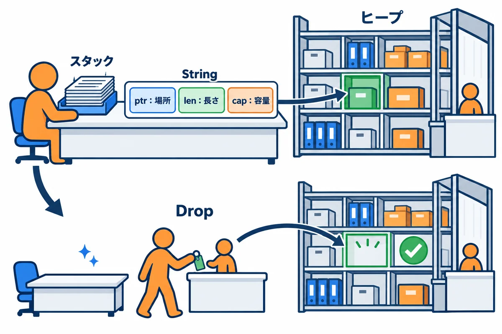
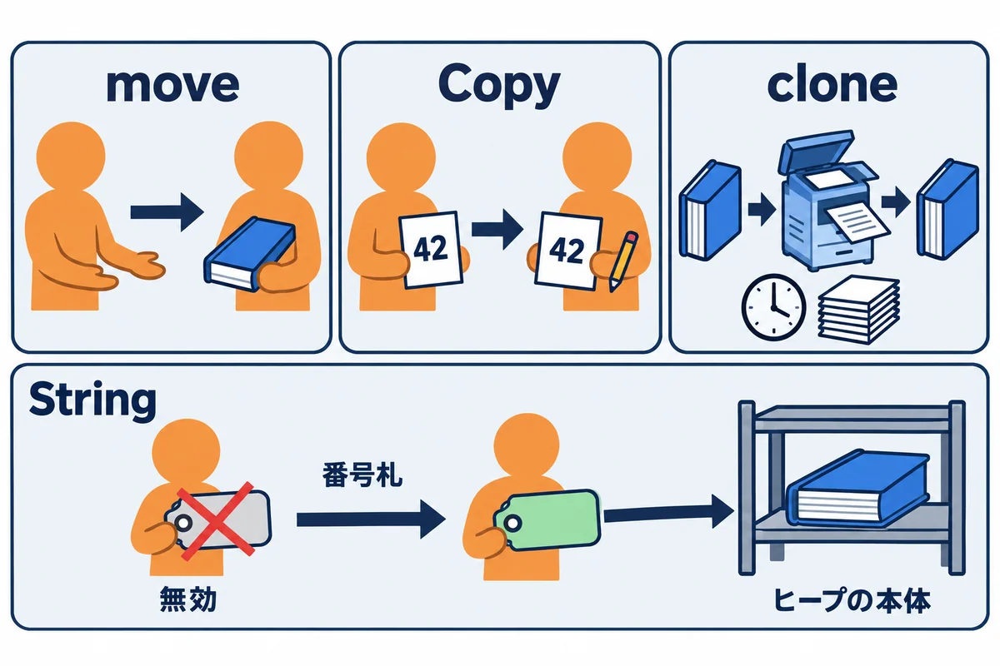
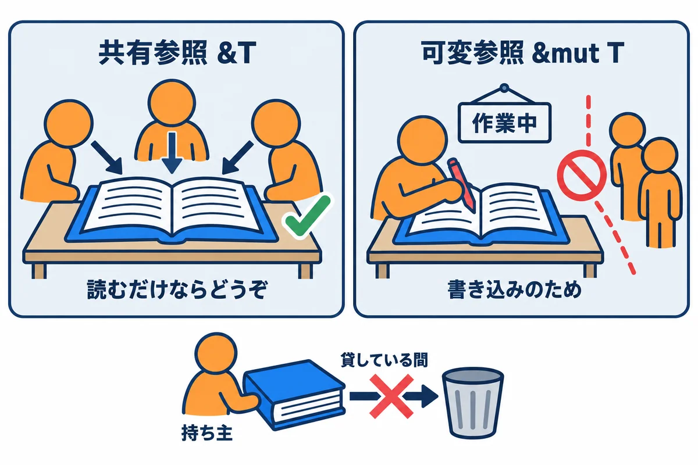
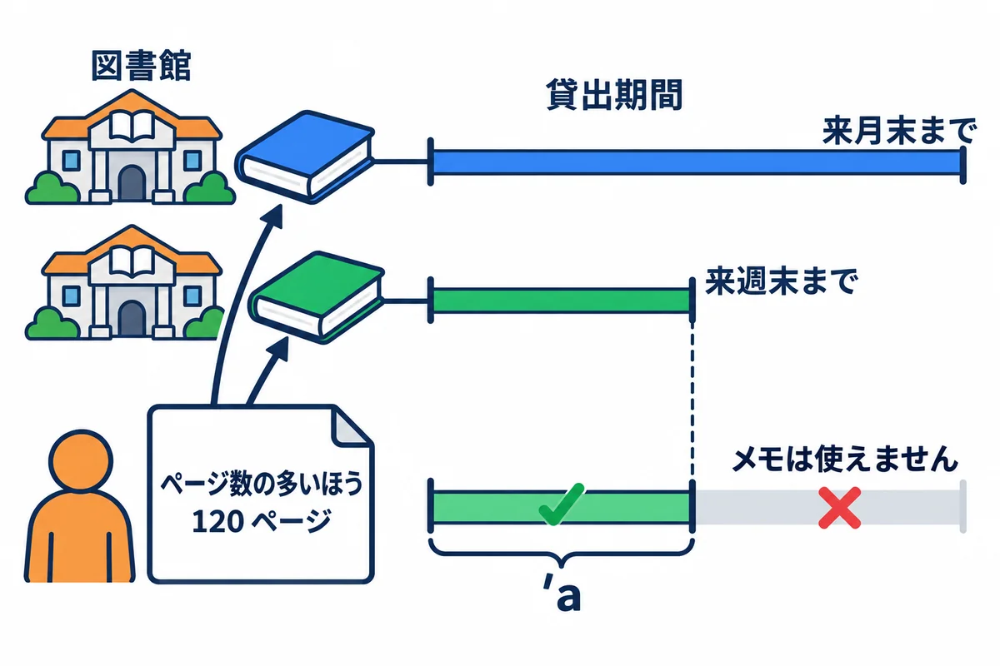
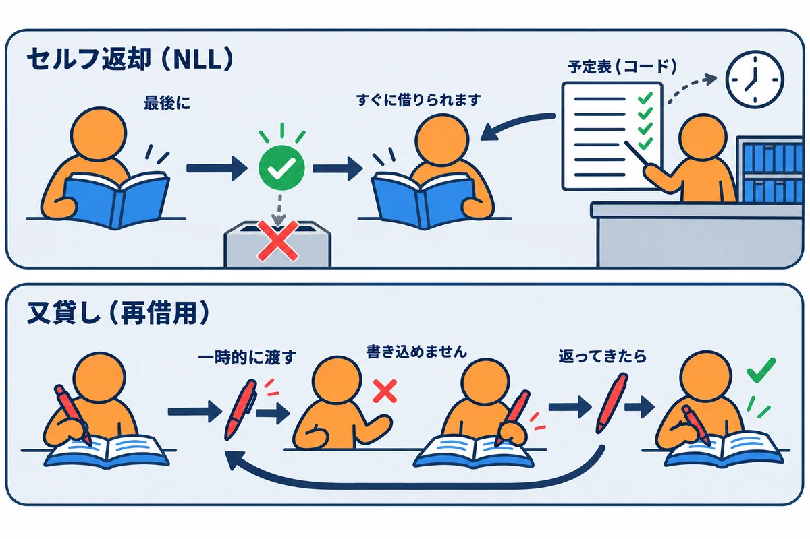

VOLUME 03 / RUST BACKEND MASTERY
Rust中核 — 所有権・借用・ライフタイム・スマートポインタ
メモリの図をコマ送りで追いながら、Rust のコンパイラが何を守っているのかを自分の言葉で説明できるようになる
色の付いた枠のコードの、右上の「コピー」ボタンを押してください。コピーしたら、PDF を見ていた画面に戻ります（ブラウザーで PDF を見ていた時は「戻る」、VS Code で見ていた時は VS Code の窓に切り替えます）。
この巻では、Rust（ラスト）をほかの言語と大きく違うものにしている所有権（しょゆうけん：ある値を最後に片付ける責任を、どの変数が持っているか）の仕組みを学びます。Rust を学ぶ人のほとんどが最初につまずくのがこの巻の内容です。でも安心してください。所有権のルールは、メモリ（コンピュータが値を置いておく場所）の図を1コマずつ動かして見れば、どれも「そうしないと危ないから」という理由がはっきり見えてきます。この巻では、コードの各行の時点でメモリがどうなっているかを、何十枚もの図で追いかけます。
大事なポイント（先に伝えておくと安心）: - コンパイルエラーは敵ではありません。 Rust のコンパイラ（rustc：書いたコードを機械語に翻訳するプログラム）は、メモリの事故が起きそうな場所を、プログラムを動かす前に教えてくれます。この巻では、わざとエラーを出して、エラー文と図を見比べる練習を何度もします。 - ルールは3つだけです。 ①値の持ち主は常に1人、②持ち主がいなくなったら値は片付けられる、③借りるときは「読む人が何人でも」か「書く人が1人だけ」のどちらか。この巻の10単元は、この3つを色々な場面に当てはめていくだけです。 - 暗記より図です。 「なぜエラーになるのか」が分からなくなったら、紙にスタックとヒープの箱を描いて、矢印を引いてみてください。
この巻を読み終えると、次のことができるようになります。
&T と 可変参照 &mut T のルールを守ったコードを書き、E0499 / E0502 / E0382 などのエラーを自分で直せる&str や &[T] で受け取り、結果を String や Vec<T> で返す、という借用を使った API 設計ができる'a を「参照どうしの有効期間の関係」として読み書きでき、省略規則が使える場面を見分けられるBox<T>・Rc<T>・RefCell<T>・Arc<T>・Mutex<T> を、目的に応じて選べるSend と Sync が何を表しているかを説明し、スレッドをまたいで値を共有するコードを書ける10個の単元は、大きく3つのまとまりに分かれています。左から順に進むと、「誰が持つか」→「いつまで借りられるか」→「どうやって共有するか」と、問いが少しずつ広がっていきます。
| 単元 | 一言でいうと | 主に出てくるエラー |
|---|---|---|
| UNIT 01 | 値はスタックかヒープに置かれ、持ち主のスコープが終わると1回だけ片付けられる | E0040 |
| UNIT 02 | 代入や関数呼び出しで、持ち主が移る（move） | E0382, E0507, E0204 |
| UNIT 03 | 借りるときは「読む人が何人でも」か「書く人が1人だけ」 | E0499, E0502, E0596 |
| UNIT 04 | &str と &[T] は「場所＋長さ」の借用。関数はこれで受け取る |
E0502, E0277, E0308 |
| UNIT 05 | 'a は「この参照はあの参照と同じ間だけ有効」という関係の印 |
E0106, E0597, E0515, E0621 |
| UNIT 06 | 参照を持つ struct は、借り元より長生きできない。迷ったら所有へ切り替える | E0106, E0597, E0716, E0521 |
| UNIT 07 | 借用は「最後に使った所」で終わる。借用を短くする書き方 | E0502, E0499, E0505 |
| UNIT 08 | Box でヒープに置くと、再帰型や dyn Trait が扱える |
E0072, E0782, E0277 |
| UNIT 09 | Rc で持ち主を複数に、RefCell で借用チェックを実行時に |
E0596, 実行時 panic |
| UNIT 10 | Arc と Mutex でスレッドをまたいで共有する |
E0373, E0277, E0382, E0594 |
cargo new でプロジェクトを作り、cargo run で動かせること。mut、String と &str の見た目の違い、Vec、struct と impl、enum と Option / Result、for 文、クロージャ（|x| x + 1 のような小さな関数）を一度見たことがあること。1単元ごとに、次の4ステップを回します。
^^^^ や ----）がどの行を指しているかを確かめます。この巻のコードは、すべて1つの Cargo プロジェクトの中で動かします。PowerShell（Windows のターミナル）で次のコマンドを実行してください。
# 練習用のプロジェクトを作る
cargo new ownership-lab
cd ownership-lab
# 複数の小さなプログラムを置くためのフォルダを作る
mkdir src\bin
WSL / macOS / Linux の場合:
mkdir src\binの代わりにmkdir -p src/binと入力します。ほかのコマンドは同じです。
Cargo には「src/bin/ フォルダに置いた .rs ファイルは、それぞれ別のプログラムとして扱う」という決まりがあります。この巻では、コード例ごとに名前を付けて src/bin/ に保存し、--bin 名前 で選んで実行します。
ownership-lab/
├── Cargo.toml
└── src/
├── main.rs
└── bin/
├── u01_stack_heap.rs ← cargo run --bin u01_stack_heap で実行
├── u01_drop_order.rs ← cargo run --bin u01_drop_order で実行
└── ……（単元ごとに増えていく）
たとえば UNIT 01 の最初の例 src/bin/u01_stack_heap.rs を実行すると、画面には次のように表示されます。
PS C:\Users\...\ownership-lab> cargo run --bin u01_stack_heap
Compiling ownership-lab v0.1.0 (C:\Users\...\ownership-lab)
Finished `dev` profile [unoptimized + debuginfo] target(s) in 0.26s
Running `target\debug\u01_stack_heap.exe`
n = 5
s = hello / len = 5 / cap = 5
s = hello, world / len = 12 / cap = 12
i32 の大きさ: 4 バイト
String の持ち手の大きさ: 24 バイト
最初の3行（Compiling / Finished / Running）は Cargo 自身のメッセージです。以降の「▼ 実行結果」では、この3行を省いてプログラムの出力だけを載せます。 また、エラーの例では、Cargo が出すエラー文をそのまま載せます。Windows ではファイルの場所が src\bin\…（バックスラッシュ区切り）と表示されますが、WSL / macOS / Linux では src/bin/… になります。意味は同じです。
ヒント: エラー番号（
E0382など）が出たら、rustc --explain E0382を実行すると、そのエラーの英語の解説と例が読めます。この巻では主なエラーを日本語で解説していきます。
この巻の図は、どれも同じ約束で描いています。最初にここで読み方を覚えてしまいましょう。
| 項目 | この巻で使うもの | 補足 |
|---|---|---|
| Rust | 1.99 以上（本書の実行結果は rustc 1.99.0 で取りました。1.99.1 でも同じ表示になることを確かめています。エラーの中の rustc のソースの場所の番号は、1.99.1 のものにしています） | rustc --version で確認できます。古い場合は rustup update で更新します |
| edition | 2024 | cargo new で作ると自動で edition = "2024" になります |
| OS | Windows 11（ARM64）+ PowerShell | WSL / macOS / Linux でも同じコードが動きます |
| 外部クレート | 使いません | この巻のコードはすべて標準ライブラリ（std）だけで動きます |
シリーズ全体の基準を「Rust 1.99 以上」にしているのは、第6巻以降で使う Web フレームワーク Topcoat 0.11 が 1.99 以上を必要とするためです。実行結果とエラー文は、すべて 1.99.0 で実際に動かしたものを載せています。2026-10-31 に、この巻の標準ライブラリだけの例を 1.99.0 と 1.99.1 の両方で動かして比べ、同じ表示になることを確かめました（違ったのは、毎回変わるメモリの場所やスレッドの順番と、エラーの中の rustc のソースの場所の番号だけで、その番号は 1.99.1 のものにしています）。
ヒント: 本書と同じ版で試したいとき …
ownership-labフォルダの中にrust-toolchain.tomlという名前のファイルを作り、下の2行を書いて保存します。すると、このフォルダの中でcargoを実行したときだけ、指定した版の Rust が使われます。パソコン全体の既定の版は変わりません。その版が入っていないと言われたら、rustup toolchain install 1.99.1で入れてください。
[toolchain]
channel = "1.99.1"
注意: この巻に出てくる「
Stringの持ち手は 24 バイト」といった大きさは、64 ビットのパソコンでの値です。いまのパソコンはほぼすべて 64 ビットなので、そのまま同じ数字になるはずです。また、0x23628108d90のようなメモリの場所（アドレス）を表示する例もありますが、この数字は実行するたびに変わります。大事なのは数字そのものではなく、「2つが同じか、違うか」です。
String が「スタックにある持ち手（ptr・len・cap）」と「ヒープにある文字の本体」の2つでできていることを、図に描ける{ } で囲まれた範囲）を抜けると、値が1回だけ片付けられる（Drop）こと、その順番が「作った順の逆」であることを確かめるDrop を使って「後片付けを絶対に忘れない」仕組み（RAII）を作れる
あなたは事務所で働いていて、机と倉庫を使って仕事をしています。
String は「番号札を机に置き、本体は倉庫」 という使い方をしています。机の上には「番号札（ptr：場所）」「今入っている文字数（len：長さ）」「借りた棚の大きさ（cap：容量）」の3枚のメモだけを置きます。ここで、倉庫の棚の返し方には2種類の事故があります。
| 事故 | たとえ | プログラムで起きること |
|---|---|---|
| 返し忘れ | 誰も使っていない棚が借りっぱなし | メモリリーク（使わないメモリが増え続け、いつか足りなくなる） |
| 2回返す | すでに返した棚を、別の人がもう一度返す | 二重解放（ほかの人が使い始めた棚を壊してしまう。セキュリティ事故の原因） |
C 言語では、プログラマが自分で「返す」命令（free）を書くので、この2つの事故がよく起きます。Java・JavaScript・Python は、ガベージコレクタ（GC：使われていないメモリを定期的に見回って回収する係）に任せて事故を防ぎますが、見回りのためにプログラムが少し止まることがあります。
Rust は第3の方法を選びました。 「この値の持ち主は誰か」をコンパイラが常に把握していて、持ち主のスコープが終わる場所に、片付けの処理を自動で1回だけ入れるのです。見回り係はいらず、返し忘れも二重返却も起きません。その代わり、「持ち主は誰か」をコンパイラが分かるように書く必要があります。それがこの巻で学ぶ所有権のルールです。
用語: スコープ … 変数が使える範囲のことです。Rust では基本的に
{から}までがスコープです。関数の本体も、ifやforの{ }も、ただの{ }もスコープになります。
まず、整数 n と文字列 s を作った直後のメモリを見てみましょう。
図から読み取ってほしいことは3つです。
n（i32）は大きさが4バイトと決まっているので、値そのものがスタックに置かれます。s（String）は、スタックに持ち手（ptr・len・cap の3つ、合わせて24バイト）、ヒープに文字の本体があります。ptr は「本体がヒープのどこにあるか」を指す番号札です。len・cap だけです。持ち手の大きさは24バイトのままです。だから Rust は、String を「大きさの決まった値」としてスタックで扱えるのです。| 置かれる場所 | どんな値か | 例 |
|---|---|---|
| スタック | 大きさがコンパイル時に決まっている値 | i32、f64、bool、char、(i32, bool)、[u8; 4]、String や Vec の持ち手 |
| ヒープ | 実行してみないと大きさが分からない値 | String の文字の本体、Vec の要素の並び、Box の中身（UNIT 08） |
次に、スコープを抜けたときに何が起きるかを、コマ送りで見ます。これは後で動かす u01_drop_order.rs の動きをそのまま絵にしたものです。
ポイントは、片付けの順番が「作った順の逆」になっていることです。後から作った値は、先に作った値を頼りにしているかもしれません（たとえば「接続」を作ってから、その接続を使う「問い合わせ」を作る）。逆順に片付ければ、頼りにしている相手が先に消えてしまう心配がありません。
▼ このコードがやること（先に日本語で）: 整数と文字列を1つずつ作り、文字列の「長さ」と「借りている容量」を表示します。文字を足すと長さと容量が増えること、それでも
Stringの持ち手の大きさ（24バイト）は変わらないことを確かめます。
src/bin/u01_stack_heap.rs という名前で保存します。
use std::mem::size_of;
fn main() {
// 整数は大きさが決まっているので、値そのものがスタックに置かれる
let n: i32 = 5;
// String は「持ち手」(ptr・len・cap) がスタックに、文字の本体がヒープに置かれる
let mut s = String::from("hello");
println!("n = {n}");
println!("s = {s} / len = {} / cap = {}", s.len(), s.capacity());
// 文字を足すと、ヒープの本体が大きくなる
s.push_str(", world");
println!("s = {s} / len = {} / cap = {}", s.len(), s.capacity());
// 持ち手の大きさは、中身の文字数に関係なくいつも同じ
println!("i32 の大きさ: {} バイト", size_of::<i32>());
println!("String の持ち手の大きさ: {} バイト", size_of::<String>());
}
cargo run --bin u01_stack_heap
▼ 実行結果
n = 5
s = hello / len = 5 / cap = 5
s = hello, world / len = 12 / cap = 12
i32 の大きさ: 4 バイト
String の持ち手の大きさ: 24 バイト
size_of を使えるようにするuse std::mem::size_of;
use は「長い名前を短く呼べるようにする」宣言です。std::mem::size_of は標準ライブラリ（std）の mem（メモリ）モジュールにある関数で、型の大きさ（バイト数）を教えてくれます。size_of::<型>() と書きます。::<i32> の部分は「どの型の大きさを調べるか」の指定です。len と capacityprintln!("s = {s} / len = {} / cap = {}", s.len(), s.capacity());
s.len() は今入っている文字のバイト数、s.capacity() はヒープに確保してある棚の大きさ（容量）です。図1-1の len と cap にあたります。String::from("hello") で作った直後は、ぴったり5バイトの棚を借りています。s.push_str(", world");
push_str は末尾に文字列を足すメソッドです。12バイトになると5バイトの棚では足りないので、String はより大きな棚を借り直し、中身を移してから古い棚を返します（その場で棚を広げられる場合もあります）。cap = 12 になりました。どれだけ大きく借り直すかは標準ライブラリの内部の工夫で、版によって変わることがあります。数字そのものより「len が増え、必要なら cap も増える」ことを押さえてください。println!("String の持ち手の大きさ: {} バイト", size_of::<String>());
String の持ち手は「ptr（8バイト）＋len（8バイト）＋cap（8バイト）」で24バイトです。中身が1文字でも100万文字でも変わりません。String 自体はスタックに置けるが、文字の本体はヒープ」という仕組みの正体です。▼ このコードがやること（先に日本語で）: 作られたときと片付けられたときにメッセージを出す、実験用の型
Noisyを作ります。ブロック{ }の中と外で値を作り、どの順番で片付けられるかを画面で確かめます。図1-2のコマ送りそのものです。
src/bin/u01_drop_order.rs:
// 片付けられるときにメッセージを出す、実験用の型
struct Noisy {
name: String,
}
impl Noisy {
fn new(name: &str) -> Noisy {
println!(" 作成: {name}");
Noisy {
name: name.to_string(),
}
}
}
// Drop を実装すると「片付けのときに実行する処理」を書ける
impl Drop for Noisy {
fn drop(&mut self) {
println!(" 片付け: {}", self.name);
}
}
fn main() {
println!("main 開始");
let _a = Noisy::new("a");
{
println!("内側のブロック開始");
let _b = Noisy::new("b");
let _c = Noisy::new("c");
println!("内側のブロック終了");
}
let d = Noisy::new("d");
// drop(値) で、スコープの終わりを待たずに今すぐ片付ける
drop(d);
println!("main 終了");
}
▶ ここで初めて出てくるコード
Drop（所有権と借用）: 値が片づけられる（持ち主がいなくなって消える）時に、自動で動く処理を書くための機能（トレイト）。impl Drop for 型 { fn drop(&mut self) { … } }と書くと、片づけの時にその処理が動きます。ファイルを閉じる・鍵を返す、などに使われています。
cargo run --bin u01_drop_order
▼ 実行結果
main 開始
作成: a
内側のブロック開始
作成: b
作成: c
内側のブロック終了
片付け: c
片付け: b
作成: d
片付け: d
main 終了
片付け: a
Drop トレイトを実装するimpl Drop for Noisy {
fn drop(&mut self) {
println!(" 片付け: {}", self.name);
}
}
Drop を Noisy に実装しています。Drop を実装すると、その値が片付けられる直前に drop メソッドが自動で呼ばれます。&mut self は「自分自身を書き換えてよい借用」という意味です（UNIT 03 で学びます）。ここでは名前を表示するだけです。drop の中身が終わると、Noisy が持っている name（String）も続けて片付けられ、ヒープの本体が返されます。 {
println!("内側のブロック開始");
let _b = Noisy::new("b");
let _c = Noisy::new("c");
println!("内側のブロック終了");
}
_b と _c は内側の { } のスコープで作られたので、その } に来た時点で片付けられます。main の終わりまで待ちません。c → b。作った順（b → c）の逆です。_ は「この変数は使わないけど、警告を出さないで」という合図です（使わない変数があるとコンパイラが警告を出すため）。drop(d) で今すぐ片付ける let d = Noisy::new("d");
drop(d);
drop(値) は標準ライブラリにある関数で、値を受け取って、その場で片付けます。「この先はもう使わないので、すぐ返したい」ときに使います（ファイルを閉じる、ロックを外すなど）。drop 関数の中身は空っぽです。値を受け取った関数のスコープがすぐ終わるので、そこで片付けられる、という仕組みです。この「値を関数に渡すと持ち主が移る」話は UNIT 02 で詳しく見ます。main の終わりmain の } で _a が片付けられます。d はすでに片付け済みなので、2回片付けられることはありません。片付けはどの値もちょうど1回です。Drop の本当の力は、「途中で return しても、エラーで抜けても、必ず片付けが走る」ことです。これを使った設計を RAII（アール・エー・アイ・アイ：Resource Acquisition Is Initialization の略。「資源の確保を値の作成と結びつけ、解放を値の片付けと結びつける」という考え方）と呼びます。
データベースのトランザクション（いくつかの書き込みを「全部成功」か「全部取り消し」のどちらかにまとめる仕組み）を真似した例で見てみましょう。
▼ このコードがやること（先に日本語で）: 「BEGIN（開始）」した取引を、最後に「COMMIT（確定）」しないまま関数を抜けたら、自動で「ROLLBACK（取り消し）」するようにします。タイトルが空のときは途中で
returnしますが、取り消しの処理を書き忘れる心配がありません。
src/bin/u01_transaction.rs:
// データベースの「トランザクション」を真似した型
struct Transaction {
id: u32,
committed: bool,
}
impl Transaction {
fn begin(id: u32) -> Transaction {
println!("[{id}] BEGIN");
Transaction {
id,
committed: false,
}
}
// self を丸ごと受け取るので、commit した後の tx はもう使えない
fn commit(mut self) {
println!("[{}] COMMIT", self.id);
self.committed = true;
}
}
impl Drop for Transaction {
fn drop(&mut self) {
// commit されないまま片付けられたら、取り消す
if !self.committed {
println!("[{}] ROLLBACK", self.id);
}
}
}
fn save_note(id: u32, title: &str) -> Result<(), String> {
let tx = Transaction::begin(id);
if title.is_empty() {
// ここで return しても、tx の片付け (drop) は自動で走る
return Err(String::from("タイトルが空です"));
}
println!("[{id}] INSERT INTO notes ... ({title})");
tx.commit();
Ok(())
}
fn main() {
println!("{:?}", save_note(1, "買い物メモ"));
println!("{:?}", save_note(2, ""));
}
▼ 実行結果
[1] BEGIN
[1] INSERT INTO notes ... (買い物メモ)
[1] COMMIT
Ok(())
[2] BEGIN
[2] ROLLBACK
Err("タイトルが空です")
commit(mut self) は自分を丸ごと受け取る fn commit(mut self) {
println!("[{}] COMMIT", self.id);
self.committed = true;
}
&self ではなく self です。これは「メソッドを呼ぶと、tx という値そのものが commit の中へ渡される」という意味です。commit が終わると、渡された値はそこで片付けられます。committed が true になっているので、drop の中の ROLLBACK は表示されません。tx.commit() の後で tx を使おうとすると、コンパイルエラーになります。「確定した取引をもう一度使う」というミスを、型で防いでいるわけです。return でも片付けが走る if title.is_empty() {
return Err(String::from("タイトルが空です"));
}
return で関数を抜けると、tx のスコープも終わります。すると Rust が自動で drop を呼び、committed が false なので ROLLBACK が表示されます。Drop がなかったら、return するすべての場所に「取り消し」の処理を手で書く必要があります。1か所でも忘れると、中途半端な書き込みが残ってしまいます。つまずきポイント:
let _ = 値;はその場で片付けられる「使わない変数だから」と
let _ = ...;と書くと、名前のない値はその文の終わりですぐ片付けられます。ロックやトランザクションを守る「ガード」の値でこれをやると、守ったつもりで何も守れていない、というバグになります。_guardのように_で始まる名前を付ければ、スコープの終わりまで生きます。
実際に、片付けられるタイミングを比べてみましょう。
▼ このコードがやること（先に日本語で）:
let _ = ...とlet _guard = ...で、片付けられるタイミングがどう違うかを確かめます。
src/bin/u01_let_underscore.rs:
struct Guard {
name: String,
}
impl Drop for Guard {
fn drop(&mut self) {
println!(" 解放: {}", self.name);
}
}
fn main() {
println!("1. let _ = ...");
// 名前を付けないと、その場ですぐ片付けられる
let _ = Guard {
name: String::from("ガード1"),
};
println!(" ↑ もう解放されている");
println!("2. let _guard = ...");
// _ で始まる名前を付けると、スコープの終わりまで生きる
let _guard = Guard {
name: String::from("ガード2"),
};
println!(" ↑ まだ解放されていない");
println!("main 終了");
}
▼ 実行結果
1. let _ = ...
解放: ガード1
↑ もう解放されている
2. let _guard = ...
↑ まだ解放されていない
main 終了
解放: ガード2
drop メソッドを直接呼ぶ（E0040）Drop を実装したからといって、a.drop() と自分で呼ぶことはできません。
struct Noisy;
impl Drop for Noisy {
fn drop(&mut self) {
println!("片付け");
}
}
fn main() {
let a = Noisy;
a.drop();
}
error[E0040]: explicit use of destructor method
--> src\bin\u01_err_explicit_drop.rs:11:7
|
11 | a.drop();
| ^^^^ explicit destructor calls not allowed
|
help: consider using `drop` function
|
11 - a.drop();
11 + drop(a);
|
For more information about this error, try `rustc --explain E0040`.
error: could not compile `ownership-lab` (bin "u01_err_explicit_drop") due to 1 previous error
a.drop() を許すと、その後 main の終わりでもう一度自動で drop が呼ばれ、片付けが2回になってしまいます。help: の提案どおり、drop(a) と関数の方を使います。drop(a) は a そのものを受け取るので、その後 a は使えなくなり、自動の片付けも二重に起きません。ヒント: エラー文の読み方 …
-->の後ろが「ファイル名:行:列」です。^^^^が問題の場所、-の線が「関係する場所」を指します。help:には直し方の候補が、-行（消す）と+行（足す）の形で示されます。
fn main() {
let s = String::from("hello");
drop(s);
println!("{s}");
}
error[E0382]: borrow of moved value: `s`
--> src\bin\u01_err_use_after_drop.rs:4:16
|
2 | let s = String::from("hello");
| - move occurs because `s` has type `String`, which does not implement the `Copy` trait
3 | drop(s);
| - value moved here
4 | println!("{s}");
| ^ value borrowed here after move
|
help: consider cloning the value if the performance cost is acceptable
|
3 | drop(s.clone());
| ++++++++
For more information about this error, try `rustc --explain E0382`.
error: could not compile `ownership-lab` (bin "u01_err_use_after_drop") due to 1 previous error
s を drop 関数に渡した時点で、s の持ち主は drop 関数に移り（move）、そこで片付けられました。4行目で s を使おうとしても、もう s は何も持っていません。片付け済みの倉庫の棚を見に行くのと同じで、とても危険です。value borrowed here after move）、3行目で移動済み（value moved here）。String は Copy を実装していないので代入や受け渡しで移動する（2行目の説明）」。drop する位置を後ろにずらします。この E0382 は Rust で最も多いエラーの1つなので、次の UNIT 02 で詳しく扱います。この教材を通して作るメモアプリ RustNote でも、「スコープの終わりで自動で片付く」性質に何度も助けられます。
String は、リクエストを処理する関数（ハンドラ）が終わると自動で片付けられます。後片付けのコードは1行も書きません。Mutex の鍵も、「鍵を表す値（ガード）が片付けられたら鍵を返す」という RAII の仕組みでできています。問題1（予想） 次のプログラムの出力を、実行する前に紙に書いてください。
struct Noisy {
name: String,
}
impl Drop for Noisy {
fn drop(&mut self) {
println!("drop {}", self.name);
}
}
fn make(name: &str) -> Noisy {
Noisy {
name: name.to_string(),
}
}
fn main() {
let _x = make("x");
{
let _y = make("y");
let z = make("z");
drop(z);
println!("block end");
}
let _w = make("w");
println!("main end");
}
問題2（作る） 作成時に「ロック取得: 名前」、片付け時に「ロック解除: 名前」と表示する LockGuard 型を作ってください。そして、負の数を渡すと途中で Err を返す関数 update(value: i32) -> Result<i32, String> の先頭で LockGuard を作り、どちらの場合も「ロック解除」が表示されることを確かめてください。
問題3（説明） String の中身が "a" でも、長い小説1冊分でも、size_of::<String>() が同じ 24 になるのはなぜですか。図1-1を使って説明してください。
問題1の解答（src/bin/u01_ex1.rs で確認）
drop z
block end
drop y
main end
drop w
drop x
z は drop(z) でその場で片付けられるので、block end より先に drop z が出ます。} で、残っていた _y が片付けられます。main の } では、後から作った _w が先、_x が最後です（作った順の逆）。問題2の解答例（src/bin/u01_ex2.rs）
struct LockGuard {
resource: String,
}
impl LockGuard {
fn acquire(resource: &str) -> LockGuard {
println!("ロック取得: {resource}");
LockGuard {
resource: resource.to_string(),
}
}
}
impl Drop for LockGuard {
fn drop(&mut self) {
println!("ロック解除: {}", self.resource);
}
}
fn update(value: i32) -> Result<i32, String> {
let _guard = LockGuard::acquire("notes");
if value < 0 {
return Err(String::from("負の数は保存できません"));
}
println!("更新: {value}");
Ok(value)
}
fn main() {
println!("{:?}", update(5));
println!("{:?}", update(-1));
}
▼ 実行結果
ロック取得: notes
更新: 5
ロック解除: notes
Ok(5)
ロック取得: notes
ロック解除: notes
Err("負の数は保存できません")
let _guard と名前を付けるのが大事です。let _ = にすると、取得した直後に解除されてしまいます（つまずきポイント参照）。return Err(...) で抜けた場合も、_guard のスコープが終わるので必ず「ロック解除」が表示されます。問題3の解答例
String の値そのもの（スタックにある部分）は、「本体の場所 ptr」「長さ len」「容量 cap」の3つの数だけでできていて、64ビット環境ではそれぞれ8バイト、合計24バイトです。文字の本体はヒープにあり、String の値はその場所を指しているだけなので、中身が何文字でも持ち手の大きさは変わりません。
String の文字など）はヒープに置かれ、スタックの持ち手がヒープを指す。drop(値)。Drop を使うと、途中で return しても後片付けが必ず走る（RAII）。ガードには let _guard のように名前を付ける。let s2 = s1; のような代入や関数呼び出しで、String の持ち主が移る（move）ことを図で説明できるi32 などの Copy 型と、clone() による明示的な複製の違い、それぞれの費用が分かる
あなたが図書館の本ではなく、自分で買った本を持っているとします。
では、なぜ String の代入は「書き写し」ではなく「手渡し」なのでしょうか。UNIT 01 で見たとおり、String は「スタックの持ち手（番号札）」と「ヒープの本体」でできています。代入で持ち手だけを書き写すと、同じ倉庫の棚を指す番号札が2枚できてしまいます。2人とも「自分が持ち主だ」と思っていたら、2人ともスコープの終わりで棚を返そうとして、二重解放が起きます。
そこで Rust は「番号札を書き写したら、元の番号札は無効にする」と決めました。これが move です。
let s2 = s1; の前後を、1行ずつコマ送りで見ます。
もし③で s1 を無効にしなかったら、どうなるでしょうか。左側がその「もしも」の世界、右側が clone() で本当に複製した場合です。
それに対して i32 のような値は、値そのものがスタックにあるだけで、ヒープに本体を持っていません。書き写しても「同じ本体を2人が指す」ことが起きないので、代入しても元の変数は使えたままです。こういう型を Copy 型と呼びます。
| 分類 | 代入・関数に渡したとき | 主な型 |
|---|---|---|
| Copy 型 | 値が書き写され、元も使える | 整数（i32・u64 など）、小数（f64）、bool、char、共有参照 &T、Copy 型だけでできたタプル・配列 |
| Copy でない型 | 持ち主が移り（move）、元は使えなくなる | String、Vec<T>、Box<T>、HashMap、可変参照 &mut T、String などを含む struct |
用語: Copy と Clone … どちらも「複製できる」ことを表すトレイト（約束ごと）です。Copy は「書き写すだけで安全・安価に複製できる」型にだけ付けられ、代入のたびに自動で複製されます。Clone は「
.clone()と書いたときに複製できる」型に付けられ、費用がかかるかもしれないので自分で明示的に呼ぶ必要があります。Copy 型はすべて Clone でもあります。
▼ このコードがやること（先に日本語で）: 文字列を move したとき、ヒープの本体の場所（アドレス）が変わらないことを表示して確かめます。次に clone して、本体が別の場所に作られることを見ます。最後に整数の代入では元の変数がそのまま使えることを確かめます。
src/bin/u02_move_clone_copy.rs:
fn main() {
let s1 = String::from("hello");
// as_ptr() は、ヒープにある本体の場所（アドレス）を返す
println!("s1 の本体の場所: {:p}", s1.as_ptr());
// s1 の持ち手が s2 へ移る（move）。本体は動かない
let s2 = s1;
println!("s2 の本体の場所: {:p}", s2.as_ptr());
// clone は本体をまるごと複製する。場所が別になる
let s3 = s2.clone();
println!("s3 の本体の場所: {:p}", s3.as_ptr());
println!("s2 = {s2}, s3 = {s3}");
// i32 は Copy 型。代入しても x はそのまま使える
let x = 42;
let y = x;
println!("x = {x}, y = {y}");
}
▶ ここで初めて出てくるコード
.as_ptr()（所有権と借用）: 値の本体がメモリのどこにあるか（アドレス）を返すメソッド。「同じ場所を指しているか」を見るための、仕組みの確かめ用です。ふだんのプログラムではあまり使いません。
cargo run --bin u02_move_clone_copy
▼ 実行結果（アドレスの数字は実行ごとに変わります）
s1 の本体の場所: 0x23628108d90
s2 の本体の場所: 0x23628108d90
s3 の本体の場所: 0x23628108db0
s2 = hello, s3 = hello
x = 42, y = 42
{:p} でアドレスを表示するprintln!("s1 の本体の場所: {:p}", s1.as_ptr());
as_ptr() は、String の持ち手の ptr（ヒープの本体の場所）を取り出すメソッドです。{:p} は「ポインタ（場所）として16進数で表示する」という書式です。0x で始まる数字がメモリの場所を表します。let s2 = s1;
println!("s2 の本体の場所: {:p}", s2.as_ptr());
s1 を使おうとすると E0382 になります（後の「よくあるエラー」で実際に見ます）。let s3 = s2.clone();
...db0 で、s2 の本体（...d90）とは別の場所です。図2-2の右側のとおり、ヒープに新しい棚を借りて、文字を全部書き写しています。Vec を clone() すると、10万件すべてを複製します。clone は「費用を払ってでも、独立した複製が欲しい」ときにだけ使うと覚えてください。let x = 42;
let y = x;
println!("x = {x}, y = {y}");
i32 は Copy 型なので、let y = x; は「42 を書き写す」だけです。x も y もそれぞれ自分の 42 を持っていて、どちらも使えます。move は代入だけでなく、関数に値を渡したときと関数から値を返したときにも起きます。
▼ このコードがやること（先に日本語で）:
Stringを受け取る関数に値を渡すと、呼んだ側ではもう使えなくなること、関数がStringを返すと持ち主が呼んだ側に戻ってくることを確かめます。整数は渡しても呼んだ側で使い続けられます。
src/bin/u02_move_fn.rs:
// String を受け取る関数。呼んだ側から所有権が移ってくる
fn print_and_drop(s: String) {
println!("受け取った: {s}");
// ここで s のスコープが終わり、本体が片付けられる
}
// 作った String を呼び出し元へ返す。所有権も一緒に返る
fn make_greeting(name: &str) -> String {
let greeting = format!("こんにちは、{name}さん");
greeting
}
// 受け取って、手を加えて、返す
fn add_mark(mut s: String) -> String {
s.push('!');
s
}
// i32 は Copy 型なので、渡しても呼んだ側の値は残る
fn show_number(n: i32) {
println!("数値: {n}");
}
fn main() {
let memo = String::from("メモ");
print_and_drop(memo);
let greeting = make_greeting("佐藤");
let greeting = add_mark(greeting);
println!("{greeting}");
let n = 7;
show_number(n);
println!("n はまだ使える: {n}");
}
▼ 実行結果
受け取った: メモ
こんにちは、佐藤さん!
数値: 7
n はまだ使える: 7
print_and_drop(memo) の前後で、メモリはこう変わります。
String なら「受け取って持ち主になる」fn print_and_drop(s: String) {
println!("受け取った: {s}");
}
String（& が付いていない）なので、この関数は値を丸ごと受け取ります。呼んだ側の memo から、関数の s へ持ち主が移ります（図2-3の②）。} で s のスコープが終わるので、本体が片付けられます（③）。だから、main で print_and_drop(memo); の後に memo を使うと E0382 になります。fn make_greeting(name: &str) -> String {
let greeting = format!("こんにちは、{name}さん");
greeting
}
format! は println! と同じ書き方で、表示する代わりに新しい String を作るマクロです。greeting（; なし）が戻り値です。関数の中で作った String の持ち主が、呼んだ側の変数へ移ります。だから関数の } で片付けられずに済みます。fn add_mark(mut s: String) -> String {
s.push('!');
s
}
mut s は「受け取った値を、関数の中で書き換えてよい」という意味です。let greeting = add_mark(greeting); のように、同じ名前で受け直すのは Rust でよく見る書き方です（第2巻で学んだシャドーイング）。fn show_number(n: i32) {
println!("数値: {n}");
}
i32 は Copy 型なので、関数には 7 という値が書き写されて渡されます。main の n はそのまま残るので、呼んだ後も使えます。ヒント: 「関数に渡したら使えなくなる」のは不便に感じるかもしれません。実務では、読むだけの関数は値を受け取らず「借りる」のが普通です（
&Stringや&str）。その方法を次の UNIT 03 で学びます。
RustNote のノート保存を小さく真似して、「move させたい値」と「Copy にしておきたい値」を使い分けてみます。
▼ このコードがやること（先に日本語で）: フォームから届いた「新しいノート」を保存処理へ丸ごと渡し（move）、保存処理は中の文字列をコピーせずにそのまま保存済みノートへ移します。保存結果の ID は小さな Copy 型にして、何度でも気軽に使えるようにします。最後に、一覧のスナップショット（ある時点の写し）を clone で作り、元を変えても写しは変わらないことを確かめます。
src/bin/u02_note_store.rs:
// 小さな ID は Copy にしておくと、何度でも気軽に渡せる
#[derive(Debug, Clone, Copy, PartialEq)]
struct NoteId(i64);
// フォームから届いた「これから保存するノート」
#[derive(Debug)]
struct NewNote {
title: String,
body: String,
}
// 保存済みのノート
#[derive(Clone)]
struct Note {
id: NoteId,
title: String,
body: String,
done: bool,
}
impl Note {
// 中身を1行の文字列にまとめる（&self は「借りて読むだけ」の意味。UNIT 03 で詳しく）
fn summary(&self) -> String {
format!(
"#{} {} / {} / done={}",
self.id.0, self.title, self.body, self.done
)
}
}
struct NoteStore {
notes: Vec<Note>,
next_id: i64,
}
impl NoteStore {
fn new() -> NoteStore {
NoteStore {
notes: Vec::new(),
next_id: 1,
}
}
// NewNote を丸ごと受け取る（所有権を引き取る）
fn create(&mut self, new_note: NewNote) -> NoteId {
let id = NoteId(self.next_id);
self.next_id += 1;
// new_note の中の String を、コピーせずにそのまま Note へ移す
let note = Note {
id,
title: new_note.title,
body: new_note.body,
done: false,
};
self.notes.push(note);
id
}
}
fn main() {
let mut store = NoteStore::new();
let draft = NewNote {
title: String::from("買い物"),
body: String::from("牛乳と卵"),
};
let id = store.create(draft);
// NoteId は Copy なので、代入しても id は使い続けられる
let same = id;
println!("{id:?} と {same:?} は同じ? {}", id == same);
// 一覧を別の場所へ渡したいときは、費用を承知で clone する
let snapshot = store.notes.clone();
store.notes[0].done = true;
println!("store: {}", store.notes[0].summary());
println!("snapshot: {}", snapshot[0].summary());
}
▼ 実行結果
NoteId(1) と NoteId(1) は同じ? true
store: #1 買い物 / 牛乳と卵 / done=true
snapshot: #1 買い物 / 牛乳と卵 / done=false
#[derive(Clone, Copy)] で Copy 型にする#[derive(Debug, Clone, Copy, PartialEq)]
struct NoteId(i64);
#[derive(...)] は「この型に、よく使う機能を自動で付けて」という指示です。Clone と Copy を付けると、NoteId は i32 と同じように代入しても元が残る型になります。NoteId の中身は i64 だけなので OK です。PartialEq は == で比べられるようにするためのものです。create は NewNote を丸ごと受け取る fn create(&mut self, new_note: NewNote) -> NoteId {
new_note: NewNote と & なしで受け取っているので、呼んだ側の draft は move されます。保存したノートの下書きを、保存した後でうっかり使い回す、というミスを防げます。&mut self は「このメソッドは store の中身を書き換える」という意味です（UNIT 03 で学びます）。 let note = Note {
id,
title: new_note.title,
body: new_note.body,
done: false,
};
title: new_note.title は、new_note の中の String の持ち手だけを note へ移しています。文字の本体はコピーされません。new_note はもう持ち主ではないので、関数の終わりで二重に片付けられることもありません。Rust はこうした「部分的な move」も正しく追いかけてくれます。 let snapshot = store.notes.clone();
store.notes[0].done = true;
Vec<Note> を clone すると、中の Note も1つずつ clone され、String の本体も全部複製されます。snapshot は元の一覧と完全に独立しているので、元の done を true にしても写しは false のままです。つまずきポイント: エラーが出たらとりあえず
.clone()してしまうE0382 のエラー文には、
help: consider cloning the value if the performance cost is acceptable（性能の費用が許せるなら clone を検討して）と出ます。これを見て何でも.clone()で黙らせると、コンパイルは通りますが、毎回本体を複製する重いプログラムになります。まず「この関数は値を持ち続ける必要があるか？読むだけなら借りればいいのでは？」と考えてください。借り方は UNIT 03 と 04 で学びます。
fn main() {
let s1 = String::from("hello");
let s2 = s1;
println!("{s1} / {s2}");
}
error[E0382]: borrow of moved value: `s1`
--> src\bin\u02_err_use_after_move.rs:4:16
|
2 | let s1 = String::from("hello");
| -- move occurs because `s1` has type `String`, which does not implement the `Copy` trait
3 | let s2 = s1;
| -- value moved here
4 | println!("{s1} / {s2}");
| ^^ value borrowed here after move
|
help: consider cloning the value if the performance cost is acceptable
|
3 | let s2 = s1.clone();
| ++++++++
For more information about this error, try `rustc --explain E0382`.
error: could not compile `ownership-lab` (bin "u02_err_use_after_move") due to 1 previous error
s1 の箱を開けようとしています。move occurs because ...（なぜ move が起きるのか：String は Copy でないから）、value moved here（どこで移ったか）、value borrowed here after move（どこで使おうとしたか）。この3点セットは E0382 で毎回出るので、読み慣れておきましょう。s1 を使い終わってから move する、②s2 には借用 &s1 を入れる（UNIT 03）、③本当に2つ必要なら s1.clone()。fn save(title: String) {
println!("保存: {title}");
}
fn main() {
let title = String::from("買い物");
for _ in 0..2 {
save(title);
}
}
error[E0382]: use of moved value: `title`
--> src\bin\u02_err_move_in_loop.rs:8:14
|
6 | let title = String::from("買い物");
| ----- move occurs because `title` has type `String`, which does not implement the `Copy` trait
7 | for _ in 0..2 {
| ------------- inside of this loop
8 | save(title);
| ^^^^^ value moved here, in previous iteration of loop
|
note: consider changing this parameter type in function `save` to borrow instead if owning the value isn't necessary
--> src\bin\u02_err_move_in_loop.rs:1:16
|
1 | fn save(title: String) {
| ---- ^^^^^^ this parameter takes ownership of the value
| |
| in this function
help: consider cloning the value if the performance cost is acceptable
|
8 | save(title.clone());
| ++++++++
For more information about this error, try `rustc --explain E0382`.
error: could not compile `ownership-lab` (bin "u02_err_move_in_loop") due to 1 previous error
save(title) で title は save へ移り、片付けられました。2周目にはもう渡すものがありません。value moved here, in previous iteration of loop（前の周回でここで移動した）がそれを言っています。note:: 「save が値を持ち続ける必要がないなら、引数を借用にしたら？」と提案しています。save は表示するだけなので、fn save(title: &str) にするのが正解です（練習問題2）。fn main() {
let names = vec![String::from("佐藤"), String::from("鈴木")];
let first = names[0];
println!("{first}");
}
error[E0507]: cannot move out of index of `Vec<String>`
--> src\bin\u02_err_move_out_of_index.rs:3:17
|
3 | let first = names[0];
| ^^^^^^^^ move occurs because value has type `String`, which does not implement the `Copy` trait
|
help: consider borrowing here
|
3 | let first = &names[0];
| +
help: consider cloning the value if the performance cost is acceptable
|
3 | let first = names[0].clone();
| ++++++++
For more information about this error, try `rustc --explain E0507`.
error: could not compile `ownership-lab` (bin "u02_err_move_out_of_index") due to 1 previous error
names[0] の String を first へ move すると、Vec の0番目に「無効な穴」が空いてしまいます。Vec は最後に全要素を片付けるので、穴の分を二重に片付けたり、穴を読んだりする危険があります。そこで Rust は、添え字（インデックス）で中身を取り出して move することを禁止しています。&names[0]（借りる）、独立した値が欲しいなら names[0].clone()、Vec から本当に取り出したいなら names.remove(0) などのメソッドを使います（練習問題3）。#[derive(Clone, Copy)]
struct NewNote {
title: String,
}
fn main() {
let a = NewNote {
title: String::from("買い物"),
};
let b = a;
println!("{} {}", a.title, b.title);
}
error[E0204]: the trait `Copy` cannot be implemented for this type
--> src\bin\u02_err_derive_copy.rs:2:8
|
1 | #[derive(Clone, Copy)]
| ---- in this derive macro expansion
2 | struct NewNote {
| ^^^^^^^
3 | title: String,
| ------------- this field does not implement `Copy`
For more information about this error, try `rustc --explain E0204`.
error: could not compile `ownership-lab` (bin "u02_err_derive_copy") due to 1 previous error
title が String（Copy でない）なので、NewNote を書き写すと、図2-2の左側と同じ「1つの本体を2人が指す」状態になってしまいます。だから Copy は付けられません。#[derive(Clone)] だけにして、複製が必要なときは a.clone() と書きます。NewNote は保存処理へ move: 作成フォームの内容から作った NewNote は、NoteRepository の作成メソッドに丸ごと渡します。保存が終わった下書きを使い回すミスが、型のレベルで起きなくなります。UserId・NoteId は Copy: 中身が整数1つだけの ID 型は #[derive(Clone, Copy)] を付けます。ログ出力、権限チェック、URL 作成など、あちこちで気軽に渡せます。Email・NoteTitle は Copy にしない: 中に String を持つので Copy にはできません。必要なら Clone だけを付けます。clone() は理由があるときだけ: 一覧を返すときに全ノートを clone するようなコードは、件数が増えると遅くなります。RustNote では「借りて渡す」設計を基本にします。問題1（予想） 次のコードの出力を予想してください。また、a と c を最後の println! で使うとどうなるか答えてください。
fn shout(mut s: String) -> String {
s.push_str("!!");
s
}
fn main() {
let a = String::from("hey");
let b = shout(a);
let c = b.clone();
let d = shout(c);
println!("{b} {d}");
}
問題2（修正） 「よくあるエラー2」のコードを、clone() を使わずにコンパイルが通るように直してください。ループの後で title をもう一度表示できるようにしてください。
問題3（3つの方法） vec![String::from("佐藤"), String::from("鈴木")] から先頭の名前を取り出す方法を、「借りる」「複製する」「Vec から取り出す」の3通りで書いてください。
問題1の解答（src/bin/u02_ex1.rs）
hey!! hey!!!!
shout(a) で a は move され、"hey!!" になった String が b に返ってきます。b.clone() で独立した c を作り、shout(c) でさらに "!!" が足されて d は "hey!!!!" です。b は clone の元なので無事です。a や c を使うと、どちらも shout に move 済みなので E0382 になります。問題2の解答例（src/bin/u02_ex2.rs）
fn save(title: &str) {
println!("保存: {title}");
}
fn main() {
let title = String::from("買い物");
for _ in 0..2 {
save(&title);
}
println!("最後に: {title}");
}
▼ 実行結果
保存: 買い物
保存: 買い物
最後に: 買い物
save の引数を &str（文字列を借りる型）にし、呼ぶ側は &title で貸します。title の持ち主は main のままなので、何度でも貸せて、最後にも使えます。問題3の解答例（src/bin/u02_ex3.rs）
fn main() {
let names = vec![String::from("佐藤"), String::from("鈴木")];
// 1. 借りる（いちばん安い）
let first: &String = &names[0];
println!("借りた: {first}");
// 2. 複製する（names は残る）
let copied: String = names[0].clone();
println!("複製した: {copied}");
// 3. Vec ごと手放して、要素を取り出す
let mut names = names;
let taken: String = names.remove(0);
println!("取り出した: {taken} / 残り: {names:?}");
}
▼ 実行結果
借りた: 佐藤
複製した: 佐藤
取り出した: 佐藤 / 残り: ["鈴木"]
remove(0) は要素を取り出して残りを前に詰めるので、Vec に穴が空きません。書き換えが必要なので let mut names = names; で mut な変数へ移しています。String などの代入・関数呼び出しは move。コピーされるのは持ち手だけで、元の変数は無効になる（二重解放を防ぐため）。i32 などの Copy 型は書き写されるだけなので元も使える。clone() は本体ごと複製する、費用のかかる明示的な操作。value moved here）」を探し、clone の前に「借りられないか」を考える。&T と &mut T）を使えるVec の引っ越しの図で説明できる
UNIT 02 の「本の持ち主」の話の続きです。友だちに本を手渡す（move）と、自分の手元から本がなくなってしまいました。でも、ちょっと読ませてあげたいだけなら、貸せばいいのです。
&T = 閲覧のための貸し出し です。本を机に開いて置き、「読むだけならどうぞ」と言います。何人が同時にのぞき込んでも問題ありません。誰も本を書き換えないからです。&mut T = 書き込みのための貸し出し です。1人に赤ペンと一緒に本を渡し、「直していいよ」と言います。書き込み中は「作業中」の札が掛かり、ほかの人は書くことも、読むこともできません。なぜ「書き込み中は読むのも禁止」なのでしょう。読んでいる途中でページが差し替えられたり、ページが丸ごと別の場所へ移されたりしたら、読んでいる人は消えたページを見つめることになるからです。プログラムでは、これが「片付け済みのメモリを読む」という深刻なバグになります。後で実際に見てみましょう。
用語: 参照（さんしょう）と借用（しゃくよう） … 参照は「値がある場所を指す、持ち主ではない値」です。
&xと書くとxへの参照が作られます。参照を作ることを借用と呼びます。借用は値を所有しないので、参照がなくなっても値は片付けられません。
memo を共有参照で何人かに貸している状態と、可変参照で1人に貸している状態を比べます。参照の矢印が、ヒープの本体ではなくスタックの memo（持ち手）を指していることにも注目してください。&String は「String という値そのもの」への参照だからです。
このルールを表にまとめると、次のようになります。「今ある借用」の行と「新しくしたいこと」の列が交わるマスを見てください。
| 今ある借用 ＼ 新しくしたいこと | &x で読む借用を作る |
&mut x で書く借用を作る |
持ち主が x を書き換える・move する |
|---|---|---|---|
| 借用なし | OK | OK（x が mut なら） |
OK |
&x が1つ以上ある |
OK | NG（E0502） | NG |
&mut x が1つある |
NG（E0502） | NG（E0499） | NG |
「今ある借用」とは、作られていて、この後もまだ使われる予定の借用のことです。もう使われない借用は、自動で返却されたものとして扱われます（UNIT 07 で詳しく学びます）。
▼ このコードがやること（先に日本語で）: メモの文字列を、読むだけの関数には
&で、書き換える関数には&mutで貸します。どちらの場合も、持ち主はmainのmemoのままなので、関数を呼んだ後もmemoを使い続けられます。最後に、整数への可変参照を通して値を1増やします。
src/bin/u03_borrow_basic.rs:
// &String は「String を借りて読むだけ」という意味
fn count_chars(text: &String) -> usize {
text.chars().count()
}
// &mut String は「String を借りて書き換える」という意味
fn add_suffix(text: &mut String) {
text.push_str("（編集済み）");
}
fn main() {
let mut memo = String::from("牛乳を買う");
// 共有参照（読むための借用）は、同時にいくつ作ってもよい
let r1 = &memo;
let r2 = &memo;
println!("r1 = {r1}, r2 = {r2}");
println!("文字数 = {}", count_chars(&memo));
// 可変参照（書くための借用）で、中身を書き換える
add_suffix(&mut memo);
println!("memo = {memo}");
let mut count = 10;
let c = &mut count;
// 参照の「先にある値」を変えるときは * を付ける
*c += 1;
println!("count = {count}");
}
cargo run --bin u03_borrow_basic
▼ 実行結果
r1 = 牛乳を買う, r2 = 牛乳を買う
文字数 = 5
memo = 牛乳を買う（編集済み）
count = 11
&String と &mut Stringfn count_chars(text: &String) -> usize {
text.chars().count()
}
fn add_suffix(text: &mut String) {
text.push_str("（編集済み）");
}
&String は「String への共有参照」、&mut String は「String への可変参照」という型です。関数の引数の型を見るだけで、「この関数は読むだけ」「この関数は書き換える」が分かります。text.chars().count() は文字数を数えます（第2巻で学んだとおり、len() はバイト数なので日本語では文字数と一致しません）。. でメソッドを呼ぶと、Rust が自動で参照の先の値をたどってくれます（自動参照外し）。だから (*text).push_str(...) と書かなくても text.push_str(...) で動きます。 let r1 = &memo;
let r2 = &memo;
println!("r1 = {r1}, r2 = {r2}");
println!("文字数 = {}", count_chars(&memo));
&memo で memo への共有参照を作ります。r1・r2・関数の引数 text の3つが同時に memo を指していても、全員が読むだけなので問題ありません（図3-1の左）。&T は Copy 型です。参照（場所を指す8バイトの値）を書き写しても、memo が2つになるわけではないからです。 add_suffix(&mut memo);
println!("memo = {memo}");
&mut memo で可変参照を作って渡します。可変参照を作るには、元の変数が let mut で宣言されている必要があります。push_str した結果は、memo 本体に反映されています。memo を move していないので、呼んだ後も memo を使えます。r1 と r2 はもう使われないので、&mut memo を作っても衝突しません（UNIT 07 で学ぶ NLL のおかげです）。* で参照の先の値を変える let mut count = 10;
let c = &mut count;
*c += 1;
c は「count の場所」を持っている参照です。c += 1 と書くと「場所に1を足す」という意味不明な命令になってしまうので、*c で「参照の先にある値」を取り出してから 1 を足します。この * を参照外し（デリファレンス）と呼びます。+= や = で値そのものを書き換えるときは * が必要です。ヒント: このコードを
cargo clippy（Rust の公式のコード点検ツール）にかけると、「&Stringではなく&strにしましょう」という提案が出ます。理由は UNIT 04 で説明します。この単元では、借用の仕組みを見やすくするために、あえて&Stringを使っています。
▼ このコードがやること（先に日本語で）: ノートを表示用の文字列にする関数（読むだけ）と、完了状態を切り替える関数・タイトルを変える関数（書き換える）を作ります。関数の引数の型が
&Noteか&mut Noteかで、役割が一目で分かるようにします。
src/bin/u03_note_fns.rs:
struct Note {
title: String,
done: bool,
}
// 読むだけなので &Note を受け取る
fn describe(note: &Note) -> String {
let mark = if note.done { "[x]" } else { "[ ]" };
format!("{mark} {}", note.title)
}
// 書き換えるので &mut Note を受け取る
fn toggle(note: &mut Note) {
note.done = !note.done;
}
// 書き換える。新しいタイトルは読むだけなので &str で受け取る
fn rename(note: &mut Note, new_title: &str) {
note.title = new_title.to_string();
}
fn main() {
let mut note = Note {
title: String::from("牛乳を買う"),
done: false,
};
println!("{}", describe(¬e));
toggle(&mut note);
rename(&mut note, "牛乳と卵を買う");
println!("{}", describe(¬e));
// 可変参照を変数に入れておき、続けて使うこともできる
let editor = &mut note;
toggle(editor);
editor.title.push_str("（急ぎ）");
println!("{}", describe(¬e));
}
▼ 実行結果
[ ] 牛乳を買う
[x] 牛乳と卵を買う
[ ] 牛乳と卵を買う（急ぎ）
fn toggle(note: &mut Note) {
note.done = !note.done;
}
note.done は、参照 note の先にある Note の done フィールドです。フィールドへのアクセスも、メソッドと同じく自動で参照外しされるので (*note).done と書く必要はありません。! は真偽値を反転する演算子です。&mut Note で借りているので、フィールドに代入できます。rename の2つの引数fn rename(note: &mut Note, new_title: &str) {
note.title = new_title.to_string();
}
&mut Note、新しいタイトルは読むだけなので &str（文字列への共有参照）です。new_title.to_string() で、借りた文字列から新しい String（自分の本体を持つ値）を作り、note.title に入れます。古い title の String は、上書きされた瞬間に片付けられます。 let editor = &mut note;
toggle(editor);
editor.title.push_str("（急ぎ）");
println!("{}", describe(¬e));
editor は &mut Note 型の変数です。toggle(editor) と渡した後も editor を使えるのは、関数に渡すときに「editor からさらに一時的に借りる」再借用が自動で行われるからです（UNIT 07 で詳しく見ます）。describe(¬e) の時点では、editor はもう使われないので、note を共有参照で借りられます。ルールの理由を、実際のメモリで確かめてみましょう。Vec は容量（cap）が足りなくなると、ヒープの別の場所へ本体ごと引っ越すことがあります。
▼ このコードがやること（先に日本語で）:
Vecに要素を1つずつ足していき、本体の場所（アドレス）が変わったときだけ表示します。容量が増えるときに、本体が別の場所へ移ることがあるのを確かめます。
src/bin/u03_realloc.rs:
fn main() {
let mut v = vec![1, 2, 3];
let mut place = v.as_ptr();
println!(
"最初 : cap = {:>3}, 本体の場所 = {:p}",
v.capacity(),
place
);
for i in 4..=100 {
v.push(i);
// 本体の場所が変わったときだけ表示する
if v.as_ptr() != place {
place = v.as_ptr();
println!(
"引っ越し: cap = {:>3}, 本体の場所 = {:p}",
v.capacity(),
place
);
}
}
}
▼ 実行結果（アドレスは実行ごとに変わります）
最初 : cap = 3, 本体の場所 = 0x2ba44108d60
引っ越し: cap = 24, 本体の場所 = 0x2ba4410b7c0
引っ越し: cap = 96, 本体の場所 = 0x2ba44111300
引っ越し: cap = 192, 本体の場所 = 0x2ba441181d0
{:>3} は「3文字分の幅で右寄せして表示する」という書式です。では、v[0] を借りている最中に push して、本体が引っ越したらどうなるでしょうか。
push は Vec を書き換えるので、&mut v を必要とします。first という共有参照がまだ使われる予定なのに &mut v を作ろうとすると、借用のルール（表の2行目）に反するので、Rust は E0502 でコンパイルを止めます。引っ越しが起きるかどうかを知らなくても、ルールさえ守っていれば③の事故は絶対に起きない、というのがポイントです。
fn main() {
let mut s = String::from("メモ");
let w1 = &mut s;
let w2 = &mut s;
w1.push_str("A");
w2.push_str("B");
println!("{s}");
}
error[E0499]: cannot borrow `s` as mutable more than once at a time
--> src\bin\u03_err_two_mut.rs:4:14
|
3 | let w1 = &mut s;
| ------ first mutable borrow occurs here
4 | let w2 = &mut s;
| ^^^^^^ second mutable borrow occurs here
5 | w1.push_str("A");
| -- first borrow later used here
For more information about this error, try `rustc --explain E0499`.
error: could not compile `ownership-lab` (bin "u03_err_two_mut") due to 1 previous error
s を可変で同時に2回以上借りることはできません」。3行目で1人目（w1）に赤ペンを渡したのに、4行目で2人目（w2）にも渡そうとしています。first mutable borrow occurs here（1つ目の可変借用）、second mutable borrow occurs here（2つ目）、first borrow later used here（1つ目が後でまだ使われる場所）。3つ目が重要で、「1つ目の借用がまだ終わっていない」ことの証拠です。w1.push_str("A"); を let w2 = ... より前に移せば、w1 はそこで使い終わるのでコンパイルが通ります。そもそも2つの変数に分ける必要がなければ、s.push_str("A"); s.push_str("B"); と直接書くのが一番簡単です。図3-2のコードです。
fn main() {
let mut v = vec![1, 2, 3];
let first = &v[0];
v.push(4);
println!("first = {first}");
}
error[E0502]: cannot borrow `v` as mutable because it is also borrowed as immutable
--> src\bin\u03_err_vec_push.rs:4:5
|
3 | let first = &v[0];
| - immutable borrow occurs here
4 | v.push(4);
| ^^^^^^^^^ mutable borrow occurs here
5 | println!("first = {first}");
| ----- immutable borrow later used here
For more information about this error, try `rustc --explain E0502`.
error: could not compile `ownership-lab` (bin "u03_err_vec_push") due to 1 previous error
v は共有で借りられているので、可変で借りることはできません」。英語の immutable borrow は共有参照、mutable borrow は可変参照のことです。first を使う予定があるので、②の時点で first の借用はまだ終わっていません。first を使い終わってから push する（5行目と4行目を入れ替える）、②借用ではなく値をコピーしておく（let first = v[0];。i32 は Copy なので move の問題も起きません）。fn main() {
let mut score = 10;
let writer = &mut score;
println!("score = {score}");
*writer += 1;
}
error[E0502]: cannot borrow `score` as immutable because it is also borrowed as mutable
--> src\bin\u03_err_read_while_write.rs:4:24
|
3 | let writer = &mut score;
| ---------- mutable borrow occurs here
4 | println!("score = {score}");
| ^^^^^ immutable borrow occurs here
5 | *writer += 1;
| ------------ mutable borrow later used here
For more information about this error, try `rustc --explain E0502`.
error: could not compile `ownership-lab` (bin "u03_err_read_while_write") due to 1 previous error
println! は値を表示するために、score を共有参照で借ります。書き込み中の本は、持ち主自身でも読めません。mut でない変数を可変で借りる（E0596）fn add_suffix(text: &mut String) {
text.push_str("!");
}
fn main() {
let memo = String::from("メモ");
add_suffix(&mut memo);
println!("{memo}");
}
error[E0596]: cannot borrow `memo` as mutable, as it is not declared as mutable
--> src\bin\u03_err_not_mut.rs:7:16
|
7 | add_suffix(&mut memo);
| ^^^^^^^^^ cannot borrow as mutable
|
help: consider changing this to be mutable
|
6 | let mut memo = String::from("メモ");
| +++
For more information about this error, try `rustc --explain E0596`.
error: could not compile `ownership-lab` (bin "u03_err_not_mut") due to 1 previous error
memo は mut と宣言されていないので、可変で借りられません」。持ち主自身が「書き換えません」と宣言した値を、他人に書き換えさせることはできません。help: のとおり let mut memo にします。&Note（読むだけ）、編集フォームの内容を反映する関数は &mut Note（書き換える）を受け取ります。関数の中身を読まなくても、引数の型だけで「この関数はノートを変更するか」が分かります。Config）などの共有された値は、全員が & で読むだけにしておけば安全です。書き換えが必要な共有状態の扱い方は UNIT 10 で学びます。問題1（予想） 次のコードはコンパイルできるでしょうか。できるなら出力を、できないならエラー番号を答えてください。
fn main() {
let mut text = String::from("abc");
let a = &text;
let b = &text;
println!("{a} {b}");
let c = &mut text;
c.push('d');
println!("{text}");
}
問題2（作る） Vec<i32> の要素をすべて2倍にする関数 double_all と、要素の合計を返す関数 sum を作ってください。double_all は書き換え、sum は読むだけなので、引数の型をそれに合わせてください。vec![1, 2, 3] で試すと [2, 4, 6] 合計 = 12 と表示されるようにします。
問題3（説明） 「よくあるエラー2」で、first が i32 への参照ではなく i32 の値（let first = v[0];）ならコンパイルが通るのはなぜですか。図3-2を使って説明してください。
問題1の解答（src/bin/u03_ex1.rs）: コンパイルできます。
abc abc
abcd
a と b は5行目の println! を最後に使われなくなるので、6行目で &mut text を作った時点では共有借用はもう終わっています。c も7行目が最後の使用なので、8行目で text を読めます。借用は「最後に使われた場所」で終わる、という考え方は UNIT 07 で詳しく扱います。問題2の解答例（src/bin/u03_ex2.rs）
fn double_all(values: &mut Vec<i32>) {
for v in values.iter_mut() {
*v *= 2;
}
}
fn sum(values: &Vec<i32>) -> i32 {
let mut total = 0;
for v in values {
total += v;
}
total
}
fn main() {
let mut values = vec![1, 2, 3];
double_all(&mut values);
println!("{values:?} 合計 = {}", sum(&values));
}
▼ 実行結果
[2, 4, 6] 合計 = 12
▶ ここで初めて出てくるコード
.iter_mut()（イテレーター）: 並びの中身を、書きかえられるように借りて、1 つずつ取り出すメソッド。for v in values.iter_mut() { *v *= 2; }のように、*を付けて中身を書きかえます。
values.iter_mut() は、要素を1つずつ可変参照（&mut i32）で取り出します。*v *= 2 の * は、参照の先の整数を書き換えるための参照外しです。sum の for v in values では、values が &Vec<i32> なので、要素は共有参照 &i32 で取り出されます。total += v は、i32 に &i32 を足す書き方が標準ライブラリで用意されているので、そのまま書けます。&mut [i32] と &[i32] にした方がよいことが分かります（clippy もそう提案します）。問題3の解答例
let first = v[0]; は、i32 が Copy 型なので、ヒープの0番目にある 1 という値をスタックの first に書き写すだけです。first はヒープを指していないので、push で本体が引っ越しても first の値は影響を受けません。借用が1つもないので、push に必要な &mut v も問題なく作れます。
&T は読むための借用で何個でも同時に作れる。&mut T は書くための借用で、ある間はほかの借用（読む借用も）を作れない。Vec の引っ越しなどで「返却済みの場所を指す参照（ダングリング参照）」が生まれない。later used here が指す行が、借用がまだ終わっていない証拠。&str と &[T] が「どこから・何個分」を表す借用（スライス）であることを、図で説明できる&String より &str、&Vec<T> より &[T] を引数にすると、呼び出し側が楽になる理由が分かる&str / &[T]）、新しく作った結果は所有して返す（String / Vec<T>）」という API 設計の基本形を使える分厚い料理の本があるとします。友だちに「卵料理のところだけ見て」と頼むとき、本をまるごと渡す必要はありません。付箋に「120ページから、5ページ分」と書いて本に貼れば十分です。
&str は「文字列の一部分（または全部）を指す付箋」、&[T] は「並び（配列や Vec）の一部分を指す付箋」です。付箋のいいところは、本の種類を問わないことです。図書館の本でも、自分の本でも、雑誌の切り抜きでも、「どこから・何ページ分」と書けば同じ形の付箋になります。Rust でも、String の中身も、文字列リテラル（"hello"）も、String の一部分も、すべて同じ &str として扱えます。
用語: スライス … 連続して並んだデータの一部分（または全部）を借りて見るための型です。
&str（文字列スライス）と&[T]（配列スライス）の2つをよく使います。[T]やstrそのものは「長さが決まっていない並び」なので、必ず&を付けた参照の形で使います。
let owned = String::from("hello rust world"); から、一部分 &owned[6..10] を切り出したときのメモリです。
図のポイントは2つです。
part（&str）は、ヒープの本体の6バイト目を直接指す場所と、長さ 4 の2つを持っています。このように「場所＋追加の情報」を持つ参照をファットポインタ（太いポインタ）と呼びます。文字のコピーは1バイトも起きていません。r（&String）は、スタックにある owned（持ち手）を指しているだけです。中身を読むには「r → owned → ヒープ」と2回たどる必要があり、しかも「String 全体」しか指せません。&str なら「String 全体」も「String の一部分」も「文字列リテラル」も同じ形で指せます。だから、文字列を読むだけの関数の引数は &String ではなく &str にするのが Rust の定石です。
&str と &[i32] を受け取る関数▼ このコードがやること（先に日本語で）: 文字列の最初の単語を返す関数と、整数の並びの合計を返す関数を作ります。どちらも引数をスライスにしたので、
String・文字列リテラル・配列・Vec・その一部分を、区別なく渡せることを確かめます。最後に、参照の大きさを表示して、スライスが「場所＋長さ」の2つ組であることを確かめます。
src/bin/u04_slices.rs:
use std::mem::size_of;
// &str を受け取れば、String からも文字列リテラルからも呼べる
fn first_word(text: &str) -> &str {
match text.find(' ') {
Some(end) => &text[..end],
None => text,
}
}
// &[i32] を受け取れば、配列からも Vec からも、その一部分からも呼べる
fn total(scores: &[i32]) -> i32 {
let mut sum = 0;
for s in scores {
sum += s;
}
sum
}
fn main() {
let owned = String::from("hello rust world");
let literal = "good morning";
println!("{}", first_word(&owned));
println!("{}", first_word(literal));
// String の一部分（6バイト目から10バイト目の手前まで）を借りる
let part = &owned[6..10];
println!("part = {part} / len = {}", part.len());
let array = [90, 75, 60];
let vec = vec![10, 20, 30, 40];
println!("配列の合計 = {}", total(&array));
println!("Vec の合計 = {}", total(&vec));
println!("Vec の一部の合計 = {}", total(&vec[1..3]));
// スライス参照は「場所 + 長さ」の2つ組なので、ふつうの参照の2倍の大きさ
println!("&String の大きさ: {} バイト", size_of::<&String>());
println!("&str の大きさ: {} バイト", size_of::<&str>());
println!("&[i32] の大きさ: {} バイト", size_of::<&[i32]>());
}
cargo run --bin u04_slices
▼ 実行結果
hello
good
part = rust / len = 4
配列の合計 = 225
Vec の合計 = 100
Vec の一部の合計 = 50
&String の大きさ: 8 バイト
&str の大きさ: 16 バイト
&[i32] の大きさ: 16 バイト
&text[..end]fn first_word(text: &str) -> &str {
match text.find(' ') {
Some(end) => &text[..end],
None => text,
}
}
text.find(' ') は、最初の空白が何バイト目にあるかを Option<usize> で返します。見つからなければ None です。&text[..end] は「先頭から end バイト目の手前まで」の部分を借りる書き方です。[a..b] は「a 以上 b 未満」、[..b] は「先頭から b 未満」、[a..] は「a から最後まで」を表します。&str は、引数の text の一部分を指しています。新しい文字列は作っていません。図4-1の part と同じ形です。&owned が &str として渡せる理由 println!("{}", first_word(&owned));
println!("{}", first_word(literal));
&owned の型は &String ですが、&str を期待する引数に渡すと、Rust が自動で &str に変換してくれます。これを参照外し型強制（Deref coercion）と呼びます。「String は str を中に持っているので、&String から &str を作れる」という仕組みです。literal は文字列リテラルで、最初から &str 型です。プログラムの中に埋め込まれた文字列を指しています（UNIT 06 で詳しく見ます）。&[i32] は配列も Vec も受け取れる println!("配列の合計 = {}", total(&array));
println!("Vec の合計 = {}", total(&vec));
println!("Vec の一部の合計 = {}", total(&vec[1..3]));
&array は &[i32; 3]（長さ3の配列への参照）、&vec は &Vec<i32> ですが、どちらも &[i32] に自動で変換されます。&vec[1..3] は Vec の1番目と2番目（20 と 30）だけを指すスライスで、合計は 50 です。&Vec<i32> にしていたら、配列や Vec の一部分は渡せません（わざわざ Vec を作り直す必要が出てきます）。 println!("&str の大きさ: {} バイト", size_of::<&str>());
&String は場所だけの8バイト、&str と &[i32] は「場所＋長さ」で16バイトです。図4-1で見たファットポインタの正体です。関数の引数と戻り値の型は、次の表を目安に選びます。
| やりたいこと | 引数の型 | 戻り値の型 | 例 |
|---|---|---|---|
| 文字列を読むだけ | &str |
なし／数値など | 文字数を数える、検証する |
| 文字列の一部分を返す | &str |
&str |
最初の単語、先頭 N 文字 |
| 文字列から新しい文字列を作る | &str |
String |
小文字にする、前後の空白を消す |
| 受け取った文字列を保存する | String |
なし | struct のフィールドに入れる |
| 並びを読むだけ | &[T] |
なし／数値など | 合計、件数、検索 |
| 並びの中身を書き換える（件数は変えない） | &mut [T] |
なし | 全部2倍、並べ替え |
| 並びに追加・削除する | &mut Vec<T> |
なし | push、remove |
この表に沿って、RustNote で使いそうな小さな関数をいくつか作ってみます。
▼ このコードがやること（先に日本語で）: フォームから届いたメールアドレスの前後の空白を消して小文字にする関数、ノートのタイトルを検証する関数、本文の先頭だけを借りて返す関数、完了済みの件数を数える関数を作ります。どの関数も引数は借用で受け取り、新しく作ったものだけを所有した値で返します。
src/bin/u04_api_design.rs:
// 入力は読むだけなので &str、結果は新しく作るので String
fn normalize_email(input: &str) -> String {
input.trim().to_lowercase()
}
struct NoteTitle(String);
impl NoteTitle {
// 検証に通ったら、所有する String を中に持った NoteTitle を返す
fn parse(input: &str) -> Result<NoteTitle, String> {
let trimmed = input.trim();
let count = trimmed.chars().count();
if count == 0 || count > 80 {
return Err(format!("タイトルは1〜80文字です（今は{count}文字）"));
}
Ok(NoteTitle(trimmed.to_string()))
}
// 中の文字列を借りて見せる
fn as_str(&self) -> &str {
&self.0
}
}
// 本文の先頭 max_chars 文字ぶんを「借りて」返す。新しい String は作らない
fn preview(body: &str, max_chars: usize) -> &str {
match body.char_indices().nth(max_chars) {
Some((byte_pos, _)) => &body[..byte_pos],
None => body,
}
}
// 完了フラグの一覧を借りて、true の数を数える
fn count_done(flags: &[bool]) -> usize {
flags.iter().filter(|done| **done).count()
}
fn main() {
let form_email = String::from(" Alice@Example.COM ");
println!("[{}]", normalize_email(&form_email));
for input in [" 買い物リスト ", " "] {
match NoteTitle::parse(input) {
Ok(title) => println!("OK: [{}]", title.as_str()),
Err(message) => println!("NG: {message}"),
}
}
let body = String::from("牛乳、卵、パン、バター、ヨーグルト");
println!("{}…", preview(&body, 8));
println!("{}", preview("短い", 8));
let flags = vec![true, false, true, true];
println!("完了 {} 件", count_done(&flags));
println!("先頭2件のうち完了 {} 件", count_done(&flags[..2]));
}
▼ 実行結果
[alice@example.com]
OK: [買い物リスト]
NG: タイトルは1〜80文字です（今は0文字）
牛乳、卵、パン、…
短い
完了 3 件
先頭2件のうち完了 1 件
▶ ここで初めて出てくるコード
.char_indices()（文字列）: 文字列を、「何バイト目か」と「その文字」の組で、1 文字ずつ取り出すメソッド。日本語を、文字の切れ目で安全に切る時に使います。
&str を受けて String を返すfn normalize_email(input: &str) -> String {
input.trim().to_lowercase()
}
trim() は前後の空白を除いた部分を &str で返します（新しい文字列は作らず、input の一部分を指すだけ）。to_lowercase() は小文字にした新しい String を作ります。文字が変わるので、元の文字列の一部分を指すだけでは表せないからです。String でもリテラルでも渡せて、結果は自由に保存できます。NoteTitle::parse fn parse(input: &str) -> Result<NoteTitle, String> {
let trimmed = input.trim();
let count = trimmed.chars().count();
if count == 0 || count > 80 {
return Err(format!("タイトルは1〜80文字です（今は{count}文字）"));
}
Ok(NoteTitle(trimmed.to_string()))
}
&str で借り、検証が通ったときだけ to_string() で String を作って NoteTitle に入れます。検証に失敗したときは、無駄な文字列のコピーが起きません。chars().count() で数えます。len() はバイト数なので、日本語のタイトルでは 3 倍近い数字になってしまいます。as_str(&self) -> &str は、中の String を &str として貸し出すメソッドです。&self.0 は &String ですが、戻り値の型が &str なので自動で変換されます。previewfn preview(body: &str, max_chars: usize) -> &str {
match body.char_indices().nth(max_chars) {
Some((byte_pos, _)) => &body[..byte_pos],
None => body,
}
}
char_indices() は「（その文字が始まるバイト位置, 文字）」の組を順に取り出します。.nth(8) で9文字目（0から数えて8番目）の組を取ると、その byte_pos は「8文字ぶんがちょうど終わる位置」です。&body[..byte_pos] で借りて返します。文字の境目で切っているので、日本語でも安全です（後の「よくあるエラー2」で、境目でない所を切ると何が起きるかを見ます）。nth が None を返すので、本文全体をそのまま返します。&[bool] で並びを借りて数えるfn count_done(flags: &[bool]) -> usize {
flags.iter().filter(|done| **done).count()
}
flags.iter() は要素を &bool で1つずつ取り出し、filter は条件に合うものだけを残します。filter のクロージャには「要素への参照」がさらに参照で渡されるので、done は &&bool です。**done で2回参照外しして bool を取り出しています。&flags[..2] のように一部分だけを渡しても動きます。引数をスライスにしておいた効果です。&str の範囲指定 [a..b] はバイト位置で指定します。UTF-8（ユーティーエフ・エイト：世界中の文字をバイトの並びで表す方式。Rust の文字列はすべてこれ）では、英数字は1文字1バイトですが、ひらがなや漢字は1文字3バイトです。
▼ このコードがやること（先に日本語で）:
"あいう"のバイト数と文字数を比べ、境目で正しく切り出せることと、各文字が何バイト目から始まるかを表示します。
src/bin/u04_japanese.rs:
fn main() {
let s = "あいう";
// len() は「バイト数」。日本語のひらがなは1文字3バイト
println!("len = {}", s.len());
println!("文字数 = {}", s.chars().count());
// 0〜3バイト目は「あ」の1文字ぶん
println!("&s[0..3] = {}", &s[0..3]);
// 文字の区切りと、その位置（バイト）を順に取り出す
for (byte_pos, ch) in s.char_indices() {
println!("{byte_pos} バイト目から: {ch}");
}
}
▼ 実行結果
len = 9
文字数 = 3
&s[0..3] = あ
0 バイト目から: あ
3 バイト目から: い
6 バイト目から: う
preview のように char_indices() で境目を探してから切り出しましょう。fn first_word(text: &str) -> &str {
match text.find(' ') {
Some(end) => &text[..end],
None => text,
}
}
fn main() {
let mut s = String::from("hello world");
let word = first_word(&s);
s.clear();
println!("word = {word}");
}
▶ ここで初めて出てくるコード
.clear()（Vec（並び））: 中身を全部消して、空にするメソッド。StringにもVecにも使えます。
error[E0502]: cannot borrow `s` as mutable because it is also borrowed as immutable
--> src\bin\u04_err_clear.rs:11:5
|
10 | let word = first_word(&s);
| -- immutable borrow occurs here
11 | s.clear();
| ^^^^^^^^^ mutable borrow occurs here
12 | println!("word = {word}");
| ---- immutable borrow later used here
For more information about this error, try `rustc --explain E0502`.
error: could not compile `ownership-lab` (bin "u04_err_clear") due to 1 previous error
word は s の本体の一部分を指す付箋です（図4-1の part と同じ形）。s.clear() で中身を空にすると、word の「0バイト目から5バイト分」は存在しない文字を指すことになります。first_word(&s) の戻り値 word を使っている限り、&s の借用も続いているとコンパイラは判断しています。関数の戻り値が引数を借りていることを、コンパイラは関数の型（&str を受けて &str を返す）から読み取っています。その仕組みは UNIT 05 で学びます。word を使い終わってから clear するか、clear の後も残しておきたいなら let word = first_word(&s).to_string(); で所有した String にしておきます。fn main() {
let s = String::from("あいう");
let head = &s[0..1];
println!("{head}");
}
これはコンパイルは通りますが、実行すると止まります。
thread 'main' (52792) panicked at src\bin\u04_err_boundary.rs:3:18:
end byte index 1 is not a char boundary; it is inside 'あ' (bytes 0..3 of string)
note: run with `RUST_BACKTRACE=1` environment variable to display a backtrace
(52792) はスレッドの番号で、実行ごとに変わります。chars() や char_indices() を使います。どうしても数字で切りたいときは、s.get(0..1) を使うと、境目でない場合に panic せず None が返ります。str をそのまま受け取ろうとする（E0277）fn shout(text: str) {
println!("{}!", &text);
}
fn main() {}
error[E0277]: the size for values of type `str` cannot be known at compilation time
--> src\bin\u04_err_str_by_value.rs:1:16
|
1 | fn shout(text: str) {
| ^^^ doesn't have a size known at compile-time
|
= help: the trait `Sized` is not implemented for `str`
help: function arguments must have a statically known size, borrowed types always have a known size
|
1 | fn shout(text: &str) {
| +
For more information about this error, try `rustc --explain E0277`.
error: could not compile `ownership-lab` (bin "u04_err_str_by_value") due to 1 previous error
str の大きさはコンパイル時に分かりません」。str は「何バイトあるか分からない文字の並び」そのものなので、スタック（大きさの決まった値しか置けない机）に置けません。help: のとおり &str にします。参照なら「場所＋長さ」の16バイトと大きさが決まっているので、引数にできます。[T] も同じ理由で、必ず &[T] の形で使います。&str の所に String を渡す（E0308）fn first_word(text: &str) -> &str {
match text.find(' ') {
Some(end) => &text[..end],
None => text,
}
}
fn main() {
let s = String::from("hello world");
let word = first_word(s);
println!("{word}");
}
error[E0308]: mismatched types
--> src\bin\u04_err_mismatch.rs:10:27
|
10 | let word = first_word(s);
| ---------- ^ expected `&str`, found `String`
| |
| arguments to this function are incorrect
|
note: function defined here
--> src\bin\u04_err_mismatch.rs:1:4
|
1 | fn first_word(text: &str) -> &str {
| ^^^^^^^^^^ ----------
help: consider borrowing here
|
10 | let word = first_word(&s);
| +
For more information about this error, try `rustc --explain E0308`.
error: could not compile `ownership-lab` (bin "u04_err_mismatch") due to 1 previous error
&str を期待したのに String が来ました」。参照外し型強制は &String → &str の変換なので、& を付け忘れた String そのものは変換されません。help: のとおり &s で貸します。RustNote の関数は、この単元の表に沿って設計します。
&str を受けて所有型を返す: たとえば「メールアドレスでユーザーを探す」関数は、メールアドレスを &str で借りて受け取り、見つかったユーザーは所有した値（String を中に持つ struct）で返します。データベースから読んだ値は、関数が終わった後も使うので、借用では返せないからです。NoteTitle::parse(&str): 例2と同じ形で、フォームの入力を借りて検証し、通ったら NoteTitle（中に String）を返します。?q=: URL から取り出した検索語は &str のまま検索関数に渡し、不要なコピーを作りません。&[Note] を受け取ります。全件でも、ページ送りで切り出した一部分でも、同じ関数で表示できます。問題1 文字列の最後の単語を返す関数 last_word(text: &str) -> &str を作ってください。空白がなければ文字列全体を返します（ヒント: 後ろから探す rfind）。
問題2 整数のスライスを受け取り、最大値を Option<i32> で返す関数 max_score(scores: &[i32]) -> Option<i32> を作ってください。空のスライスなら None を返します。Vec 全体、Vec の一部分、空の配列 &[] で試してください。
問題3 名前の各単語の頭文字をつなげた文字列を返す関数 initials(name: &str) を作ってください（"Grace Brewster Hopper" → "GBH"）。また、戻り値の型を &str ではなく String にしなければならない理由を説明してください。
問題1の解答例（src/bin/u04_ex1.rs）
fn last_word(text: &str) -> &str {
match text.rfind(' ') {
Some(pos) => &text[pos + 1..],
None => text,
}
}
fn main() {
let owned = String::from("hello rust world");
println!("{}", last_word(&owned));
println!("{}", last_word("single"));
}
▼ 実行結果
world
single
▶ ここで初めて出てくるコード
.rfind()（文字列）: 文字列の後ろから探して、最初に見つかった位置（バイトの番号）をOptionで返すメソッド。前から探すのは.find()です。
rfind(' ') は最後の空白のバイト位置を返します。空白そのものは含めたくないので、pos + 1 から最後まで（[pos + 1..]）を借ります。空白は1バイトなので、pos + 1 は必ず文字の境目です。問題2の解答例（src/bin/u04_ex2.rs）
fn max_score(scores: &[i32]) -> Option<i32> {
let mut best: Option<i32> = None;
for &s in scores {
best = match best {
Some(b) if b >= s => Some(b),
_ => Some(s),
};
}
best
}
fn main() {
let scores = vec![72, 95, 88];
println!("{:?}", max_score(&scores));
println!("{:?}", max_score(&scores[..1]));
println!("{:?}", max_score(&[]));
}
▼ 実行結果
Some(95)
Some(72)
None
for &s in scores の &s は、取り出した &i32 から「参照を外した i32」を s に入れるパターンです（i32 は Copy なので取り出せます）。match の Some(b) if b >= s は「今の最大値 b が s 以上なら、そのまま」という条件付きのパターンです。それ以外（まだ None、または s の方が大きい）なら Some(s) にします。scores.iter().max() という便利なメソッドもあります（戻り値は Option<&i32>）。問題3の解答例（src/bin/u04_ex3.rs）
fn initials(name: &str) -> String {
let mut result = String::new();
for word in name.split_whitespace() {
if let Some(first) = word.chars().next() {
result.push(first);
}
}
result
}
fn main() {
println!("{}", initials("Grace Brewster Hopper"));
println!("{}", initials("山田 太郎"));
}
▼ 実行結果
GBH
山太
String にする理由: 頭文字の G・B・H は元の文字列の中で離れた場所にあり、「場所＋長さ」の1つの付箋では指せません。新しい並びを作る必要があるので、所有した String で返します。「元の文字列のひと続きの一部分」を返すときだけ &str を返せる、と覚えておきましょう。&str と &[T] は「場所＋長さ」で本体の一部分を指す借用（ファットポインタ）。コピーは起きない。&String / &Vec<T> ではなく &str / &[T] にすると、どんな形の値でも渡せる。新しく作った結果は String / Vec<T> で返す。&s[a..b] はバイト位置。日本語は1文字3バイトなので、chars() や char_indices() で境目を探して切る。fn longest<'a>(x: &'a str, y: &'a str) -> &'a str のようなライフタイム注釈を、「どの参照とどの参照が同じ期間だけ有効か、という関係の説明」として読める
あなたは2つの図書館から1冊ずつ本を借りています。A 図書館の本は来月末まで、B 図書館の本は来週末までに返す約束です。
あなたは「2冊のうち、ページ数の多いほうの本の 120 ページ」とだけ書いたメモを作りました。このメモが役に立つのはいつまででしょうか。メモを書いた時点では、どちらの本を指しているかは決めていません（中身を比べてから決まります）。だから安全側に考えると、2冊とも手元にある期間、つまり来週末までしか、このメモは使えません。
'a = 「このメモは、あの本とこの本が両方手元にある期間だけ有効」という約束書き です。貸出期間を延ばす力はありません。関係を書くだけです。用語: ライフタイム … 参照が安全に使える期間のことです。
'a（アポストロフィ＋小文字の名前。読みは「ティック・エー」や「ライフタイム・エー」）と書き、関数や struct の名前の後ろの<'a>で「これから'aという名前の期間を使います」と宣言します。名前は'bでも'inputでも構いませんが、短い'aがよく使われます。
ライフタイムを「有効期間の帯」として描くと、エラーの理由が一目で分かります。左は問題ない例、右は E0597 になる例です。コードの横の縦の帯が、それぞれの変数が生きている（片付けられていない）期間です。
図のポイントは次の3つです。
longest(&a, &b) の戻り値は、a と b のどちらを指すか実行するまで分かりません。だからコンパイラは「両方が生きている期間（帯が重なる部分）」を 'a として扱います。r を使う5行目が 'a の帯の中なので OK です。b が6行目で片付けられるので 'a は6行目で終わります。7行目で result を使うと、片付け済みかもしれない b を指す参照を読むことになるので、コンパイラが止めます。実際に a のほうが長くて a を指していたとしても、コンパイラは「最悪の場合」を考えて判断します。▼ このコードがやること（先に日本語で）: 2つの文字列を借りて、長いほうを（コピーせずに）借りたまま返す関数
longestを作ります。戻り値が「2つの引数の両方が有効な間だけ有効」であることを、ライフタイム注釈'aで書きます。図5-1の左と同じく、両方が生きている間に結果を使います。
src/bin/u05_longest.rs:
// 返す参照は、x と y の「両方が有効な間」だけ有効、という約束
fn longest<'a>(x: &'a str, y: &'a str) -> &'a str {
if x.len() >= y.len() { x } else { y }
}
fn main() {
let a = String::from("ownership");
{
let b = String::from("borrow");
let result = longest(&a, &b);
// a も b も生きている間に使うので OK
println!("長いほう: {result}");
}
// 文字列リテラルはプログラムの最後まで有効なので、どちらと組んでも OK
let result2 = longest(&a, "lifetime annotation");
println!("長いほう: {result2}");
}
cargo run --bin u05_longest
▼ 実行結果
長いほう: ownership
長いほう: lifetime annotation
<'a> でライフタイムの名前を宣言するfn longest<'a>(x: &'a str, y: &'a str) -> &'a str {
<'a> は「この関数では 'a という名前の期間を使います」という宣言です。第4巻で学ぶジェネリクス（<T>）と同じ場所に書きます。&'a str は「期間 'a の間は有効な &str」と読みます。& と型の間に 'a を挟みます。x と y と戻り値の3つに同じ 'a が付いているので、「戻り値は、x と y の両方が有効な期間だけ使える」という意味になります。'a は期間を延ばさない'a を書いても、a や b が長生きするようにはなりません。値がいつ片付けられるかは、UNIT 01 で見たとおりスコープだけで決まります。 {
let b = String::from("borrow");
let result = longest(&a, &b);
println!("長いほう: {result}");
}
result を使う println! は、b が片付けられる } より前にあります。図5-1の左と同じで、問題ありません。 let result2 = longest(&a, "lifetime annotation");
"lifetime annotation" のような文字列リテラルは、プログラムが動いている間ずっと有効です（UNIT 06 で 'static として学びます）。この場合の 'a は a の帯と同じ長さになるので、main の最後まで result2 を使えます。UNIT 04 の first_word(text: &str) -> &str には 'a を書いていませんでした。それでも動いたのは、コンパイラが決まった規則で自動的に補ってくれたからです。この規則をライフタイムの省略規則と呼びます。
▼ このコードがやること（先に日本語で）: 注釈を省略した関数とメソッドを1つずつ作り、コンパイラが省略規則でどんな注釈を補っているかをコメントに書いて確かめます。検索語がすぐに片付けられても、検索結果は元のノート帳を借りているだけなので使い続けられることも確かめます。
src/bin/u05_elision.rs:
// 規則1・2: 入力の参照が1つだけなら、出力はその入力と同じ寿命になる
// 省略せずに書くと fn trim_title<'a>(s: &'a str) -> &'a str
fn trim_title(s: &str) -> &str {
s.trim()
}
struct Notebook {
titles: Vec<String>,
}
impl Notebook {
// 規則3: &self があれば、出力は self と同じ寿命になる
// 省略せずに書くと fn find<'a, 'b>(&'a self, keyword: &'b str) -> Option<&'a str>
fn find(&self, keyword: &str) -> Option<&str> {
for title in &self.titles {
if title.contains(keyword) {
return Some(title.as_str());
}
}
None
}
}
fn main() {
let raw = String::from(" 週報を書く ");
println!("[{}]", trim_title(&raw));
let book = Notebook {
titles: vec![String::from("買い物リスト"), String::from("掃除の当番")],
};
let found;
{
// 検索語はすぐ片付けられるが、結果は book を借りているだけなので問題ない
let keyword = String::from("掃除");
found = book.find(&keyword);
}
println!("{found:?}");
println!("{:?}", book.find("旅行"));
}
▼ 実行結果
[週報を書く]
Some("掃除の当番")
None
fn trim_title(s: &str) -> &str {
s.trim()
}
s: &'a str になります。-> &'a str になり、「戻り値は s を借りている」とコンパイラに伝わります。fn trim_title<'a>(s: &'a str) -> &'a str とまったく同じ意味になります。 fn find(&self, keyword: &str) -> Option<&str> {
&self と keyword の2つなので、規則2は使えません。&self か &mut self があれば、出力の参照には self と同じライフタイムが付きます。メソッドが返す参照は、たいてい自分自身（struct）の中身を指しているからです。Option<&'a str>（'a は self の期間）で、keyword とは関係がありません。 let found;
{
let keyword = String::from("掃除");
found = book.find(&keyword);
}
println!("{found:?}");
keyword は内側の } で片付けられますが、found は規則3により book だけを借りているので、その後も使えます。find が keyword の一部分を返す可能性があったら、こうはいきません。どの引数を借りているかの「関係」がいかに大事かが分かります。引数が2つ以上あっても、戻り値がどの引数を借りるかによって 'a を付ける場所を選びます。関係のない引数には 'a を付けないのがコツです。
'a を付ける▼ このコードがやること（先に日本語で）: 表示名を決める関数（ニックネームがあればそれ、なければメールアドレス）と、URL のパスから決まった前置き（
/notes/）を取り除く関数を作ります。前者は戻り値が2つの引数のどちらかを指すので両方に'aを付け、後者は戻り値がtextだけを指すのでtextにだけ'aを付けます。
src/bin/u05_one_side.rs:
// 結果は display_name から作るか、email から作る。どちらも同じ 'a
fn display_name<'a>(nickname: Option<&'a str>, email: &'a str) -> &'a str {
match nickname {
Some(name) if !name.trim().is_empty() => name,
_ => email,
}
}
// 結果は text の一部分だけ。prefix とは無関係なので prefix に 'a は付けない
fn after_prefix<'a>(text: &'a str, prefix: &str) -> &'a str {
text.strip_prefix(prefix).unwrap_or(text)
}
fn main() {
let email = String::from("alice@example.com");
println!("{}", display_name(Some("アリス"), &email));
println!("{}", display_name(Some(" "), &email));
println!("{}", display_name(None, &email));
let path = String::from("/notes/42");
let rest;
{
let prefix = String::from("/notes/");
rest = after_prefix(&path, &prefix);
// ここで prefix は片付けられる
}
// rest は path だけを借りているので、まだ使える
println!("id 部分 = {rest}");
}
▼ 実行結果
アリス
alice@example.com
alice@example.com
id 部分 = 42
▶ ここで初めて出てくるコード
.strip_prefix()（文字列）: 文字列が、決めた文字で始まっていれば、それを取り除いた残りをSome(残り)で返すメソッド。始まっていなければNoneです。
Option<&'a str> にも 'a を付けられるfn display_name<'a>(nickname: Option<&'a str>, email: &'a str) -> &'a str {
Option の中にある参照にも、同じようにライフタイムを書けます。nickname の中身か email のどちらかなので、両方に 'a を付けます。longest と同じ形です。Some(name) if !name.trim().is_empty() は、「Some で、しかも空白だけではない」ときにだけ当てはまるパターンです。fn after_prefix<'a>(text: &'a str, prefix: &str) -> &'a str {
text.strip_prefix(prefix).unwrap_or(text)
}
strip_prefix(prefix) は、text が prefix で始まっていれば残りの部分を Some で、そうでなければ None を返します。unwrap_or(text) で、None のときは text 全体を使います。どちらの場合も、戻り値は text の一部分です。'a は text と戻り値にだけ付け、prefix には付けません。prefix には規則1で別のライフタイムが自動で付きます。main では prefix を先に片付けても rest を使い続けられます。もし prefix: &'a str と書いていたら、'a が prefix の短い期間に縛られて、最後の println! が E0597 になります。注釈は、必要以上に強い約束を書くと使いにくくなるのです。つまずきポイント: 「とりあえず全部に
'a」は避けるエラーを消そうとして、すべての参照に同じ
'aを付けたくなることがあります。それでコンパイルが通っても、呼び出す側で「関係ないはずの引数まで長生きさせなければならない」という不要な制約が生まれます。「戻り値はどの引数の一部分なのか」を考え、その引数にだけ付けましょう。
fn longest(x: &str, y: &str) -> &str {
if x.len() >= y.len() { x } else { y }
}
fn main() {
println!("{}", longest("abc", "de"));
}
error[E0106]: missing lifetime specifier
--> src\bin\u05_err_missing.rs:1:33
|
1 | fn longest(x: &str, y: &str) -> &str {
| ---- ---- ^ expected named lifetime parameter
|
= help: this function's return type contains a borrowed value, but the signature does not say whether it is borrowed from `x` or `y`
help: consider introducing a named lifetime parameter
|
1 | fn longest<'a>(x: &'a str, y: &'a str) -> &'a str {
| ++++ ++ ++ ++
For more information about this error, try `rustc --explain E0106`.
error: could not compile `ownership-lab` (bin "u05_err_missing") due to 1 previous error
help: の1行目がとても親切で、「戻り値は借用を含んでいるが、x と y のどちらから借りているのかがシグネチャ（関数の型の部分）に書かれていない」と説明しています。図5-2の「いいえ → いいえ」の行き先です。help: の提案どおり <'a> を足します。ただし、提案はいつも「全部に 'a」なので、例3のように「片方だけ」で済む場合は自分で考えて直しましょう。図5-1の右側のコードです。
fn longest<'a>(x: &'a str, y: &'a str) -> &'a str {
if x.len() >= y.len() { x } else { y }
}
fn main() {
let a = String::from("ownership");
let result;
{
let b = String::from("borrow");
result = longest(&a, &b);
}
println!("長いほう: {result}");
}
error[E0597]: `b` does not live long enough
--> src\bin\u05_err_not_live_long.rs:10:30
|
9 | let b = String::from("borrow");
| - binding `b` declared here
10 | result = longest(&a, &b);
| ^^ borrowed value does not live long enough
11 | }
| - `b` dropped here while still borrowed
12 | println!("長いほう: {result}");
| ------ borrow later used here
For more information about this error, try `rustc --explain E0597`.
error: could not compile `ownership-lab` (bin "u05_err_not_live_long") due to 1 previous error
b の寿命が足りません」。4つの印が、図5-1の右とそのまま対応しています。binding b declared here（b の帯の始まり）、borrowed value does not live long enough（ここで借りた）、b dropped here while still borrowed（借りられたまま片付けられた＝帯の終わり）、borrow later used here（帯の外で使った）。println! を内側のブロックの中へ移す、②b を外側のスコープで作る、③result に所有した値を入れる（longest(&a, &b).to_string()）。どれを選ぶかは「その値をいつまで使いたいか」で決めます。fn make_title(id: u32) -> &'static str {
let title = format!("ノート{id}");
&title
}
fn main() {
println!("{}", make_title(1));
}
error[E0515]: cannot return reference to local variable `title`
--> src\bin\u05_err_return_local.rs:3:5
|
3 | &title
| ^^^^^^ returns a reference to data owned by the current function
For more information about this error, try `rustc --explain E0515`.
error: could not compile `ownership-lab` (bin "u05_err_return_local") due to 1 previous error
title への参照は返せません。現在の関数が所有しているデータへの参照を返しています」。title は make_title の中で作られ、関数の } で片付けられます。その参照を外へ返したら、受け取った側は片付け済みの場所を指すことになります。String）を返します。fn make_title(id: u32) -> String { format!("ノート{id}") } とすれば、String の持ち主が呼んだ側へ移るので、何も片付けられません（練習問題2）。'static を付けても、この問題は解決しません。'static は「プログラムの最後まで有効」という意味で、関数の中で作った値はそれを満たさないからです。例3の after_prefix を、うっかり prefix を返すように書き間違えた場合です。
fn after_prefix<'a>(text: &'a str, prefix: &str) -> &'a str {
if text.starts_with(prefix) {
prefix
} else {
text
}
}
fn main() {
println!("{}", after_prefix("/notes/42", "/notes/"));
}
error[E0621]: explicit lifetime required in the type of `prefix`
--> src\bin\u05_err_wrong_side.rs:3:9
|
3 | prefix
| ^^^^^^ lifetime `'a` required
|
help: add explicit lifetime `'a` to the type of `prefix`
|
1 | fn after_prefix<'a>(text: &'a str, prefix: &'a str) -> &'a str {
| ++
For more information about this error, try `rustc --explain E0621`.
error: could not compile `ownership-lab` (bin "u05_err_wrong_side") due to 1 previous error
prefix の型にライフタイムの明示が必要です」。シグネチャでは「戻り値は 'a（text の期間）」と約束したのに、中身では prefix を返そうとしています。コンパイラは関数の中身が説明書き（注釈）どおりになっているかもチェックしてくれるのです。prefix を返したいなら、help: のとおり prefix にも 'a を付けます。今回のように書き間違いなら、中身を直します。fn dangle() -> &String {
let s = String::from("hello");
&s
}
fn main() {
println!("{}", dangle());
}
error[E0106]: missing lifetime specifier
--> src\bin\u05_err_dangle.rs:1:16
|
1 | fn dangle() -> &String {
| ^ expected named lifetime parameter
|
= help: this function's return type contains a borrowed value, but there is no value for it to be borrowed from
help: consider using the `'static` lifetime, but this is uncommon unless you're returning a borrowed value from a `const` or a `static`
|
1 | fn dangle() -> &'static String {
| +++++++
help: instead, you are more likely to want to return an owned value
|
1 - fn dangle() -> &String {
1 + fn dangle() -> String {
|
For more information about this error, try `rustc --explain E0106`.
error: could not compile `ownership-lab` (bin "u05_err_dangle") due to 1 previous error
'static）」しかありえません。help: の読み方: 1つ目は「'static にする手もあるが、const や static を返すとき以外はまれ」、2つ目は「たぶん所有した値を返したいのでは？」。この場面では2つ目が正解です。-> String にして、最後の行を s にします。&str を受けて String を返す」か「&self のメソッド」なので、省略規則（規則2・3）のおかげで 'a を書く場面はほとんどありません。display_name と同じ形になります。Note（中に String を持つ）として所有した形で返します。問題1 2つの文字列のうち、文字数が少ないほう（同じなら1つ目）を、コピーせずに返す関数 shorter を作ってください。String::from("所有権") と String::from("ライフタイム") で試すと 所有権 が表示されるようにします。
問題2 「よくあるエラー3」の make_title を、コンパイルが通るように直してください。
問題3 メールアドレスの @ より後ろ（ドメイン部分）を、コピーせずに返す関数 domain_of を、ライフタイム注釈を書かずに作ってください。@ がなければ空文字列 "" を返します。注釈を書かなくてよいのはどの規則のおかげか答えてください。
問題1の解答例（src/bin/u05_ex1.rs）
fn shorter<'a>(x: &'a str, y: &'a str) -> &'a str {
if x.chars().count() <= y.chars().count() {
x
} else {
y
}
}
fn main() {
let a = String::from("所有権");
let b = String::from("ライフタイム");
println!("{}", shorter(&a, &b));
}
▼ 実行結果
所有権
x か y のどちらかなので、longest と同じく両方に 'a を付けます。日本語なので len()（バイト数）ではなく chars().count()（文字数）で比べています。問題2の解答例（src/bin/u05_ex2.rs）
fn make_title(id: u32) -> String {
format!("ノート{id}")
}
fn main() {
println!("{}", make_title(1));
}
▼ 実行結果
ノート1
String にすると、作った文字列の持ち主が呼んだ側へ移ります。関数の中で作ったものは「所有して返す」が基本です。問題3の解答例（src/bin/u05_ex3.rs）
fn domain_of(email: &str) -> &str {
match email.find('@') {
Some(at) => &email[at + 1..],
None => "",
}
}
fn main() {
let email = String::from("alice@example.com");
println!("{}", domain_of(&email));
}
▼ 実行結果
example.com
email の1つだけなので、規則1と規則2により fn domain_of<'a>(email: &'a str) -> &'a str と自動で補われます。None のときに返す "" は文字列リテラルで、'static（プログラムの最後まで有効）です。'static はどんな 'a よりも長いので、&'a str として返して問題ありません。'a は期間を延ばすものではなく、「戻り値はどの引数を借りているか」という関係の説明書き。&self があれば、省略規則で注釈を書かなくてよい。2つ以上の参照から1つを返すときは自分で書く。String など）を返す。struct Highlight<'a> { text: &'a str }）を定義でき、「struct は借り元より長生きできない」ことを図で説明できる'static が「プログラムが動いている間ずっと有効」という意味であること、文字列リテラルや static がそれに当たることを説明できるto_string() など）を使える会議の資料をまとめたファイルを作るとします。
'static = 図書館の「永久展示」の本 です。閉館（プログラムの終了）まで、いつでもそこにあります。永久展示の本を指す付箋なら、いつまで持っていても安心です。ポイントは、「付箋で済ませるか、コピーを取るか」を、そのファイルをいつまで使うかで決めることです。今日の会議中だけ使うなら付箋で十分、来年まで保管するならコピーを取ります。
UNIT 04 で、&str は本体の一部分を「場所＋長さ」で指すことを学びました。そのような参照を struct のフィールドに入れると、struct ごと借り元に縛られます。
Highlight のフィールド text は、body の本体の2行目を直接指しています。文字のコピーは起きていないので速く、メモリも使いません。h は body が片付けられた後には存在してはいけません（右の帯の NG）。struct の定義に <'a> を書くのは、この「h は 'a の間しか生きられない」という制約をコンパイラに伝えるためです。▼ このコードがやること（先に日本語で）: ノートの本文から、キーワードを含む行を探します。見つかった行は文字列をコピーせず、「本文の何行目か」と「その行を指す参照」を持つ struct に入れて返します。
src/bin/u06_struct_ref.rs:
// 本文の「どこか1行」を借りて持つ struct
// 'a は「この struct は、借りている本文より長生きしない」という印
#[derive(Debug)]
struct Highlight<'a> {
line_no: usize,
text: &'a str,
}
impl<'a> Highlight<'a> {
// 返す &str は、struct ではなく元の本文と同じ寿命
fn text(&self) -> &'a str {
self.text
}
}
// 見つかった行を借りたまま返す。新しい String は作らない
fn find_line<'a>(body: &'a str, keyword: &str) -> Option<Highlight<'a>> {
for (i, line) in body.lines().enumerate() {
if line.contains(keyword) {
return Some(Highlight {
line_no: i + 1,
text: line,
});
}
}
None
}
fn main() {
let body = String::from("牛乳を買う\n郵便局へ行く\n本を返す");
match find_line(&body, "郵便") {
Some(h) => println!("{}行目: {} / {:?}", h.line_no, h.text(), h),
None => println!("見つかりません"),
}
}
cargo run --bin u06_struct_ref
▼ 実行結果
2行目: 郵便局へ行く / Highlight { line_no: 2, text: "郵便局へ行く" }
struct Highlight<'a> {
line_no: usize,
text: &'a str,
}
<'a> で宣言し、フィールドの型 &'a str で使います。Highlight<'a> は「期間 'a の間だけ存在できる型」になります。'a が終われば Highlight も使えません。line_no は usize（所有した値）なので、ライフタイムとは関係ありません。impl<'a> と -> &'a strimpl<'a> Highlight<'a> {
fn text(&self) -> &'a str {
self.text
}
}
impl<'a> Highlight<'a> と2か所に書きます（「'a を宣言して、Highlight<'a> に対する impl を書く」という意味）。&'a str と明示しているのがポイントです。省略すると規則3で「self（Highlight そのもの）と同じ寿命」になりますが、'a と書けば「元の本文と同じ寿命」になり、Highlight を片付けた後でも返した文字列を使えます。fn find_line<'a>(body: &'a str, keyword: &str) -> Option<Highlight<'a>> {
for (i, line) in body.lines().enumerate() {
if line.contains(keyword) {
return Some(Highlight {
line_no: i + 1,
text: line,
});
}
}
None
}
body.lines() は本文を1行ずつ &str で取り出します。取り出した line は本文の一部分を指しているので、ライフタイムは body と同じ 'a です。Option<Highlight<'a>> は「本文 body を借りた Highlight が入っているかもしれない」という意味です。keyword には 'a を付けていないので、検索語はすぐに片付けても構いません（UNIT 05 の例3と同じ考え方）。enumerate() は「（番号, 値）」の組を作ります。番号は0から始まるので、人間向けの行番号として i + 1 にしています。'static と static▼ このコードがやること（先に日本語で）: プログラム全体で1つだけ存在する値（
static）を2つ作ります。1つはアプリ名、もう1つは処理したリクエストの数を数えるカウンタです。また、HTTP のステータス番号から説明の文字列を返す関数を作り、文字列リテラルなら関数の外へそのまま参照で返せることを確かめます。
src/bin/u06_static.rs:
use std::sync::atomic::{AtomicU64, Ordering};
// static: プログラムが動いている間ずっと、1つだけ存在する値
static APP_NAME: &str = "RustNote";
// 書き換えたい static は、スレッドから安全に触れる型（ここでは原子的な整数）にする
static REQUEST_COUNT: AtomicU64 = AtomicU64::new(0);
// 文字列リテラルは 'static なので、関数の外へそのまま返せる
fn status_text(code: u16) -> &'static str {
match code {
200 => "OK",
303 => "See Other",
404 => "Not Found",
_ => "Unknown",
}
}
fn handle(code: u16) {
REQUEST_COUNT.fetch_add(1, Ordering::Relaxed);
println!("[{APP_NAME}] {code} {}", status_text(code));
}
fn main() {
handle(200);
handle(404);
let literal: &'static str = "リテラルはプログラム全体で有効";
println!("{literal}");
println!(
"処理したリクエスト: {}",
REQUEST_COUNT.load(Ordering::Relaxed)
);
}
▼ 実行結果
[RustNote] 200 OK
[RustNote] 404 Not Found
リテラルはプログラム全体で有効
処理したリクエスト: 2
▶ ここで初めて出てくるコード
.fetch_add()（スレッドと共有）: 数を、ほかのスレッドとぶつからずに足すメソッド（AtomicU64などに使う）。COUNT.fetch_add(1, Ordering::Relaxed)で 1 足します。鍵（Mutex）を使わずに、安全に数えられます。.load()（スレッドと共有）: アトミック（AtomicUsizeなど、複数のスレッドから安全に読み書きできる数）の今の値を読むメソッド。count.load(Ordering::Relaxed)。書く時は.store()、足す時は.fetch_add()です。AtomicU64::new()（スレッドと共有）: いくつものスレッドから安全に数えられる整数を、最初の値で作る関数。static COUNT: AtomicU64 = AtomicU64::new(0);。AtomicU64（スレッドと共有）: いくつものスレッドから同時に読み書きしても壊れない、整数の型。数を数える（アクセス数など）時に使います。Ordering（スレッドと共有）:std::sync::atomic::Orderingは、AtomicU64などを読み書きする時の「順番の守り方」の指定。ただ数えるだけなら、いちばん軽いOrdering::Relaxedで足ります。（大小を比べた結果のstd::cmp::Orderingは別の物です。）Relaxed（スレッドと共有）:Ordering::Relaxedは、「この数の読み書きだけが壊れなければよい」という、いちばん軽い順番の守り方です。
文字列リテラルや static は、スタックでもヒープでもない、プログラムそのものに埋め込まれた領域に置かれます。
static で1つだけの値を作るstatic APP_NAME: &str = "RustNote";
static REQUEST_COUNT: AtomicU64 = AtomicU64::new(0);
static 名前: 型 = 値; で、プログラム全体で1つだけ存在する値を作ります。名前は慣習として大文字で書きます。どの関数からも使えます。static の中で &str と書くと、自動的に &'static str の意味になります。static の値を後から書き換えたいときは、複数のスレッドから同時に触っても壊れない型を使います。ここでは AtomicU64（アトミック：途中で割り込まれない操作だけを持つ整数）を使い、fetch_add で1を足し、load で読み出しています。Ordering::Relaxed は「この数を数えるだけなら最も軽い同期で十分」という指定です。スレッド間の共有は UNIT 10 で学びます。注意: 古い資料には
static mut COUNTER: u64 = 0;のような書き方が出てきます。これは複数のスレッドから同時に書き換えると壊れる危険があり、edition 2024 ではstatic mutへの参照を作るコードがエラーとして拒否されます。書き換える共有の値には、AtomicU64や UNIT 10 のMutexを使ってください。
&'static str を返す関数fn status_text(code: u16) -> &'static str {
match code {
200 => "OK",
303 => "See Other",
404 => "Not Found",
_ => "Unknown",
}
}
help: が出していた「'static にする手もある」は、こういう場面のことです。'static は「何にでも付ける魔法」ではない'static は「プログラムが終わるまで有効」というとても強い約束です。String::from(...) や format!(...) で作った値は、いつか片付けられるので、その参照は 'static になれません。'static を付けたくなったら、たいていは「所有した値（String）にする」のが正しい直し方です（後の「よくあるエラー4」）。用語:
T: 'static… 第4巻や UNIT 10 でT: 'staticという書き方が出てきます。これは「型Tが、'staticより短い借用を中に含まない」という意味です。Stringやi32のように借用を含まない所有型は'staticを満たします。「プログラムの最後まで生きる値」という意味ではない点に注意してください。
Web サーバーでは、リクエストごとに届いた文字列（URL やフォームの中身）を処理します。その文字列は、リクエストの処理が終わると片付けられます。
▼ このコードがやること（先に日本語で）:
q=milk&page=2のような検索条件の文字列を、コピーせずに区切って読む「借用版」の struct に入れます。その一方で、検索履歴として後まで残す分は、文字列をコピーした「所有版」の struct に切り替えて保存します。ループの1周ごとに元の文字列は片付けられますが、履歴は最後まで読めることを確かめます。
src/bin/u06_to_owned.rs:
// リクエスト処理の間だけ使う、借用版の検索条件
struct SearchQuery<'a> {
q: &'a str,
page: u32,
}
// 後まで保存しておく、所有版の検索条件
struct SavedSearch {
q: String,
page: u32,
}
// "q=milk&page=2" のような文字列を、コピーせずに区切って読む
fn parse_query(raw: &str) -> SearchQuery<'_> {
let mut query = SearchQuery { q: "", page: 1 };
for pair in raw.split('&') {
match pair.split_once('=') {
Some(("q", value)) => query.q = value,
Some(("page", value)) => query.page = value.parse().unwrap_or(1),
_ => {}
}
}
query
}
impl SearchQuery<'_> {
// 借用版から所有版を作る。ここで初めて文字列がコピーされる
fn to_saved(&self) -> SavedSearch {
SavedSearch {
q: self.q.to_string(),
page: self.page,
}
}
}
fn main() {
let mut history: Vec<SavedSearch> = Vec::new();
for raw in ["q=milk&page=2", "q=book", "page=3"] {
// 届いたリクエストの文字列（処理が終わると片付けられる）
let url = String::from(raw);
let query = parse_query(&url);
println!("検索: q=[{}] page={}", query.q, query.page);
history.push(query.to_saved());
}
// url はもう片付けられたが、history は自分の String を持っているので読める
for saved in &history {
println!("履歴: q=[{}] page={}", saved.q, saved.page);
}
}
▼ 実行結果
検索: q=[milk] page=2
検索: q=[book] page=1
検索: q=[] page=3
履歴: q=[milk] page=2
履歴: q=[book] page=1
履歴: q=[] page=3
ループの1周目が終わる直前と、終わった直後のメモリは次のようになっています。
SearchQuery<'_> の '_fn parse_query(raw: &str) -> SearchQuery<'_> {
'_ は「ここのライフタイムは省略規則で決めてください」という印です。入力の参照は raw だけなので、規則2で「raw と同じ期間」になります。'_ を書いて「この戻り値は何かを借りていますよ」と読む人に知らせるのが Rust の習慣です。 for pair in raw.split('&') {
match pair.split_once('=') {
Some(("q", value)) => query.q = value,
Some(("page", value)) => query.page = value.parse().unwrap_or(1),
_ => {}
}
}
split('&') は & で区切った部分を、split_once('=') は最初の = の前後を、どちらも元の文字列を借りた &str で返します。query.q には url の一部分（図6-3の緑の部分）を指す参照が入ります。value.parse() は文字列を数値に変換します。結果を入れる query.page が u32 なので、u32 への変換だと推論されます。失敗したら unwrap_or(1) で 1 にします。 fn to_saved(&self) -> SavedSearch {
SavedSearch {
q: self.q.to_string(),
page: self.page,
}
}
self.q.to_string() で、借りていた &str の文字を新しい String にコピーします。ここが「付箋から、コピーを綴じたファイルへ」の切り替え地点です。&str から String を作る書き方は、to_string()・to_owned()・String::from(...) のどれでも同じ結果になります。 history.push(query.to_saved());
history はループの外で作られ、ループが終わった後も使います。一方、url と query は1周ごとに片付けられます。だから history には所有版を入れます。history を Vec<SearchQuery> にして借用版を入れようとすると、E0597 になります（次の「よくあるエラー2」）。| 場面 | 借用（&str を持つ） |
所有（String を持つ） |
|---|---|---|
| 1つのリクエストの処理の中だけで使う | ◎ コピーなしで速い | ○ 動くが、少し無駄 |
| 次のリクエストでも使う（共有状態に保存） | ✕ 元の文字列が先に消える | ◎ |
| 別のスレッドへ渡す | ✕（'static が必要） |
◎ |
| データベースから読んだ値を返す | ✕ 関数の中で作った値は借りて返せない | ◎ |
ヒント: 「借用か所有か」で迷ったら、まず所有（
String）で書くのが初心者には安全です。コピーの費用は、多くの場合ほとんど気になりません。動くようになってから、本当に速さが必要な所だけを借用に変えましょう。
struct Highlight {
line_no: usize,
text: &str,
}
fn main() {
let h = Highlight {
line_no: 1,
text: "hello",
};
println!("{} {}", h.line_no, h.text);
}
error[E0106]: missing lifetime specifier
--> src\bin\u06_err_struct_no_lifetime.rs:3:11
|
3 | text: &str,
| ^ expected named lifetime parameter
|
help: consider introducing a named lifetime parameter
|
1 ~ struct Highlight<'a> {
2 | line_no: usize,
3 ~ text: &'a str,
|
For more information about this error, try `rustc --explain E0106`.
error: could not compile `ownership-lab` (bin "u06_err_struct_no_lifetime") due to 1 previous error
~ の読み方: help: の中の ~ は「この行を書き換える」という印です。1行目と3行目を書き換えるよう提案しています。<'a> と &'a str を書きます。または、そもそも借用が必要ないなら text: String にします（こちらのほうが扱いは簡単です）。struct SearchQuery<'a> {
q: &'a str,
}
fn parse_query(raw: &str) -> SearchQuery<'_> {
SearchQuery {
q: raw.strip_prefix("q=").unwrap_or(""),
}
}
fn main() {
let mut history: Vec<SearchQuery> = Vec::new();
for raw in ["q=milk", "q=book"] {
let url = String::from(raw);
history.push(parse_query(&url));
}
println!("{}", history.len());
println!("{}", history[0].q);
}
error[E0597]: `url` does not live long enough
--> src\bin\u06_err_store_borrowed.rs:15:34
|
14 | let url = String::from(raw);
| --- binding `url` declared here
15 | history.push(parse_query(&url));
| ------- ^^^^ borrowed value does not live long enough
| |
| borrow later used here
16 | }
| - `url` dropped here while still borrowed
For more information about this error, try `rustc --explain E0597`.
error: could not compile `ownership-lab` (bin "u06_err_store_borrowed") due to 1 previous error
url はループの1周ごとに片付けられる（16行目の }）のに、それを借りた SearchQuery を、ループの外で生き続ける history に入れようとしています。図6-3の②で、history から片付け済みの url を指すことになる状態です。borrow later used here が history を指しているのがヒントです。「history を通して、後でまだ使われる」という意味です。history には所有版（例3の SavedSearch）を入れます。fn main() {
let title: &str = String::from(" 買い物 ").trim();
println!("[{title}]");
}
error[E0716]: temporary value dropped while borrowed
--> src\bin\u06_err_temporary.rs:2:23
|
2 | let title: &str = String::from(" 買い物 ").trim();
| ^^^^^^^^^^^^^^^^^^^^^^^^^^ - temporary value is freed at the end of this statement
| |
| creates a temporary value which is freed while still in use
3 | println!("[{title}]");
| ----- borrow later used here
|
help: consider using a `let` binding to create a longer lived value
|
2 ~ let binding = String::from(" 買い物 ");
3 ~ let title: &str = binding.trim();
|
For more information about this error, try `rustc --explain E0716`.
error: could not compile `ownership-lab` (bin "u06_err_temporary") due to 1 previous error
String::from(...) で作った String はどの変数にも入っていない一時的な値（テンポラリ）なので、この文の終わり（;）で片付けられます。trim() が返す &str はその一部分を指しているので、次の行で使うと危険です。help: のとおり、まず String を変数に入れて持ち主を作り、そこから借ります。または let title = String::from(" 買い物 ").trim().to_string(); と、最後に所有した値にしてしまいます。'static の入れ物に押し込む（E0521）fn remember(cache: &mut Vec<&'static str>, text: &str) {
cache.push(text);
}
fn main() {
let mut cache = Vec::new();
let input = String::from("一時的な文字列");
remember(&mut cache, &input);
println!("{cache:?}");
}
error[E0521]: borrowed data escapes outside of function
--> src\bin\u06_err_force_static.rs:2:5
|
1 | fn remember(cache: &mut Vec<&'static str>, text: &str) {
| ----- ---- - let's call the lifetime of this reference `'1`
| | |
| | `text` is a reference that is only valid in the function body
| `cache` declared here, outside of the function body
2 | cache.push(text);
| ^^^^^^^^^^^^^^^^
| |
| `text` escapes the function body here
| argument requires that `'1` must outlive `'static`
|
= note: requirement occurs because of a mutable reference to `Vec<&str>`
= note: mutable references are invariant over their type parameter
= help: see <https://doc.rust-lang.org/nomicon/subtyping.html> for more information about variance
For more information about this error, try `rustc --explain E0521`.
error: could not compile `ownership-lab` (bin "u06_err_force_static") due to 1 previous error
cache は「'static な文字列だけを入れる箱」なのに、関数の中でしか有効と保証されていない text（ライフタイム '1）を入れようとしています。argument requires that '1 must outlive 'static（'1 が 'static より長生きする必要がある）は、「普通の借用を永久展示の棚に並べることはできない」という意味です。note: の invariant（不変）や variance（変性）は上級者向けの話なので、今は読み飛ばして構いません。'static をやめて、所有した String を入れます。cache: &mut Vec<String> にして cache.push(text.to_string()); とします（練習問題2）。AppState には借用を入れない: RustNote のハンドラ全員が共有する AppState（アプリ全体の状態）は、サーバーが動いている間ずっと生きています。そこに、あるリクエストの URL やフォームから借りた &str を入れることはできません（エラー2と同じ理由）。設定値などは String で持ちます。&str で扱い、NoteTitle::parse が通ったら String を持つ NoteTitle に切り替えます。データベースへの保存や、別のスレッドへの受け渡しには所有版を使います。&'static str: ステータスの説明、画面の見出し、エラーメッセージの決まり文句など、プログラムに書き込んだ文字列は &'static str で返せます。問題1 "title: 買い物" のような「キー: 値」形式の1行を受け取り、キーと値（それぞれ前後の空白を除いたもの）をコピーせずに持つ struct Pair<'a> を返す関数 split_pair(line: &str) -> Option<Pair<'_>> を作ってください。: がなければ None を返します。
問題2 「よくあるエラー4」の remember を、'static を使わずにコンパイルが通るように直してください。さらに、input を内側のブロックで作って、ブロックを抜けた後でも cache を表示できることを確かめてください。
問題3 次の3つの場面で、struct のフィールドを &'a str（借用）と String（所有）のどちらにするべきか答えてください。
1. 1回のリクエストの中で、URL のパスを分解して、ハンドラを選ぶために一瞬だけ使う
2. ログインしたユーザーのメールアドレスを、セッション（ログイン状態）として次のリクエストまで覚えておく
3. 設定ファイルから読んだアプリ名を、AppState に入れて全ハンドラで使う
問題1の解答例（src/bin/u06_ex1.rs）
#[derive(Debug)]
struct Pair<'a> {
key: &'a str,
value: &'a str,
}
fn split_pair(line: &str) -> Option<Pair<'_>> {
let (key, value) = line.split_once(':')?;
Some(Pair {
key: key.trim(),
value: value.trim(),
})
}
fn main() {
let line = String::from("title: 買い物");
if let Some(pair) = split_pair(&line) {
println!("{} => {}", pair.key, pair.value);
}
println!("{:?}", split_pair("no colon"));
}
▼ 実行結果
title => 買い物
None
split_once(':')? の ? は、None だったらその場で関数から None を返す書き方です（第2巻で学んだ Result の ? と同じ働きを Option でもします）。trim() も元の文字列の一部分を返すので、key と value はどちらも line を借りた &str のままです。問題2の解答例（src/bin/u06_ex2.rs）
fn remember(cache: &mut Vec<String>, text: &str) {
cache.push(text.to_string());
}
fn main() {
let mut cache = Vec::new();
{
let input = String::from("一時的な文字列");
remember(&mut cache, &input);
}
println!("{cache:?}");
}
▼ 実行結果
["一時的な文字列"]
cache には text をコピーした String が入るので、input がブロックの終わりで片付けられても関係ありません。問題3の解答例
&'a str）: リクエストの処理の中だけで使い、すぐに捨てるので、コピーする必要がありません。String）: 今のリクエストが終わった後も覚えておく必要があります。リクエストの文字列を借りていると、次のリクエストのときにはもう存在しません。String）: AppState はサーバーが動いている間ずっと生きるので、借用は入れられません。ファイルから読んだ文字列は読み込み処理の中で作った値なので、所有して持ちます。<'a> が必要で、その struct は借り元より長生きできない。struct のフィールドには省略規則がない。'static は「プログラムの最後まで有効」。文字列リテラルと static がこれに当たる。エラーを消すために付けるものではない。to_string() などで所有に切り替える。迷ったら所有で書く。&mut *r）と、関数呼び出しで自動的に起きる再借用を理解するiter_mut で1つだけ借りる」「entry を使う」「フィールドごとに借りる」など、借用を短く・小さくする書き方を使える
UNIT 03 の図書館に、便利な仕組みが入りました。
用語: NLL … Non-Lexical Lifetimes（ノン・レキシカル・ライフタイム）の略です。「Lexical（字句的）」は「
{ }の範囲どおり」という意味で、NLL は「{ }の範囲どおりではない（実際の使われ方に合わせた）借用の期間」を表します。2018 年から Rust に入った仕組みで、今では当たり前のように働いています。
src/bin/u07_nll.rs（このすぐ後で動かします）の各行で、借用がいつ始まり、いつ終わるかを帯で描きます。右端の灰色の帯は、NLL がなかった昔のルール（スコープの終わりまで借用が続く）だったらどうなるか、です。
first の帯（緑）は2行目で始まり、3行目で使ったのを最後に終わります。だから4行目で push のための &mut list を作っても衝突しません。r1 と r2 の帯は8行目で終わるので、9行目で w（&mut list）を作れます。first 自体は main の最後まで存在していますが、借用としての役目は3行目で終わっています。▼ このコードがやること（先に日本語で）:
Vecの要素を共有参照で借りて表示した後、同じVecに要素を追加します。続いて共有参照を2つ作って長さを表示した後、可変参照を作って中身を空にします。どれも、前の借用を最後に使った後で次の借用を作っているので、コンパイルが通ります。
src/bin/u07_nll.rs:
fn main() {
let mut list = vec![String::from("a"), String::from("b")];
let first = &list[0];
println!("最初: {first}");
// first はこの後もう使わないので、共有借用はここで終わっている
list.push(String::from("c"));
println!("{list:?}");
let r1 = &list;
let r2 = &list;
println!("{} {}", r1.len(), r2.len());
// r1 と r2 の出番は終わった。だから可変借用を作れる
let w = &mut list;
w.clear();
println!("{list:?}");
}
cargo run --bin u07_nll
▼ 実行結果
最初: a
["a", "b", "c"]
3 3
[]
let first = &list[0];
println!("最初: {first}");
list.push(String::from("c"));
push の後で first を使っていないことです。first はもう使われない」と分かるので、push の時点では共有借用は残っていないと判断します。図7-1の左の帯のとおりです。 let r1 = &list;
let r2 = &list;
println!("{} {}", r1.len(), r2.len());
let w = &mut list;
w.clear();
println!("{list:?}");
r1・r2 を println! で使い切ってから w を作っているので OK です。もし w.clear(); の後に r1.len() を書いたら、r1 の帯が9行目より後まで伸びて、E0502 になります。println!("{list:?}") も、w の最後の使用（w.clear()）の後なので、list を読めます。ヒント: 借用のエラーが出たら、まず「問題の借用は、最後にどこで使われているか」を探してください。エラー文の
later used hereがその場所です。その使用を前に移せないか、その借用を作るのを後ろにずらせないかを考えると、多くの場合はそれだけで解決します。
▼ このコードがやること（先に日本語で）:
Vecへの可変参照rを、Vecを書き換える関数に2回続けて渡します。1回目でrが move されて使えなくなることはなく、2回目も使えることを確かめます。さらにrから明示的に一時的な可変参照r2を作り、r2を使い終わったらrに戻って使えることを確かめます。
src/bin/u07_reborrow.rs:
fn push_twice(v: &mut Vec<i32>, x: i32) {
v.push(x);
v.push(x);
}
fn main() {
let mut v = Vec::new();
let r = &mut v;
// 関数に r を渡すと、自動で「r からの一時的な借用」（再借用）になる
push_twice(r, 1);
// だから r は渡した後も使える
push_twice(r, 2);
// 明示的に再借用する書き方: &mut *r
let r2 = &mut *r;
r2.push(3);
// r2 の出番が終わったので、r に戻ってこられる
r.push(4);
println!("{v:?}");
}
▼ 実行結果
[1, 1, 2, 2, 3, 4]
push_twice(r, 1);
push_twice(r, 2);
&mut Vec<i32> も Copy ではない（書く人が2人になってしまうので複製できない）ので、本来なら1回目で r が move されて、2回目は E0382 になるはずです。&mut Vec<i32> だと分かっている場所に r を渡すと、コンパイラが自動で &mut *r（r の先の値を、改めて可変で借りる）に置き換えてくれます。これが再借用です。関数の中の v は、r から又貸しされた借用なので、関数から戻れば r は元どおり使えます。&mut *r で明示的に再借用する let r2 = &mut *r;
r2.push(3);
r.push(4);
*r は「r の先にある Vec」、&mut *r はそれを可変で借りたものです。図7-2の②のように、r2 が使われている間は r は一時停止します。r2 の最後の使用（r2.push(3)）が終わると、r は再開できます（③）。そして r の最後の使用（r.push(4)）が終わると、持ち主の v を自由に使えます（④）。let r2 = r; と書くと、再借用ではなく move になり、それ以降 r は使えません。変数に入れるときに再借用したいなら &mut *r と書きます。借用のエラーの多くは、「長く・大きく借りすぎている」ことが原因です。よく使う4つの書き方を1つのプログラムで試します。
▼ このコードがやること（先に日本語で）: ノートの一覧から、ID を指定して完了状態を切り替える関数と、タイトルを変える関数を作ります。前者は「位置を先に求める」方法、後者は「書き換え用の参照を1つだけ取り出す」方法で書きます。さらに、単語の出現回数を
HashMapのentryで数える関数と、struct の2つのフィールドを同時に可変で借りる例を試します。
src/bin/u07_patterns.rs:
use std::collections::HashMap;
struct Note {
id: u64,
title: String,
done: bool,
}
// 方法1: 位置（ただの数値）を先に求め、借用をいったん終わらせてから書き換える
fn toggle_by_id(notes: &mut [Note], id: u64) -> bool {
let Some(index) = notes.iter().position(|n| n.id == id) else {
return false;
};
notes[index].done = !notes[index].done;
true
}
// 方法2: iter_mut で「書き換え用の参照」を1つだけ取り出す
fn rename_by_id(notes: &mut [Note], id: u64, new_title: &str) -> bool {
match notes.iter_mut().find(|n| n.id == id) {
Some(note) => {
note.title = new_title.to_string();
true
}
None => false,
}
}
// 方法3: HashMap は entry で「探す」と「書く」を1回で済ませる
fn count_words(text: &str) -> HashMap<&str, usize> {
let mut counts = HashMap::new();
for word in text.split_whitespace() {
*counts.entry(word).or_insert(0) += 1;
}
counts
}
struct Editor {
draft: String,
history: Vec<String>,
}
fn main() {
let mut notes = vec![
Note {
id: 1,
title: String::from("買い物"),
done: false,
},
Note {
id: 2,
title: String::from("掃除"),
done: false,
},
];
println!("toggle 2: {}", toggle_by_id(&mut notes, 2));
println!("rename 1: {}", rename_by_id(&mut notes, 1, "買い出し"));
println!("toggle 9: {}", toggle_by_id(&mut notes, 9));
for n in ¬es {
println!(" #{} {} done={}", n.id, n.title, n.done);
}
let counts = count_words("rust is fun rust is safe");
println!(
"rust = {}, is = {}, fun = {}",
counts["rust"], counts["is"], counts["fun"]
);
// 方法4: struct の別々のフィールドなら、同時に可変借用できる
let mut editor = Editor {
draft: String::from("下書き1"),
history: Vec::new(),
};
let draft = &mut editor.draft;
let history = &mut editor.history;
history.push(draft.clone());
draft.clear();
draft.push_str("下書き2");
println!("draft = {}, history = {:?}", editor.draft, editor.history);
}
▼ 実行結果
toggle 2: true
rename 1: true
toggle 9: false
#1 買い出し done=false
#2 掃除 done=true
rust = 2, is = 2, fun = 1
draft = 下書き2, history = ["下書き1"]
▶ ここで初めて出てくるコード
.position()（イテレーター）: 並びの中で、条件に合う最初の物が「何番目か」をOptionで返すメソッド。notes.iter().position(|n| n.id == id)。無ければNoneです。
let Some(index) = notes.iter().position(|n| n.id == id) else {
return false;
};
notes[index].done = !notes[index].done;
notes.iter().position(...) は、条件に合う要素が何番目にあるかを Option<usize> で返します。探している間は notes を共有で借りますが、返ってくるのはただの数値なので、この行が終わった時点で借用は終わります。let Some(index) = ... else { return false; }; は let-else という書き方で、「Some なら中身を index に入れて先へ進み、そうでなければ else の中を実行する（ここでは関数を抜ける）」という意味です。notes[index] を可変で書き換えられます。&mut [Note]（スライス）なのは UNIT 04 の表のとおりです（中身は書き換えるが、件数は変えない）。呼ぶ側の &mut notes（&mut Vec<Note>）は自動で変換されます。 match notes.iter_mut().find(|n| n.id == id) {
Some(note) => {
note.title = new_title.to_string();
true
}
None => false,
}
iter_mut() は要素を &mut Note で1つずつ取り出し、find は最初に条件に合ったものを返します。note は notes 全体ではなく、1件のノートだけを可変で借りています。entry で探すと書くを1回にする（方法3） *counts.entry(word).or_insert(0) += 1;
entry(word) は、HashMap の中の word の場所（あってもなくても）を表す値を返します。or_insert(0) は「なければ 0 を入れて」、どちらの場合もその値への可変参照を返します。最後に * で参照外しして 1 を足します。get で探して、なければ insert」と2段階で書くと、探したときの借用と書くときの借用がぶつかりやすくなります。entry を使えば、借用は1回で済みます。 let draft = &mut editor.draft;
let history = &mut editor.history;
history.push(draft.clone());
editor 全体を2回可変で借りると E0499 ですが、別々のフィールドならそれぞれ可変で借りられます。コンパイラは「draft と history は重ならない別の場所だ」と分かるからです。editor.draft_mut() のようなメソッド経由で借りると、メソッドは &mut self（editor 全体）を借りるので、この分割はできなくなります。関数の境界を越えると、コンパイラは中で何を触っているかを見ないためです。ヒント:
v.push(v.len())はなぜ通るのか …pushは&mut vを、lenは&vを必要とするので、ぶつかりそうに見えます。でも実際にはコンパイルが通ります（src/bin/u07_two_phase.rsでvec![10, 20]に対して試すと[10, 20, 2]と表示されます）。Rust は「&mut vを予約だけしておき、引数のv.len()を計算し終えてから本当に書き換える」という2段階借用（two-phase borrows）をメソッド呼び出しで行っているからです。
fn main() {
let mut v = vec![1, 2, 3];
for n in &v {
if *n == 2 {
v.push(20);
}
}
println!("{v:?}");
}
error[E0502]: cannot borrow `v` as mutable because it is also borrowed as immutable
--> src\bin\u07_err_push_in_loop.rs:5:13
|
3 | for n in &v {
| - --
| | |
| | immutable borrow occurs here
| _____| immutable borrow later used here
| |
4 | | if *n == 2 {
5 | | v.push(20);
| | ^^^^^^^^^^ mutable borrow occurs here
6 | | }
7 | | }
| |_____- this for loop borrows `v` immutably, preventing mutation within its body
|
= help: consider using an index-based loop instead, or collecting modifications into a separate collection
For more information about this error, try `rustc --explain E0502`.
error: could not compile `ownership-lab` (bin "u07_err_push_in_loop") due to 1 previous error
for n in &v は、ループが終わるまで v を共有で借り続けます（次の要素を取り出すために、毎周 v を読むからです）。その途中で push すると、UNIT 03 の図3-2と同じく本体が引っ越すかもしれず、ループが返却済みの場所を読んでしまいます。_____ と | でつながった線は「3行目から7行目までの範囲」を表しています。最後の this for loop borrows v immutably, preventing mutation within its body は「この for ループが v を共有で借りているので、ループの中では変更できません」という意味です。help: が2つの方法を提案しています。①添え字（インデックス）を使ったループにする、②追加したいものを別の Vec に集めておき、ループの後でまとめて追加する。どちらも練習問題1で書いてみます。fn main() {
let mut v = vec![1];
let r = &mut v;
let r2 = &mut *r;
r.push(2);
r2.push(3);
println!("{v:?}");
}
error[E0499]: cannot borrow `*r` as mutable more than once at a time
--> src\bin\u07_err_reborrow.rs:5:5
|
4 | let r2 = &mut *r;
| ------- first mutable borrow occurs here
5 | r.push(2);
| ^ second mutable borrow occurs here
6 | r2.push(3);
| -- first borrow later used here
For more information about this error, try `rustc --explain E0499`.
error: could not compile `ownership-lab` (bin "u07_err_reborrow") due to 1 previous error
r2 が使われる予定がある間、r は一時停止）で、r を使おうとしています。*r という書き方がエラー文に出てくるのは、r2 が「r の先（*r）」を借りているからです。r2 を使い終わってから r を使います。struct Note {
title: String,
done: bool,
}
fn main() {
let mut notes = vec![Note {
title: String::from("買い物"),
done: false,
}];
let first = &mut notes[0];
let total = notes.len();
first.done = true;
println!("{} / {total} 件 / {}", first.title, first.done);
}
error[E0502]: cannot borrow `notes` as immutable because it is also borrowed as mutable
--> src\bin\u07_err_long_mut.rs:12:17
|
11 | let first = &mut notes[0];
| ----- mutable borrow occurs here
12 | let total = notes.len();
| ^^^^^ immutable borrow occurs here
13 | first.done = true;
| ----------------- mutable borrow later used here
For more information about this error, try `rustc --explain E0502`.
error: could not compile `ownership-lab` (bin "u07_err_long_mut") due to 1 previous error
first（notes の0番目への可変借用）が13行目でまだ使われるのに、12行目で notes.len() のために notes を読もうとしています。書き込み中の本は、件数を数えるためでも開けません。let total = notes.len(); を let first = ... より前に移すだけで通ります（練習問題2）。「可変借用は、必要な直前に作って、すぐ使い終わる」が基本です。fn archive(notes: Vec<String>) -> usize {
notes.len()
}
fn main() {
let notes = vec![String::from("買い物"), String::from("掃除")];
let first = ¬es[0];
let count = archive(notes);
println!("{first} など {count} 件を保管しました");
}
error[E0505]: cannot move out of `notes` because it is borrowed
--> src\bin\u07_err_move_while_borrowed.rs:8:25
|
6 | let notes = vec![String::from("買い物"), String::from("掃除")];
| ----- binding `notes` declared here
7 | let first = ¬es[0];
| ----- borrow of `notes` occurs here
8 | let count = archive(notes);
| ^^^^^ move out of `notes` occurs here
9 | println!("{first} など {count} 件を保管しました");
| ----- borrow later used here
|
help: consider cloning the value if the performance cost is acceptable
|
7 | let first = ¬es.clone()[0];
| ++++++++
For more information about this error, try `rustc --explain E0505`.
error: could not compile `ownership-lab` (bin "u07_err_move_while_borrowed") due to 1 previous error
notes は借りられているので、move できません」。7行目で first が notes の0番目を借りたまま、8行目で notes を archive 関数へ move しようとしています。archive の中で notes は片付けられるので、9行目の first は片付け済みの場所を指すことになります。UNIT 05 の E0597（借り元が先に片付けられる）と同じ種類の危険を、「move」という別の入口から起こそうとしているわけです。help: をうのみにしない: 提案の ¬es.clone()[0] でもコンパイルは通りますが、これはVec 全体（全件の文字列）を複製してから0番目を借りる書き方です。先頭の1件しか使わないのに全件を複製するのは無駄です。String にしてから move します（src/bin/u07_ex4.rs）。fn archive(notes: Vec<String>) -> usize {
notes.len()
}
fn main() {
let notes = vec![String::from("買い物"), String::from("掃除")];
// 借りた値を、move する前に自分の String にしておく
let first = notes[0].clone();
let count = archive(notes);
println!("{first} など {count} 件を保管しました");
}
▼ 実行結果
買い物 など 2 件を保管しました
archive が notes を持っていく必要がないなら、引数を &[String] にして借りるだけにするのが一番です（UNIT 04 の表）。POST /notes/{id}/toggle）: 一覧から ID でノートを探して書き換える処理は、例3の方法1・方法2そのものです。実際の RustNote ではデータベースの UPDATE 文で書き換えますが、テスト用のメモリ上の保存先を作るときにこの形を使います。Mutex は、鍵を持っている値（ガード）が片付けられるまで、ほかのスレッドを待たせます。この単元の「借用は必要な直前に作って、すぐ使い終わる」という考え方は、鍵を持つ時間を短くすることにそのままつながります。第5巻の非同期処理では、鍵を持ったまま .await（時間のかかる処理の完了待ち）をしないことが重要になります。問題1 「よくあるエラー1」のコードを、2通りの方法で直してください。(a) 追加する値を別の Vec に集めて、ループの後で追加する方法。(b) 添え字を使ったループにする方法。どちらも [1, 2, 3, 20] と表示されるようにします。
問題2 「よくあるエラー3」のコードを、行の順番を入れ替えるだけで直してください。
問題3 点数の一覧 vec![50, 80, 65, 90] から 60 点未満を取り除いてください。ループの中で remove するのではなく、借用の衝突が起きない標準ライブラリのメソッドを使ってください（ヒント: retain）。
問題1の解答例（src/bin/u07_ex1.rs）
fn main() {
let mut v = vec![1, 2, 3];
let mut extra = Vec::new();
for n in &v {
if *n == 2 {
extra.push(20);
}
}
v.extend(extra);
println!("{v:?}");
let mut w = vec![1, 2, 3];
let len = w.len();
for i in 0..len {
if w[i] == 2 {
w.push(20);
}
}
println!("{w:?}");
}
▼ 実行結果
[1, 2, 3, 20]
[1, 2, 3, 20]
▶ ここで初めて出てくるコード
.extend()（Vec（並び））:Vecの後ろに、別の並びの中身をまとめて足すメソッド。v.extend(extra);。
v を読むだけにして、追加したい値は extra に貯めます。ループが終われば v の共有借用も終わるので、extend で extra の中身をまとめて追加できます。for i in 0..len は数を数えるだけなので、w を借り続けません。w[i] で読むときの借用はその式だけで終わり、push とぶつかりません。ループの回数は最初の長さ len に固定しているので、追加した要素まで調べ続けることもありません。問題2の解答例（src/bin/u07_ex2.rs）
struct Note {
title: String,
done: bool,
}
fn main() {
let mut notes = vec![Note {
title: String::from("買い物"),
done: false,
}];
let total = notes.len();
let first = &mut notes[0];
first.done = true;
println!("{} / {total} 件 / {}", first.title, first.done);
}
▼ 実行結果
買い物 / 1 件 / true
notes.len() を可変借用を作る前に済ませたので、first の帯と notes.len() の借用が重なりません。問題3の解答例（src/bin/u07_ex3.rs）
fn main() {
let mut scores = vec![50, 80, 65, 90];
// 60 未満を取り除く（借用の衝突なく、その場で消せる）
scores.retain(|&s| s >= 60);
println!("{scores:?}");
}
▼ 実行結果
[80, 65, 90]
▶ ここで初めて出てくるコード
.retain()（Vec（並び））:Vecの中から、条件に合う物だけを残すメソッド（合わない物は消える）。scores.retain(|&s| s >= 60);は 60 点以上だけを残します。
retain は「条件が true の要素だけを残す」メソッドです。Vec の中で読む処理と消す処理を安全に組み合わせてくれるので、自分でループと remove を書くより安全で速く書けます。|&s| は、渡される &i32 から値を取り出して s に入れる書き方です。later used here を探し、使う順番や借りる位置を入れ替える。&mut を関数に渡すと自動で再借用されるので、渡した後も使える。明示的には &mut *r。上の借用が使われている間、下の借用は一時停止する。iter_mut().find・entry・フィールドごとの借用・集めてから後で変更・retain で、借用を短く・小さく保つ。Box<T>・再帰型・trait objectBox<T> が「値をヒープに置き、その場所を持つ、8バイトの持ち主」であることを図で説明できるBox なしでは大きさが決まらない理由（E0072）を説明できるBox<dyn Trait> を使って、型の違う値を1つの Vec にまとめられる。その中身が「データの場所＋操作表の場所」の2つ組であることを知るBox が必要な場面（再帰型・dyn Trait・大きな値）と、不要な場面を見分けられるBox<T>・再帰型・trait object）: 劇場のクロークを思い浮かべてください。大きなスーツケースを持って客席に入ることはできませんが、クロークに預ければ、手元には小さな番号札が1枚" style="width: 100%;">
劇場のクロークを思い浮かべてください。大きなスーツケースを持って客席に入ることはできませんが、クロークに預ければ、手元には小さな番号札が1枚残るだけです。
Box<T> = クロークの番号札 です。番号札（8バイト）はポケット（スタック）に入りますが、荷物そのもの（値）はクローク（ヒープ）にあります。番号札を誰かに渡せば、荷物の持ち主も一緒に移ります（move）。番号札を捨てる（スコープの終わり）と、クロークの荷物も処分されます（Drop）。Box<dyn Trait> = 「通知係」という名札を付けた預かり荷物 です。中身はメール係かもしれないし、チャット係かもしれません。でも、どの荷物にも「通知のやり方を書いたメモ（操作表）」が付いているので、受け取った人は中身の種類を知らなくても「通知して」と頼めます。Box::new(5) と、大きな配列を Box に入れて move したときのメモリです。
Box<T> は、UNIT 01 の String から len と cap を取り除いたような形です。持ち主は b で、b のスコープが終わるとヒープの値も片付けられます。Box に入れておけば、move で動くのは 8 バイトの持ち手だけです。▼ このコードがやること（先に日本語で）: 整数と大きな配列をそれぞれ
Boxに入れ、ふつうの値と同じように使えることを確かめます。配列そのものの大きさと、Boxに入れたときの持ち手の大きさを比べ、Boxを move しても中身はそのまま使えることを確かめます。
src/bin/u08_box_basic.rs:
use std::mem::size_of;
fn main() {
// 5 という値をヒープに置き、その場所を指す Box をスタックに置く
let b = Box::new(5);
// 中身を使うときは、ふつうの値と同じように書ける（必要なら * で取り出す）
println!("b = {b}, b + 1 = {}", *b + 1);
// 大きな配列を Box に入れると、持ち歩くのは「場所」だけになる
let big = Box::new([0u8; 4096]);
println!("big[0] = {}, 要素数 = {}", big[0], big.len());
println!("[u8; 4096] の大きさ: {} バイト", size_of::<[u8; 4096]>());
println!(
"Box<[u8; 4096]> の大きさ: {} バイト",
size_of::<Box<[u8; 4096]>>()
);
// Box を別の変数へ move しても、動くのは 8 バイトの持ち手だけ
let moved = big;
println!("moved.len() = {}", moved.len());
}
▶ ここで初めて出てくるコード
Box::new()（スマートポインタ）: 値をヒープに置き、それを指すBoxを作る関数。Box::new(5)。Box（スマートポインタ）: 値をヒープ（大きな物を置く広い場所）に置き、その場所を指す「持ち手」を手元に置く型。Box<dyn Notifier>のように、違う型の物を同じ並びに入れる時によく使います（第3巻）。
cargo run --bin u08_box_basic
▼ 実行結果
b = 5, b + 1 = 6
big[0] = 0, 要素数 = 4096
[u8; 4096] の大きさ: 4096 バイト
Box<[u8; 4096]> の大きさ: 8 バイト
moved.len() = 4096
Box::new と * let b = Box::new(5);
println!("b = {b}, b + 1 = {}", *b + 1);
Box::new(値) で、値をヒープに置いた Box を作ります。型は Box<i32> です。{b}）やメソッド呼び出しでは、参照と同じく自動で中身がたどられるので、Box を意識せずに使えます。足し算のように中身の値そのものが必要なときは *b で取り出します。Box が持ち主だという点です。b がスコープを抜けると、ヒープの 5 も片付けられます。[0u8; 4096] と大きさの比較 let big = Box::new([0u8; 4096]);
println!("[u8; 4096] の大きさ: {} バイト", size_of::<[u8; 4096]>());
println!(
"Box<[u8; 4096]> の大きさ: {} バイト",
size_of::<Box<[u8; 4096]>>()
);
[0u8; 4096] は「u8（0〜255の整数、1バイト）の 0 を 4096 個並べた配列」です。Box に入れると持ち手は 8 バイトです。 let moved = big;
println!("moved.len() = {}", moved.len());
Box は Copy ではないので、代入で move され、big は無効になります（図8-1の右）。ヒープの 4096 バイトは1バイトも動いていません。ヒント:
Boxを使わなくても、VecやStringはもともと本体をヒープに置いています。だから「大きなデータだから全部Boxに入れる」必要はありません。Boxが本当に必要なのは、次に見る再帰型とdyn Traitの2つの場面がほとんどです。
「数と、次の要素」が順につながったリスト（連結リスト）を enum で作ってみます。
▼ このコードがやること（先に日本語で）: 「数と次の要素」または「終わり」のどちらかを表す
List型を作り、1→2→3 とつながったリストを組み立てます。リストを先頭から順にたどって合計を計算し、List型の大きさが決まった値（16バイト）になっていることを確かめます。
src/bin/u08_list.rs:
// 「数と、次の箱」または「終わり」のどちらか
#[derive(Debug)]
enum List {
Cons(i32, Box<List>),
Nil,
}
use List::{Cons, Nil};
// 再帰的にたどって合計する
fn sum(list: &List) -> i32 {
match list {
Cons(value, rest) => value + sum(rest),
Nil => 0,
}
}
fn main() {
let list = Cons(1, Box::new(Cons(2, Box::new(Cons(3, Box::new(Nil))))));
println!("{list:?}");
println!("合計 = {}", sum(&list));
println!("List の大きさ: {} バイト", std::mem::size_of::<List>());
}
▼ 実行結果
Cons(1, Cons(2, Cons(3, Nil)))
合計 = 6
List の大きさ: 16 バイト
Box<List> で再帰を断ち切るenum List {
Cons(i32, Box<List>),
Nil,
}
Cons（コンス：「組み立てる」を意味する古いプログラミング用語）は「数と、残りのリスト」、Nil（ニル：「何もない」）は「リストの終わり」を表します。Cons(i32, List) だと図8-2の上のように大きさが無限になりますが、Box<List> は中身が何であっても 8 バイトなので、List の大きさが決まります。i32（4バイト）と Box（8バイト）に、並びをそろえるための隙間を足した大きさです。 let list = Cons(1, Box::new(Cons(2, Box::new(Cons(3, Box::new(Nil))))));
Nil を Box に入れ、それを持つ Cons(3, ...) を Box に入れ、……と外側へ組み立てています。use List::{Cons, Nil}; のおかげで、List::Cons と書かずに Cons と書けます。fn sum(list: &List) -> i32 {
match list {
Cons(value, rest) => value + sum(rest),
Nil => 0,
}
}
&List を受け取り、Cons なら「自分の数 + 残りの合計」、Nil なら 0 を返します。関数が自分自身を呼ぶことを再帰呼び出しと呼びます。rest の型は &Box<List> ですが、sum に渡すと自動で &List に変換されます（Box も参照外し型強制の対象です）。list が片付けられるときは、先頭の Cons → その Box の中の Cons → … と、ヒープの箱が順番にすべて片付けられます。Box<dyn Trait> — 型の違う値を1つの Vec にまとめるVec<T> には、同じ型 T の値しか入れられません。でも実務では「メール通知」と「チャット通知」のように、種類は違うが同じ操作ができるものをまとめて扱いたいことがよくあります。そこで使うのが trait object（トレイトオブジェクト）dyn Trait です。
用語: trait（トレイト）と trait object … trait は「この型はこういう操作ができます」という約束ごとの一覧です（詳しくは第4巻）。
dyn Notifierは「Notifierという約束を守っている何かの型（実際の型は実行するまで分からない）」を表します。dynは dynamic（動的）の略です。大きさが分からないので、Box<dyn Notifier>や&dyn Notifierのように、必ず持ち手の後ろに置いて使います。
実際に、通知係を2種類作って1つの Vec にまとめてみます。
▼ このコードがやること（先に日本語で）: 「通知を送れる」という約束（
Notifier）を作り、メール係とチャット係の2つの型にその約束を守らせます。2つをBox<dyn Notifier>として1つのVecに入れ、順番に「通知して」と頼みます。最後に、Box<dyn Notifier>の持ち手が普通のBoxの2倍（16バイト）であることを確かめます。
src/bin/u08_trait_object.rs:
use std::mem::size_of;
// 「通知を送れるもの」が守る約束（trait）
trait Notifier {
fn notify(&self, message: &str) -> String;
}
struct Email {
address: String,
}
struct Slack {
channel: String,
mention: bool,
}
impl Notifier for Email {
fn notify(&self, message: &str) -> String {
format!("メール送信 → {}: {message}", self.address)
}
}
impl Notifier for Slack {
fn notify(&self, message: &str) -> String {
let at = if self.mention { "@here " } else { "" };
format!("Slack投稿 → #{}: {at}{message}", self.channel)
}
}
fn main() {
// 型が違うものを、1つの Vec にまとめて入れる
let notifiers: Vec<Box<dyn Notifier>> = vec![
Box::new(Email {
address: String::from("alice@example.com"),
}),
Box::new(Slack {
channel: String::from("dev"),
mention: true,
}),
];
for n in ¬ifiers {
println!("{}", n.notify("ノートが作成されました"));
}
println!("Box<Email> の大きさ: {} バイト", size_of::<Box<Email>>());
println!(
"Box<dyn Notifier> の大きさ: {} バイト",
size_of::<Box<dyn Notifier>>()
);
}
▼ 実行結果
メール送信 → alice@example.com: ノートが作成されました
Slack投稿 → #dev: @here ノートが作成されました
Box<Email> の大きさ: 8 バイト
Box<dyn Notifier> の大きさ: 16 バイト
▶ ここで初めて出てくるコード
trait（型とメソッド）: 「この型は、この関数を持っています」という約束（トレイト）を決める書き方。trait Notifier { fn send(&self, msg: &str); }と決めて、impl Notifier for 型 { … }で、それぞれの型が約束を守ります。dyn（型とメソッド）: 「このトレイトを持つ、何かの型」を表す印。Box<dyn Notifier>は「Notifierを持つ何か（中身の型は動かしてみるまで分からない）を指す箱」です。違う型を 1 つのVecに入れる時に使います。
Box<dyn Notifier> が 16 バイトなのは、UNIT 04 のスライスと同じくファットポインタだからです。ただし2つ目に持っているのは「長さ」ではなく、「その型用の操作表（vtable）の場所」です。
trait Notifier {
fn notify(&self, message: &str) -> String;
}
impl Notifier for Email {
fn notify(&self, message: &str) -> String {
format!("メール送信 → {}: {message}", self.address)
}
}
trait Notifier { ... } で「notify というメソッドを持つこと」という約束を決めます。中身は書かず、; で終わります。impl Notifier for Email { ... } で、Email 型がその約束を守る（中身を書く）ことを宣言します。Slack も同じように、自分なりの notify を書いています。Vec<Box<dyn Notifier>> let notifiers: Vec<Box<dyn Notifier>> = vec![
Box::new(Email { ... }),
Box::new(Slack { ... }),
];
（上は抜粋です。... の部分は本体のコードを見てください）
Email と Slack は大きさも中身も違う型ですが、Box::new(...) で包み、Box<dyn Notifier> として扱うと、どちらも「16バイトの持ち手」になります。持ち手の大きさがそろうので、1つの Vec に並べられます。Box<Email> から Box<dyn Notifier> への変換は、入れる先の型が Vec<Box<dyn Notifier>> と分かっているので、自動で行われます。 for n in ¬ifiers {
println!("{}", n.notify("ノートが作成されました"));
}
n の型は &Box<dyn Notifier> です。n.notify(...) を呼ぶと、図8-3のように操作表を見て、Email なら Email の、Slack なら Slack の notify が呼ばれます。これを動的ディスパッチ（実行時に呼ぶ関数を選ぶこと）と呼びます。Line 通知係を作っても、このループは書き換えずに済みます。RustNote の検索を少し発展させて、「タイトルに『牛乳』を含み、かつ未完了」のような条件の組み合わせを表してみます。条件の中に条件が入るので、これも再帰型です。
▼ このコードがやること（先に日本語で）: 「タイトルに○○を含む」「完了状態が○○」という基本の条件と、それらを「かつ」「または」「ではない」で組み合わせる条件を、1つの
enumで表します。組み立てた条件で、ノートの一覧を絞り込みます。
src/bin/u08_filter.rs:
struct Note {
title: String,
done: bool,
}
// 検索条件を「木」の形で表す。And や Not の中に、また Filter が入る
enum Filter {
TitleContains(String),
Done(bool),
And(Box<Filter>, Box<Filter>),
Or(Box<Filter>, Box<Filter>),
Not(Box<Filter>),
}
impl Filter {
fn matches(&self, note: &Note) -> bool {
match self {
Filter::TitleContains(word) => note.title.contains(word.as_str()),
Filter::Done(flag) => note.done == *flag,
Filter::And(left, right) => left.matches(note) && right.matches(note),
Filter::Or(left, right) => left.matches(note) || right.matches(note),
Filter::Not(inner) => !inner.matches(note),
}
}
}
fn note(title: &str, done: bool) -> Note {
Note {
title: title.to_string(),
done,
}
}
fn main() {
let notes = [
note("牛乳を買う", false),
note("牛乳パックを洗う", true),
note("本を返す", false),
];
// 「タイトルに『牛乳』を含む」かつ「完了していない」
let filter = Filter::And(
Box::new(Filter::TitleContains(String::from("牛乳"))),
Box::new(Filter::Not(Box::new(Filter::Done(true)))),
);
for n in notes.iter().filter(|n| filter.matches(n)) {
println!("一致: {}", n.title);
}
// 「完了済み」または「タイトルに『本』を含む」
let filter2 = Filter::Or(
Box::new(Filter::Done(true)),
Box::new(Filter::TitleContains(String::from("本"))),
);
let count = notes.iter().filter(|n| filter2.matches(n)).count();
println!("filter2 に一致: {count} 件");
}
▼ 実行結果
一致: 牛乳を買う
filter2 に一致: 2 件
enum Filter {
TitleContains(String),
Done(bool),
And(Box<Filter>, Box<Filter>),
Or(Box<Filter>, Box<Filter>),
Not(Box<Filter>),
}
And は「左の条件」と「右の条件」の2つの Filter を持ちます。Filter の中に Filter を持つので、List と同じく Box で包みます。TitleContains(String) の String は、中身の文字をもともとヒープに置いているので、Box は不要です。 Filter::And(left, right) => left.matches(note) && right.matches(note),
Filter::Not(inner) => !inner.matches(note),
left の型は &Box<Filter> ですが、.matches(...) を呼ぶと自動で中の Filter がたどられます。木の葉（TitleContains や Done）にたどり着くまで、再帰的に判定が進みます。note.done == *flag の *flag は、&bool から bool を取り出す参照外しです。つまずきポイント: 何でも
Box<dyn Trait>にしない
dyn Traitは便利ですが、呼び出しのたびに操作表を引く手間があり、コンパイラによる最適化も効きにくくなります。「中身の型がコンパイル時に決まっている」なら、普通の型や第4巻で学ぶジェネリクス（impl Traitや<T: Trait>）を使うほうが Rust らしい書き方です。dynは「実行するまで型が決まらない」「違う型を1つの入れ物に混ぜたい」ときに使いましょう。
enum List {
Cons(i32, List),
Nil,
}
fn main() {
let _list = List::Cons(1, List::Nil);
}
error[E0072]: recursive type `List` has infinite size
--> src\bin\u08_err_recursive.rs:1:1
|
1 | enum List {
| ^^^^^^^^^
2 | Cons(i32, List),
| ---- recursive without indirection
|
help: insert some indirection (e.g., a `Box`, `Rc`, or `&`) to break the cycle
|
2 | Cons(i32, Box<List>),
| ++++ +
For more information about this error, try `rustc --explain E0072`.
error: could not compile `ownership-lab` (bin "u08_err_recursive") due to 1 previous error
List の大きさが無限です」。recursive without indirection（間接参照なしで再帰している）は、図8-2の上のように「中に自分がまるごと入っている」ということです。help: のとおり、「間接参照（Box・Rc・& など、場所だけを持つ型）」を挟みます。持ち主として中身を持ちたいなら Box<List> です。dyn を書き忘れる（E0782）trait Notifier {
fn notify(&self, message: &str) -> String;
}
fn main() {
let notifiers: Vec<Box<Notifier>> = Vec::new();
println!("{}", notifiers.len());
}
error[E0782]: expected a type, found a trait
--> src\bin\u08_err_no_dyn.rs:6:28
|
6 | let notifiers: Vec<Box<Notifier>> = Vec::new();
| ^^^^^^^^
|
help: you can add the `dyn` keyword if you want a trait object
|
6 | let notifiers: Vec<Box<dyn Notifier>> = Vec::new();
| +++
For more information about this error, try `rustc --explain E0782`.
error: could not compile `ownership-lab` (bin "u08_err_no_dyn") due to 1 previous error
Box<Notifier> と書けましたが、edition 2021 以降では、trait object には必ず dyn を付けます。古い記事のコードを写すと出会うエラーです。dyn を付けます。dyn Trait をそのまま受け取る（E0277）trait Notifier {
fn notify(&self, message: &str) -> String;
}
fn announce(n: dyn Notifier) {
println!("{}", n.notify("お知らせ"));
}
fn main() {}
error[E0277]: the size for values of type `(dyn Notifier + 'static)` cannot be known at compilation time
--> src\bin\u08_err_unsized_param.rs:5:16
|
5 | fn announce(n: dyn Notifier) {
| ^^^^^^^^^^^^ doesn't have a size known at compile-time
|
= help: the trait `Sized` is not implemented for `(dyn Notifier + 'static)`
help: you can use `impl Trait` as the argument type
|
5 - fn announce(n: dyn Notifier) {
5 + fn announce(n: impl Notifier) {
|
help: function arguments must have a statically known size, borrowed types always have a known size
|
5 | fn announce(n: &dyn Notifier) {
| +
For more information about this error, try `rustc --explain E0277`.
error: could not compile `ownership-lab` (bin "u08_err_unsized_param") due to 1 previous error
str と同じエラーです。dyn Notifier は「Email かもしれないし Slack かもしれない」ので、大きさが決まりません。+ 'static は、Rust が自動で補った「中に短い借用を含まない」という条件です（UNIT 06 の T: 'static）。&dyn Notifier（借りて受け取る）か、impl Notifier（第4巻で学ぶ、コンパイル時に型を決める書き方）です。持ち主として受け取りたいなら Box<dyn Notifier> にします。Box<dyn std::error::Error>: 小さなツールや main 関数では、いろいろな種類のエラーを1つの型で返すために Result<(), Box<dyn std::error::Error>> という形をよく使います。RustNote 本体では専用のエラー型 AppError を作りますが、その考え方は第4巻で学びます。dyn Trait や第4巻のジェネリクスで差し替えられます。次の UNIT 09 では、テスト用の偽物の部品を &dyn Trait で渡す例を作ります。?q=）はタイトルと本文の部分一致だけを扱い、条件はデータベースの SQL で表します。例4のような木構造は、検索条件を自由に組み合わせられるように機能を広げるときの土台になります。問題1 例2の List に対して、要素の数を返す len(list: &List) -> usize と、最大値を返す max(list: &List) -> Option<i32> を再帰で書いてください。Cons(4, Cons(9, Cons(2, Nil))) で len = 3, max = Some(9)、Nil で len = 0, max = None となるようにします。
問題2 画面に表示するだけの Console 型を作って Notifier を実装し、引数が true なら Email、false なら Console を返す関数 make_notifier(use_email: bool) -> Box<dyn Notifier> を書いてください。
問題3 size_of::<List>() が 16 バイトになる理由を、図8-2を使って説明してください。また、Nil だけのリストでも 16 バイトなのはなぜか考えてください。
問題1の解答例（src/bin/u08_ex1.rs）
#[derive(Debug)]
enum List {
Cons(i32, Box<List>),
Nil,
}
use List::{Cons, Nil};
fn len(list: &List) -> usize {
match list {
Cons(_, rest) => 1 + len(rest),
Nil => 0,
}
}
fn max(list: &List) -> Option<i32> {
match list {
Cons(value, rest) => match max(rest) {
Some(m) if m > *value => Some(m),
_ => Some(*value),
},
Nil => None,
}
}
fn main() {
let list = Cons(4, Box::new(Cons(9, Box::new(Cons(2, Box::new(Nil))))));
println!("len = {}, max = {:?}", len(&list), max(&list));
println!("空: len = {}, max = {:?}", len(&Nil), max(&Nil));
}
▼ 実行結果
len = 3, max = Some(9)
空: len = 0, max = None
max は「残りの最大値 m が自分より大きければ m、そうでなければ（残りが空の場合も含めて）自分」と考えます。*value は &i32 から i32 を取り出す参照外しです。問題2の解答例（src/bin/u08_ex2.rs）
trait Notifier {
fn notify(&self, message: &str) -> String;
}
struct Console;
impl Notifier for Console {
fn notify(&self, message: &str) -> String {
format!("画面表示: {message}")
}
}
struct Email {
address: String,
}
impl Notifier for Email {
fn notify(&self, message: &str) -> String {
format!("メール送信 → {}: {message}", self.address)
}
}
fn make_notifier(use_email: bool) -> Box<dyn Notifier> {
if use_email {
Box::new(Email {
address: String::from("ops@example.com"),
})
} else {
Box::new(Console)
}
}
fn main() {
for flag in [true, false] {
let n = make_notifier(flag);
println!("{}", n.notify("バックアップ完了"));
}
}
▼ 実行結果
メール送信 → ops@example.com: バックアップ完了
画面表示: バックアップ完了
if の2つの枝で違う型（Email と Console）を返していますが、どちらも Box<dyn Notifier> にそろえているので、1つの戻り値の型で表せます。「実行するまでどちらになるか分からない」ので、dyn がぴったりの場面です。struct Console; はフィールドを1つも持たない型です（大きさ 0 バイト）。問題3の解答例
Cons の場合は i32（4バイト）と Box<List>（8バイト）を持ち、8バイトの区切りにそろえるための隙間4バイトを足して 16 バイトになります。Box は中身が何であっても「場所」だけの 8 バイトなので、List の大きさは入れ子の深さに関係なく決まります。
enum の値の大きさは、一番大きい種類（ここでは Cons）に合わせて決まります。Nil か Cons かは実行するまで分からないので、どちらが入っても収まる大きさを確保しておくからです。だから Nil だけでも 16 バイトです。
Box<T> は値をヒープに置く 8 バイトの持ち主。move で動くのは持ち手だけで、スコープの終わりに中身も片付けられる。Box で「次の場所」だけを持たせると大きさが決まる。Box<dyn Trait> は「データの場所＋操作表の場所」の 16 バイト。違う型を1つの入れ物にまとめ、実行時に正しいメソッドを選べる。Rc<T>・RefCell<T>・内部可変性Rc<T> で「持ち主が複数いる値」を作り、参照カウント（持ち主の人数）が増えたり減ったりする様子を図で説明できるRefCell<T> が、借用のルールをコンパイル時ではなく実行時にチェックする仕組み（内部可変性）であることを説明できるRc<RefCell<T>> で「複数の持ち主が、同じ値を書き換える」形を作れる。テスト用の偽物の部品で RefCell を使えるRc どうしが指し合う循環参照がメモリリークを起こすことと、Weak でそれを防ぐ方法を知るRefCell already borrowed」の panic と E0596 を読んで直せるRc<T>・RefCell<T>・内部可変性）: これまでの Rust のルールでは、本の持ち主は常に1人でした。でも、たとえば共同の本棚に置いた1冊の辞書のように、「誰か1人の物ではなく、" style="width: 100%;">
これまでの Rust のルールでは、本の持ち主は常に1人でした。でも、たとえば共同の本棚に置いた1冊の辞書のように、「誰か1人の物ではなく、みんなの物」を表したいこともあります。
Rc<T> = 共同の本棚の利用者名簿 です。本は1冊だけですが、本棚の横に「この本を使っている人」の名簿があります。新しく使い始める人は名簿に名前を書き（人数 +1）、使い終わった人は名前を消します（人数 −1）。名簿の人数が 0 になったら、本を処分します。誰か1人が勝手に捨てることはできません。RefCell<T> = 本に付けた貸出カードと係員 です。書き込みたい人は、係員に「今から書きます」と申し出ます。係員は貸出カードを見て、誰も読んでいなければ許可し、誰かが読んでいればその場で非常ベルを鳴らして止めます（panic）。ルール（読む人は何人でも、書く人は1人だけ）はコンパイラと同じですが、チェックするのが実行中の係員だという点が違います。用語: 参照カウント（Reference Counting） … 「今この値を指している持ち主が何人いるか」を数えておき、0 人になったら片付ける方式です。
Rcは Reference Counted の略です。
用語: 内部可変性（Interior Mutability） … 外から見ると共有参照
&T（読むだけ）しか持っていないのに、中身を書き換えられる仕組みのことです。RefCellやCellがこれを提供します。借用のルールを無くすのではなく、チェックを実行時に移しています。
u09_rc.rs（このすぐ後で動かします）で、持ち主の人数がどう変わるかをコマ送りで見ます。
Rc::new は、ヒープに「人数（参照カウント）」と「本体」を並べて置きます。スタックの shared はその場所を持つ 8 バイトの持ち手です。Rc::clone は本体を複製しません。人数を 1 増やして、同じ場所を指す持ち手をもう1つ作るだけです。だから Rc::clone はとても安く済みます。▼ このコードがやること（先に日本語で）: 文字列を
Rcに入れて共有し、Rc::cloneで持ち主を増やしたり、ブロックの終わりやdropで持ち主を減らしたりしながら、そのたびに持ち主の人数を表示します。図9-1のコマ送りをそのまま確かめます。
src/bin/u09_rc.rs:
use std::rc::Rc;
fn main() {
// Rc::new で、ヒープに「本体 + 持ち主の人数」を置く
let shared = Rc::new(String::from("共有メモ"));
println!("作成直後: 持ち主 {} 人", Rc::strong_count(&shared));
// Rc::clone は本体を複製しない。人数を1増やして、同じ場所を指す持ち手を作るだけ
let a = Rc::clone(&shared);
println!("a を作成: 持ち主 {} 人", Rc::strong_count(&shared));
{
let b = Rc::clone(&shared);
println!(
"b を作成: 持ち主 {} 人 / b = {b}",
Rc::strong_count(&shared)
);
println!("shared と b は同じ本体? {}", Rc::ptr_eq(&shared, &b));
}
println!("b が消えた: 持ち主 {} 人", Rc::strong_count(&shared));
drop(a);
println!("a を drop: 持ち主 {} 人", Rc::strong_count(&shared));
// main の終わりで shared も消え、人数が 0 になった時点で本体が片付けられる
}
▶ ここで初めて出てくるコード
Rc::new()（スマートポインタ）: 値をヒープに置き、何人もで持てるRcを作る関数。持ち主の数は 1 から始まります。Rc::strong_count()（スマートポインタ）:Rcの本体を、今いくつの持ち手が指しているかを返す関数。0 になると本体が片づけられます。Rc::clone()（スマートポインタ）:Rcの持ち手を 1 つ増やす関数。本体は複製せず、「同じ物を指す持ち手」を作って、持ち主の数を 1 増やすだけなので、軽い操作です。Rc::ptr_eq()（スマートポインタ）: 2 つのRcが、同じ本体を指しているかを調べる関数。Rc（スマートポインタ）: 1 つの値を、何人もで持てるようにする型（参照カウント）。持ち手をRc::cloneで増やし、全員がいなくなった時に本体が片づけられます。1 つのスレッドの中だけで使います（スレッドをまたぐ時はArc）。
cargo run --bin u09_rc
▼ 実行結果
作成直後: 持ち主 1 人
a を作成: 持ち主 2 人
b を作成: 持ち主 3 人 / b = 共有メモ
shared と b は同じ本体? true
b が消えた: 持ち主 2 人
a を drop: 持ち主 1 人
Rc::new と Rc::strong_count let shared = Rc::new(String::from("共有メモ"));
println!("作成直後: 持ち主 {} 人", Rc::strong_count(&shared));
use std::rc::Rc; で Rc を使えるようにしてから、Rc::new(値) で包みます。型は Rc<String> です。Rc::strong_count(&shared) は、今の持ち主の人数を返します。「strong（強い）」と付いているのは、後で出てくる「弱い参照（Weak）」と区別するためです。Rc::clone(&shared) と書く理由 let a = Rc::clone(&shared);
shared.clone() と書いても同じ動きをしますが、Rust では Rc::clone(&shared) と書く習慣があります。UNIT 02 で「clone() は本体を複製する重い処理」と学んだので、.clone() と書くと読む人が「重い処理かな？」と身構えてしまうからです。Rc::clone と書けば「人数を増やすだけの軽い処理」だと一目で分かります。Rc::ptr_eq(&shared, &b) は、2つの Rc が同じ本体を指しているかを調べます。true なので、本体が1つしかないことが確かめられます。 {
let b = Rc::clone(&shared);
...
}
println!("b が消えた: 持ち主 {} 人", Rc::strong_count(&shared));
drop(a);
（... の部分は本体のコードを見てください）
b は内側のブロックの終わりで片付けられ、そのとき Rc の Drop が人数を 1 減らします。本体はまだ shared と a が使っているので片付けられません。drop(a) でも同じく 1 減ります。最後に main の終わりで shared が消えて 0 人になり、そこで初めて "共有メモ" の本体が片付けられます（図9-1の⑤）。注意:
Rcの中身は、読むことしかできません。持ち主が何人もいるのに誰かが書き換えたら、UNIT 03 の「読む人がいる間は書けない」ルールが破れてしまうからです。中身を書き換えたいときは、次のRefCellと組み合わせます。
▼ このコードがやること（先に日本語で）:
mutを付けていない変数に入れたRefCellの中のVecに、文字列を追加します。読み取りの借用を同時に2つ作れることを確かめた後、読んでいる最中に書き込み用の借用を申し込むとどうなるかを、panic しない確かめ方（try_borrow_mut）で調べます。
src/bin/u09_refcell.rs:
use std::cell::RefCell;
fn main() {
// mut を付けていない変数でも、RefCell の中身は書き換えられる
let log = RefCell::new(Vec::new());
log.borrow_mut().push(String::from("起動"));
log.borrow_mut().push(String::from("ログイン"));
{
// 読み取りの借用は、同時にいくつでも OK
let r1 = log.borrow();
let r2 = log.borrow();
println!("同時に読む: {} 件 / {} 件", r1.len(), r2.len());
}
// try_borrow_mut は「今、書き込み用に借りられるか」を panic せずに確かめる
let reading = log.borrow();
match log.try_borrow_mut() {
Ok(_) => println!("読んでいる最中: 書ける"),
Err(e) => println!("読んでいる最中: 書けない ({e:?})"),
}
drop(reading);
match log.try_borrow_mut() {
Ok(_) => println!("読み終えた後: 書ける"),
Err(e) => println!("読み終えた後: 書けない ({e:?})"),
}
println!("{:?}", log.borrow());
}
▼ 実行結果
同時に読む: 2 件 / 2 件
読んでいる最中: 書けない (BorrowMutError)
読み終えた後: 書ける
["起動", "ログイン"]
▶ ここで初めて出てくるコード
.borrow_mut()（スマートポインタ）:RefCellの中身を、書きかえるために借りるメソッド。ほかで借りている最中に呼ぶと、その場で止まる（パニック）ので注意します。.borrow()（スマートポインタ）:RefCellの中身を、読むために借りるメソッド。.try_borrow_mut()（スマートポインタ）:RefCellの中身を書きかえるために借りられるかを、止まらずに確かめるメソッド。借りられなければErrが返ります。RefCell::new()（スマートポインタ）: 値をRefCell（動かしている時に借りるルールを確かめる入れ物）に入れる関数。RefCell（スマートポインタ）: 「借りるルール」の確かめを、コンパイルの時ではなく、動かしている時に行う入れ物。Rc<RefCell<T>>の形で、「何人もで持って、しかも書きかえたい」時に使います（第3巻）。
RefCell は、中身と一緒に「今、誰が借りているか」を記録する借用の状態を持っていて、borrow() / borrow_mut() のたびにそれを調べます。
borrow_mut() で書き込み用に借りる let log = RefCell::new(Vec::new());
log.borrow_mut().push(String::from("起動"));
log は let mut ではありませんが、borrow_mut() で中身を書き換えられます。これが内部可変性です。borrow_mut() が返すのは RefMut<Vec<String>> というガード（見張り役の値）で、&mut Vec<String> のように使えます。このガードは文の終わりで片付けられ、そのとき借用の状態が「なし」に戻ります（図9-2の④）。borrow() は何個でも let r1 = log.borrow();
let r2 = log.borrow();
borrow() は読み取り用のガード Ref<Vec<String>> を返します。図9-2の②のように、読む人は何人いても構いません。r1 と r2 が片付けられ、状態が「なし」に戻ります。try_borrow_mut で安全に確かめる let reading = log.borrow();
match log.try_borrow_mut() {
Ok(_) => println!("読んでいる最中: 書ける"),
Err(e) => println!("読んでいる最中: 書けない ({e:?})"),
}
reading が読み中のまま borrow_mut() を呼ぶと panic します。try_borrow_mut() は panic する代わりに、借りられないときは Err(BorrowMutError) を返します。drop(reading) で読み取りのガードを片付けた後は、Ok になります。つまずきポイント: RefCell はルールを「消す」わけではない
RefCellを使うとコンパイルエラーが消えるので、「借用のルールから逃げる道具」と思いがちです。でも、ルールを破ると実行中に panic して止まります。コンパイル時に見つかるはずだった間違いが、ユーザーが使っている最中に見つかることになるので、むしろ危険が増えます。RefCellは、「コンパイラには分からないが、自分ではルールを守れていると説明できる」場面に限って使いましょう。
Rc<RefCell<T>> — 複数の持ち主が同じ値に書き込むRc（持ち主を複数に）と RefCell（共有しながら書き換える）を組み合わせると、「何人かで共有している1つの値を、それぞれが書き換える」ことができます。
▼ このコードがやること（先に日本語で）: 画面の「保存」ボタンと「取消」ボタンが、1つの操作ログを共有します。それぞれのボタンを押すと、共有しているログに記録が追加されます。最後に、持ち主の人数とログの中身を表示します。
src/bin/u09_rc_refcell.rs:
use std::cell::RefCell;
use std::rc::Rc;
// 2つの部品が、同じ「操作ログ」を共有して書き込む
struct Button {
label: String,
log: Rc<RefCell<Vec<String>>>,
}
impl Button {
fn click(&self) {
// &self（読むだけの借用）しかないが、RefCell なので書き込める
self.log
.borrow_mut()
.push(format!("{} を押した", self.label));
}
}
fn main() {
let log = Rc::new(RefCell::new(Vec::new()));
let save = Button {
label: String::from("保存"),
log: Rc::clone(&log),
};
let cancel = Button {
label: String::from("取消"),
log: Rc::clone(&log),
};
save.click();
cancel.click();
save.click();
println!("持ち主: {} 人", Rc::strong_count(&log));
for line in log.borrow().iter() {
println!("- {line}");
}
}
▼ 実行結果
持ち主: 3 人
- 保存 を押した
- 取消 を押した
- 保存 を押した
Rc<RefCell<Vec<String>>> は、外側から「Rc: 持ち主が複数いる」「RefCell: 中身を実行時チェック付きで書き換えられる」「Vec<String>: 本体」と読みます。log・save.log・cancel.log の3人です。どのボタンから書き込んでも、同じ1つの Vec に追加されます。RefCell が実務で一番よく使われるのは、テストのための偽物の部品です。
▼ このコードがやること（先に日本語で）: 「メールを送る係」の約束（trait）を作り、本当には送らずに「送った内容を記録するだけ」の偽物を用意します。ユーザー登録の関数にその偽物を渡し、登録が成功したときだけメールが1通「送られた」ことを確かめます。
src/bin/u09_fake_mailer.rs:
use std::cell::RefCell;
// メールを送る係の約束。送るだけなので &self で十分、という設計
trait Mailer {
fn send(&self, to: &str, body: &str);
}
// テスト用の偽物。本当には送らず、送った内容を記録するだけ
struct FakeMailer {
sent: RefCell<Vec<(String, String)>>,
}
impl Mailer for FakeMailer {
fn send(&self, to: &str, body: &str) {
self.sent
.borrow_mut()
.push((to.to_string(), body.to_string()));
}
}
// 登録処理。どの Mailer でも動くように &dyn Mailer で受け取る
fn signup(mailer: &dyn Mailer, email: &str) -> Result<(), String> {
if !email.contains('@') {
return Err(format!("メールアドレスが不正です: {email}"));
}
mailer.send(email, "RustNote へようこそ");
Ok(())
}
fn main() {
let fake = FakeMailer {
sent: RefCell::new(Vec::new()),
};
println!("{:?}", signup(&fake, "alice@example.com"));
println!("{:?}", signup(&fake, "not-an-email"));
let sent = fake.sent.borrow();
println!("送信件数: {}", sent.len());
for (to, body) in sent.iter() {
println!(" 宛先 {to}: {body}");
}
assert_eq!(sent.len(), 1);
}
▼ 実行結果
Ok(())
Err("メールアドレスが不正です: not-an-email")
送信件数: 1
宛先 alice@example.com: RustNote へようこそ
&self のままにするのかtrait Mailer {
fn send(&self, to: &str, body: &str);
}
&self（読むだけの借用）にするのが自然です。&mut self にすると、使う側は常に可変参照を用意しなければならず、共有しにくくなります。&self）を変えずに書き換えるために、RefCell を使います。これが内部可変性の典型的な使い方です。&dyn Mailer で受け取るfn signup(mailer: &dyn Mailer, email: &str) -> Result<(), String> {
Box ではなく参照（&dyn Mailer）で受け取っています。signup は渡された係を使うだけで、持ち主になる必要はないからです。signup のコードを一切変えずにテストできます。assert_eq! で確かめる assert_eq!(sent.len(), 1);
assert_eq!(a, b) は、a と b が等しくなければ panic して止まるマクロです。テストで「期待どおりの結果になったか」を確かめるのに使います（第4巻・第11巻で詳しく学びます）。Weak による解決Rc には1つ大きな落とし穴があります。2つの Rc がお互いを指し合うと、どちらの人数も 0 にならず、永遠に片付けられません。
▼ このコードがやること（先に日本語で）: 「フォルダ」と「メモ」の2つの節（ノード）を作り、お互いを強い参照（
Rc）で指し合わせます。片付けのときにメッセージを出すDropを付けておき、mainが終わっても片付けのメッセージが出ないこと（メモリリーク）を確かめます。
src/bin/u09_cycle_leak.rs:
use std::cell::RefCell;
use std::rc::Rc;
struct Node {
name: String,
// 親も子も強い参照で持ってしまうと……
other: RefCell<Option<Rc<Node>>>,
}
impl Drop for Node {
fn drop(&mut self) {
println!("片付け: {}", self.name);
}
}
fn main() {
let folder = Rc::new(Node {
name: String::from("フォルダ"),
other: RefCell::new(None),
});
let memo = Rc::new(Node {
name: String::from("メモ"),
other: RefCell::new(Some(Rc::clone(&folder))),
});
*folder.other.borrow_mut() = Some(Rc::clone(&memo));
println!("folder: 強 {}", Rc::strong_count(&folder));
println!("memo: 強 {}", Rc::strong_count(&memo));
println!("main 終了");
}
▼ 実行結果
folder: 強 2
memo: 強 2
main 終了
片付け: のメッセージが1つも出ていません。main の終わりで変数 folder と memo が消えても、お互いが相手を指しているので、人数は 2 → 1 にしかならないからです。
これを防ぐには、片方向を弱い参照 Weak<T> にします。Weak は「指してはいるが、持ち主の人数には数えない」参照です。木構造なら「親 → 子」は Rc（親が子を持つ）、「子 → 親」は Weak（子は親を見るだけ）にするのが定番です。
▼ このコードがやること（先に日本語で）: 今度は「フォルダ → メモ」を強い参照（子の一覧）、「メモ → フォルダ」を弱い参照（親）にします。弱い参照から親の名前を読み、
mainの終わりで両方がきちんと片付けられることを確かめます。
src/bin/u09_cycle.rs:
use std::cell::RefCell;
use std::rc::{Rc, Weak};
struct Node {
name: String,
// 子は強い参照で持つ（子の持ち主になる）
children: RefCell<Vec<Rc<Node>>>,
// 親は弱い参照で持つ（持ち主の人数に数えない）
parent: RefCell<Weak<Node>>,
}
impl Drop for Node {
fn drop(&mut self) {
println!("片付け: {}", self.name);
}
}
fn node(name: &str) -> Rc<Node> {
Rc::new(Node {
name: name.to_string(),
children: RefCell::new(Vec::new()),
parent: RefCell::new(Weak::new()),
})
}
fn main() {
let folder = node("フォルダ");
let memo = node("メモ");
folder.children.borrow_mut().push(Rc::clone(&memo));
*memo.parent.borrow_mut() = Rc::downgrade(&folder);
// Weak から本体を使うときは upgrade で「まだ生きているか」を確かめる
if let Some(parent) = memo.parent.borrow().upgrade() {
println!("{} の親は {}", memo.name, parent.name);
}
println!(
"folder: 強 {} / 弱 {}",
Rc::strong_count(&folder),
Rc::weak_count(&folder)
);
println!(
"memo: 強 {} / 弱 {}",
Rc::strong_count(&memo),
Rc::weak_count(&memo)
);
println!("main 終了");
}
▼ 実行結果
メモ の親は フォルダ
folder: 強 1 / 弱 1
memo: 強 2 / 弱 0
main 終了
片付け: フォルダ
片付け: メモ
▶ ここで初めて出てくるコード
.upgrade()（スマートポインタ）:Weak（弱い持ち手）から、本体を使うためのふつうの持ち手（Rc）を取り出すメソッド。本体がもう片づけられていればNoneです。Weak::new()（スマートポインタ）: まだ何も指していない、空のWeak（弱い持ち手）を作る関数。Rc::downgrade()（スマートポインタ）:Rcから、Weak（弱い持ち手）を作る関数。弱い持ち手は、本体を生かし続ける数に入りません。Rc::weak_count()（スマートポインタ）: 本体を指しているWeak（弱い持ち手）の数を返す関数。Weak（スマートポインタ）: 本体を指すけれど、本体を生かし続ける数には入らない「弱い持ち手」。親と子が互いを指す時に、片方をWeakにして、いつまでも片づけられない（メモリが漏れる）のを防ぎます。
main の途中の値です（変数 folder と memo の分も含みます）。main が終わると、まず変数 memo が消えてメモが「強 1」（フォルダの子の一覧の分だけ）、次に変数 folder が消えてフォルダが「強 0」になって片付けられます。フォルダが片付けられると子の一覧も片付けられるので、メモも「強 0」になって片付けられます。Rc::downgrade(&folder) で Rc から Weak を作り、upgrade() で Weak から Option<Rc<Node>> を取り出します。相手がすでに片付けられていれば None になるので、片付け済みの場所を読む心配はありません。ヒント:
Cell<T>… 中身がi32やboolのような小さな Copy 型なら、RefCellより軽いCell<T>が使えます。Cellは中身への参照を貸さず、get()（値をコピーして取り出す）とset()（値を入れ替える）だけを提供するので、借用の状態を記録する必要がありません（練習問題3）。
use std::rc::Rc;
fn main() {
let shared = Rc::new(String::from("共有メモ"));
let other = Rc::clone(&shared);
shared.push_str("（追記）");
println!("{other}");
}
error[E0596]: cannot borrow data in an `Rc` as mutable
--> src\bin\u09_err_rc_mut.rs:6:5
|
6 | shared.push_str("（追記）");
| ^^^^^^ cannot borrow as mutable
|
= help: trait `DerefMut` is required to modify through a dereference, but it is not implemented for `Rc<String>`
For more information about this error, try `rustc --explain E0596`.
error: could not compile `ownership-lab` (bin "u09_err_rc_mut") due to 1 previous error
Rc の中のデータを可変で借りることはできません」。push_str は &mut String を必要としますが、Rc は中身への共有参照しか貸してくれません。help: の DerefMut（中身を書き換え用にたどる機能）が Rc にはない、というのがその仕組みです。Rc<RefCell<String>> にして、shared.borrow_mut().push_str(...) と書きます。use std::cell::RefCell;
fn main() {
let log = RefCell::new(vec![String::from("起動")]);
let first = log.borrow_mut();
let second = log.borrow_mut();
println!("{} {}", first.len(), second.len());
}
これはコンパイルが通ってしまいます。実行すると次のように止まります。
thread 'main' (32300) panicked at src\bin\u09_err_double_borrow.rs:6:22:
RefCell already borrowed
note: run with `RUST_BACKTRACE=1` environment variable to display a backtrace
RefCell はすでに借りられています」。6行目の2つ目の borrow_mut() で、図9-2の③（書き中）の状態なのに、もう1つ書き込み用の借用を申し込みました。普通の変数なら E0499 でコンパイル時に止まる間違いが、RefCell では実行時まで見つかりません。(32300) はスレッドの番号で、実行ごとに変わります。first を使い終わって片付けてから（drop(first); またはブロックで囲む）、次を借ります。panic させたくない場面では try_borrow_mut() を使い、Err(BorrowMutError) を処理します。use std::cell::RefCell;
fn main() {
let log = RefCell::new(vec![String::from("起動"), String::from("ログイン")]);
for line in log.borrow().iter() {
if line == "ログイン" {
log.borrow_mut().push(String::from("ログインを検知"));
}
}
println!("{:?}", log.borrow());
}
thread 'main' (53140) panicked at src\bin\u09_err_borrow_while_iter.rs:7:17:
RefCell already borrowed
note: run with `RUST_BACKTRACE=1` environment variable to display a backtrace
push）と同じ間違いです。for の log.borrow() のガードはループが終わるまで生きているので、ループの中の borrow_mut() は「読み中に書き込み」になります。普通の Vec ならコンパイル時に E0502 で止まりますが、RefCell では実行時の panic になります。RefCell で記録します。テストは1つのスレッドで動かすことが多いので、RefCell で十分です。Rc と RefCell は、1つのスレッドの中だけで使う道具です。人数の増減や借用の状態の記録が、複数のスレッドから同時に行われることを想定していないからです。RustNote のサーバーは多くのリクエストを複数のスレッドで同時に処理するので、AppState の共有には次の UNIT 10 で学ぶ Arc と Mutex を使います。Rc を別のスレッドへ渡そうとすると、コンパイラが止めてくれます（UNIT 10 の「よくあるエラー2」）。問題1（予想） 次のコードは何を表示しますか。
use std::rc::Rc;
fn main() {
let a = Rc::new(vec![1, 2, 3]);
let b = Rc::clone(&a);
let c = Rc::clone(&b);
println!("{}", Rc::strong_count(&a));
drop(b);
println!("{}", Rc::strong_count(&c));
}
問題2（修正） 「よくあるエラー3」のコードを、panic しないように直してください。表示が ["起動", "ログイン", "ログインを検知"] になるようにします。
問題3（Cell） &self のメソッド hit() を呼ぶたびに回数が1増える Counter 型を、RefCell ではなく Cell<u32> を使って作ってください。
問題1の解答（src/bin/u09_ex1.rs）
3
2
a・b・c の3つの持ち主が同じ本体を指すので、最初は 3 です。Rc::strong_count(&a) でも &c でも、同じ本体の人数なので同じ値になります。drop(b) で1人減って 2 です。b は a から、c は b から clone しましたが、どれも同じ1つの名簿に載っているので、どこから clone したかは関係ありません。問題2の解答例（src/bin/u09_ex2.rs）
use std::cell::RefCell;
fn main() {
let log = RefCell::new(vec![String::from("起動"), String::from("ログイン")]);
// 1. 先に「足すべきか」を調べ、読み取りの借用をここで終わらせる
let found = log.borrow().iter().any(|line| line == "ログイン");
// 2. それから書き込みの借用を取る
if found {
log.borrow_mut().push(String::from("ログインを検知"));
}
println!("{:?}", log.borrow());
}
▼ 実行結果
["起動", "ログイン", "ログインを検知"]
any(...) は「条件に合う要素が1つでもあれば true」を返します。結果はただの bool なので、log.borrow() のガードはこの文の終わりで片付けられます。UNIT 07 の「位置を先に求める」と同じ考え方です。問題3の解答例（src/bin/u09_ex3.rs）
use std::cell::Cell;
struct Counter {
hits: Cell<u32>,
}
impl Counter {
// &self のままで数を増やす。Cell は Copy な値の出し入れ専用
fn hit(&self) {
self.hits.set(self.hits.get() + 1);
}
}
fn main() {
let c = Counter { hits: Cell::new(0) };
c.hit();
c.hit();
c.hit();
println!("hits = {}", c.hits.get());
}
▼ 実行結果
hits = 3
▶ ここで初めて出てくるコード
.set()（スマートポインタ）:Cellの中身を、新しい値に置きかえるメソッド。&self（変えられない借り）しか無くても、中身を変えられます。読む時は.get()です。Cell::new()（スマートポインタ）: 値をCell（借りずに丸ごと入れかえられる入れ物）に入れる関数。Cell（スマートポインタ）: 中身を、借りずに丸ごと入れかえられる入れ物。Copyできる小さな値（数など）を、&しか持っていない所から書きかえる時に使います。
get() で今の値をコピーして取り出し、1 足して set() で入れ直します。中身への参照を貸さないので、「読み中に書き込み」という状態が起こりえず、panic の心配もありません。Rc<T> は持ち主を複数にする。Rc::clone は人数を増やすだけで軽く、人数が 0 になった時点で本体が片付く。中身は読むだけ。RefCell<T> は借用のルールを実行時にチェックする（内部可変性）。破ると「RefCell already borrowed」で panic する。テスト用の偽物などに限って使う。Rc どうしで指し合うとリークする。片方向を Weak にする。Rc と RefCell は1つのスレッド専用で、スレッドをまたぐなら UNIT 10 の Arc と Mutex。Arc<T>・Mutex<T>・Send・Syncstd::thread::spawn でスレッドを作り、move クロージャで値を渡し、join で終わりを待てる。出力の順番が実行ごとに変わることを理解するArc<T> でスレッドをまたいで持ち主を共有し、Mutex<T> で「一度に1つのスレッドだけが書き換える」を実現できるSend（別のスレッドへ渡せる）と Sync（複数のスレッドから同時に読める）の意味を説明し、Rc や RefCell がスレッドをまたげない理由が分かるAppState）を Arc で包む理由と、鍵（ロック）を持つ時間を短くする理由を説明できるSend）・E0382・E0594 のエラー文を読んで直せるArc<T>・Mutex<T>・Send・Sync）: ここまでのプログラムは、1人の店員（スレッド）が順番に仕事をこなしていました。この単元では、何人もの店員が同時に働くお店を考えます。" style="width: 100%;">
ここまでのプログラムは、1人の店員（スレッド）が順番に仕事をこなしていました。この単元では、何人もの店員が同時に働くお店を考えます。
Arc<T> = 支店をまたいで使える共同名簿 です。UNIT 09 の Rc の名簿は、1人が書き換えている最中に別の人が書き換えると人数を数え間違えます。Arc の名簿は、同時に書き込んでも数がずれない特別な鉛筆（原子的な操作）で人数を数えます。Arc は Atomically Reference Counted（原子的に参照を数える）の略です。Mutex<T> = 会議室と、その鍵 です。共有の資料（値）は会議室の中にあり、鍵を持っている店員だけが中に入って資料を触れます。ほかの店員は、鍵が返ってくるまで廊下で待ちます。部屋を出る（鍵を表すガードが片付けられる）と、鍵は自動で返されます。Mutex は mutual exclusion（相互排除）の略です。Send = 「別の店員に手渡してよい」荷物の印、Sync = 「何人の店員が同時に見てもよい」荷物の印 です。Rust は、この印が付いていない荷物をほかの店員に渡そうとすると、コンパイル時に止めてくれます。用語: スレッド … 1つのプログラムの中で、同時に（並行して）進む処理の流れのことです。CPU のコアが複数あれば、本当に同時に動きます。
main関数も1つのスレッド（メインスレッド）の上で動いています。
Arc<Mutex<i32>> を4つのスレッドで共有しているときのメモリです（このすぐ後の例2を、ある瞬間で止めた様子です）。
counter は、どれも同じヒープの場所を指す Arc の持ち手です。中身（Mutex<i32>）は1つだけです。lock() で鍵を取り、ガード（MutexGuard）を持っているスレッドだけです。ガードが片付けられると鍵が返され、待っていたスレッドのどれか1つが次に鍵を取ります。▼ このコードがやること（先に日本語で）: 3つのスレッドを作り、それぞれに番号を持たせて2回ずつメッセージを表示させます。メインスレッドは全員の終わりを待ち、それぞれのスレッドが計算した結果（番号 × 10）を受け取って表示します。何度か実行して、表示の順番が変わることを確かめます。
src/bin/u10_spawn.rs:
use std::thread;
fn main() {
let mut handles = Vec::new();
for id in 1..=3 {
// move を付けると、クロージャが id の値を「持って」新しいスレッドへ行く
let handle = thread::spawn(move || {
for step in 1..=2 {
println!("スレッド{id}: {step}回目");
}
// スレッドの最後の式が、join で受け取れる結果になる
id * 10
});
handles.push(handle);
}
println!("main: 全員の終了を待ちます");
for handle in handles {
// join はスレッドの終了を待つ。中で panic していたら Err になる
let result = handle.join().unwrap();
println!("main: 結果 {result}");
}
}
▶ ここで初めて出てくるコード
move（関数）: クロージャが使う外の変数を、借りるのではなく「持っていく」印。thread::spawn(move || { … })のように、別のスレッドに値を渡す時に必要です。thread::spawn()（スレッドと共有）: 新しいスレッド（同時に動く処理の流れ）を作って動かす関数。thread::spawn(move || { … })。返ってくる物の.join()で、終わるのを待って結果を受け取ります。
cargo run --bin u10_spawn
▼ 実行結果（同じプログラムを3回実行したもの。順番は実行ごとに変わります）
1回目:
main: 全員の終了を待ちます
スレッド1: 1回目
スレッド1: 2回目
スレッド2: 1回目
スレッド2: 2回目
スレッド3: 1回目
スレッド3: 2回目
main: 結果 10
main: 結果 20
main: 結果 30
2回目:
main: 全員の終了を待ちます
スレッド2: 1回目
スレッド2: 2回目
スレッド1: 1回目
スレッド1: 2回目
スレッド3: 1回目
スレッド3: 2回目
main: 結果 10
main: 結果 20
main: 結果 30
3回目:
main: 全員の終了を待ちます
スレッド3: 1回目
スレッド3: 2回目
スレッド1: 1回目
スレッド2: 1回目
スレッド2: 2回目
スレッド1: 2回目
main: 結果 10
main: 結果 20
main: 結果 30
thread::spawn と move let handle = thread::spawn(move || {
for step in 1..=2 {
println!("スレッド{id}: {step}回目");
}
id * 10
});
thread::spawn(クロージャ) は、新しいスレッドを作って、そのクロージャ（|| { ... } の部分）を実行させます。呼んだ側はクロージャの終わりを待たずに、すぐ次の行へ進みます。move は「クロージャの中で使う外の変数を、借りずに持っていく（move する）」という指示です。新しいスレッドは、main より長生きするかもしれません。もし main の変数を借りていたら、main が先に終わったときにダングリング参照になってしまいます。だから spawn に渡すクロージャは、必要なものを全部「持って」いく必要があります（move を忘れたときのエラーは後で見ます）。id は i32（Copy 型）なので、各スレッドに値がコピーされます。main: 全員の終了を待ちます が先頭に来ていますが、これもたまたまです。スレッドの表示がこれより先に出ることもありえます。join で待つ for handle in handles {
let result = handle.join().unwrap();
println!("main: 結果 {result}");
}
spawn は JoinHandle（スレッドの引換券）を返します。join() を呼ぶと、そのスレッドが終わるまで待ち、クロージャの最後の式の値（id * 10）を Ok(...) で受け取れます。スレッドの中で panic していたら Err になります。join は handles に入れた順（1→2→3）に待つので、「main: 結果」の行はいつも 10・20・30 の順です。スレッドの表示の順番とは関係ありません。join しないまま main が終わると、まだ動いているスレッドもプログラムごと止められます。最後まで仕事をさせたいスレッドは、必ず join で待ちましょう。Arc<Mutex<T>> で1つの値をみんなで書き換える▼ このコードがやること（先に日本語で）: 1つのカウンタ（整数）を、4つのスレッドがそれぞれ 1000 回ずつ 1 増やします。カウンタは
Mutexに入れて「同時に1つのスレッドしか触れない」ようにし、それをArcで包んで4つのスレッドに持たせます。全員が終わった後の合計が、ぴったり 4000 になることを確かめます。
src/bin/u10_arc_mutex.rs:
use std::sync::{Arc, Mutex};
use std::thread;
fn main() {
// Arc: スレッドをまたいで共有できる持ち主カウンタ付きの箱
// Mutex: 中身を触れるのは鍵を持った1人だけ、という仕組み
let counter = Arc::new(Mutex::new(0));
let mut handles = Vec::new();
for _ in 0..4 {
// スレッドごとに持ち手を1つ増やして、それを move で渡す
let counter = Arc::clone(&counter);
let handle = thread::spawn(move || {
for _ in 0..1000 {
// lock() で鍵を取る。返ってくる guard を通して中身を書き換える
let mut n = counter.lock().unwrap();
*n += 1;
// ここで guard が片付けられ、鍵が自動で返される
}
});
handles.push(handle);
}
for handle in handles {
handle.join().unwrap();
}
println!("合計 = {}", *counter.lock().unwrap());
println!("持ち主の数 = {}", Arc::strong_count(&counter));
}
▼ 実行結果
合計 = 4000
持ち主の数 = 1
▶ ここで初めて出てくるコード
.lock()（スレッドと共有）:Mutexの鍵を取って、中身を使えるようにするメソッド。返ってきた物（ガード）を通して中身を読み書きし、ガードが片づけられると鍵は自動で返されます。ほかのスレッドが鍵を持っている間は、返されるまで待ちます。Arc::new()（スレッドと共有）: 値を、いくつものスレッドで一緒に持てるArcに入れる関数。Arc::new(Mutex::new(0))は「鍵付きの 0 を、みんなで持つ」。Mutex::new()（スレッドと共有）: 値を、鍵付きの入れ物（Mutex）に入れる関数。使う時は.lock()で鍵を取ります。Arc::clone()（スレッドと共有）:Arcの持ち手を 1 つ増やす関数。スレッドに渡す前に増やしておき、moveで持たせます。Arc::strong_count()（スレッドと共有）:Arcの本体を、今いくつの持ち手が指しているかを返す関数。Arc（スレッドと共有）: いくつものスレッドから、1 つの値を一緒に持てるようにする型（Rcのスレッド版）。書きかえもしたい時は、Arc<Mutex<T>>の形にします。Mutex（スレッドと共有）: 中身を、1 度に 1 つのスレッドだけが使えるようにする鍵付きの入れ物。.lock()で鍵を取ってから使います。
Arc::clone してから move する for _ in 0..4 {
let counter = Arc::clone(&counter);
let handle = thread::spawn(move || {
...
});
（... の部分は本体のコードを見てください）
Arc::clone(&counter) を呼び、スレッド専用の持ち手を作ってから、それを move でスレッドに持たせています。名前を同じ counter にしているのは、外側の counter を隠す（シャドーイング）ためで、Rust でよく見る書き方です。counter をそのまま move すると、1周目で move されて2周目で使えなくなります（後の「よくあるエラー3」）。lock() とガード let mut n = counter.lock().unwrap();
*n += 1;
counter.lock() は鍵を取ります。ほかのスレッドが鍵を持っていたら、返ってくるまで待ちます（図10-1のスレッドA・C）。Result<MutexGuard<i32>, ...> です。unwrap() で取り出したガード n は、&mut i32 のように使えます。*n += 1 で中身を 1 増やします。n は for の1周の終わりで片付けられ、そのとき鍵が自動で返されます。UNIT 01 の RAII そのものです。鍵の返し忘れが起きません。lock() が Err を返すのは、鍵を持ったスレッドが panic した場合です（ポイズニング：中身が中途半端な状態かもしれない、という警告）。この例では panic しないので unwrap() で済ませています。n += 1 をすると、「2つのスレッドが同時に 100 を読み、どちらも 101 を書く」ということが起き、合計が 4000 より少なくなります。これをデータ競合と呼びます。Mutex を使えば、*n += 1 は必ず1つずつ順番に行われるので、合計は毎回 4000 です。Arc が片付けられたからです。残っているのは main の counter だけです。Rc ではなく Arc を、RefCell ではなく Mutex を使ったのには理由があります。Rust の型には、スレッドに関する2つの印が自動で付きます。
Send: その値を別のスレッドへ渡して（move して）よい。Sync: その値への共有参照 &T を、複数のスレッドが同時に持ってよい。| 型 | Send | Sync | 理由 |
|---|---|---|---|
i32・String・Vec<T> など |
✓ | ✓ | 持ち主は1人で、共有するときは読むだけなので安全 |
Rc<T> |
✕ | ✕ | 持ち主の人数を数える処理が、同時に行われると数え間違える |
Arc<T> |
✓ | ✓ | 人数を原子的に（割り込まれずに）増減する。中身の T も Send・Sync のとき |
RefCell<T>・Cell<T> |
✓ | ✕ | 借用の状態の記録が、同時に更新されると壊れる |
Mutex<T> |
✓ | ✓ | 鍵で「同時に1つ」を保証する。中身の T が Send のとき |
MutexGuard<T> |
✕ | ✓ | 鍵は、取ったスレッドで返さなければならない |
thread::spawn に渡すクロージャ（と、その中で持っていく値）は Send でなければなりません。だから Rc を持っていこうとするとコンパイルエラーになります（「よくあるエラー2」）。Arc<T> の中身を複数のスレッドで共有するには、T が Sync である必要があります。Arc<RefCell<T>> が使えず、Arc<Mutex<T>> を使うのはこのためです。String だけを持つ struct は自動で Send・Sync になり、Rc を1つでも持つ struct は Send でなくなります。用語: データ競合（データレース） … 複数のスレッドが同じ場所に同時にアクセスし、少なくとも1つが書き込みで、順番を決める仕組み（鍵など）がない状態のことです。結果が実行ごとに変わる、デバッグがとても難しいバグの原因になります。Rust は、
Send/Syncと借用のルールの組み合わせで、データ競合をコンパイル時に防ぎます。
thread::scope — Arc なしで借りるスレッドが「必ず先に終わる」と分かっていれば、Arc を使わずに外の変数を借りられます。それを保証するのが thread::scope です。
▼ このコードがやること（先に日本語で）: ノートの一覧を、2つのスレッドで同時に読みます。1つは件数を表示し、もう1つは全ノートの文字数の合計を計算して外の変数に書き込みます。
thread::scopeの中で作ったスレッドは、scope を抜ける前に必ず終わるので、Arcもmoveもなしで外の変数を使えます。
src/bin/u10_scope.rs:
use std::thread;
fn main() {
let notes = [
String::from("買い物"),
String::from("掃除"),
String::from("読書"),
];
let mut total_chars = 0;
// scope の中で作ったスレッドは、scope を抜ける前に必ず終わる
// だから、外の変数を Arc なしで借りられる
thread::scope(|s| {
s.spawn(|| {
println!("件数: {}", notes.len());
});
s.spawn(|| {
total_chars = notes.iter().map(|n| n.chars().count()).sum();
});
});
println!("文字数の合計: {total_chars}");
}
▼ 実行結果
件数: 3
文字数の合計: 7
▶ ここで初めて出てくるコード
.spawn()（スレッドと共有）:thread::scopeの中で、新しいスレッドを動かすメソッド（s.spawn(|| { … })）。範囲の終わりで、全部のスレッドが終わるのを待ってくれます。thread::scope()（スレッドと共有）: 「この中で作ったスレッドが全部終わるまで、外に出ない」範囲を作る関数。外の変数を借りたままスレッドで使えます（moveやArcが要らない）。
thread::spawn のクロージャは、main より長生きするかもしれないので、借用を持てませんでした（'static が必要）。thread::scope の中の s.spawn は、「scope の } を抜ける前に全スレッドを自動で join する」ことが保証されているので、外の notes や total_chars を借りても安全です。notes を共有で借り、1つのスレッドだけが total_chars を可変で借りています。UNIT 03 のルール（読む人は何人でも、書く人は1人だけ）が、スレッドをまたいでもそのまま守られています。もし2つのスレッドが両方 total_chars に書き込もうとしたら、E0499 でコンパイルが止まります。AppState を真似するWeb サーバーでは、たくさんのリクエストが別々のスレッド（やタスク）で同時に処理されます。すべてのリクエストが使う「アプリ全体の状態」を AppState という struct にまとめ、Arc で包んで配るのが定番の形です。
▼ このコードがやること（先に日本語で）: 設定（読むだけ）、リクエストの数（
Mutexで書き換える）、ノートの一覧（RwLockで、読む人は同時に・書く人は1人ずつ）を1つのAppStateにまとめ、Arcで包みます。3つの「リクエスト」をスレッドで同時に処理し、それぞれがノートを1件作ってから一覧を数えます。最後に、リクエスト数とノート件数を表示します。
src/bin/u10_app_state.rs:
use std::sync::{Arc, Mutex, RwLock};
use std::thread;
// アプリ全体の設定（起動後は読むだけ）
struct Config {
app_name: String,
page_size: usize,
}
// すべてのハンドラで共有する状態
struct AppState {
config: Config,
// 書き換える値は、それぞれ鍵付きの箱に入れる
request_count: Mutex<u64>,
notes: RwLock<Vec<String>>,
}
// ノートを作るハンドラ（のつもり）
fn handle_create(state: &AppState, title: &str) {
{
let mut count = state.request_count.lock().unwrap();
*count += 1;
}
// 書き込み用の鍵（write）を取り、追加したらすぐ返す
state.notes.write().unwrap().push(title.to_string());
}
// ノート一覧を見るハンドラ（のつもり）
fn handle_list(state: &AppState) -> usize {
*state.request_count.lock().unwrap() += 1;
// 読み取り用の鍵（read）は、複数のスレッドが同時に持てる
let notes = state.notes.read().unwrap();
notes.len().min(state.config.page_size)
}
fn main() {
let state = Arc::new(AppState {
config: Config {
app_name: String::from("RustNote"),
page_size: 20,
},
request_count: Mutex::new(0),
notes: RwLock::new(Vec::new()),
});
let mut handles = Vec::new();
for i in 1..=3 {
// リクエストごとに Arc の持ち手を1つ渡す（中身は複製しない）
let state = Arc::clone(&state);
handles.push(thread::spawn(move || {
handle_create(&state, &format!("ノート{i}"));
handle_list(&state)
}));
}
for handle in handles {
handle.join().unwrap();
}
println!("[{}]", state.config.app_name);
println!("リクエスト数: {}", state.request_count.lock().unwrap());
println!("ノート件数: {}", state.notes.read().unwrap().len());
}
▼ 実行結果
[RustNote]
リクエスト数: 6
ノート件数: 3
▶ ここで初めて出てくるコード
.write()（スレッドと共有）:RwLockの「書き込み用の鍵」を取るメソッド。書いている間は、ほかのスレッドは読むことも書くこともできません。（ファイルや接続に使うwriteは「書き込む」意味の別の物です。）.read()（スレッドと共有）:RwLock（読む人は何人でも同時に、書く人は 1 人だけにする鍵）で、読むための鍵を取るメソッド。state.notes.read().unwrap()で中身を読めます。書く時は.write()です。RwLock::new()（スレッドと共有）: 値を、「読むのは何人でも、書くのは 1 人」の鍵付きの入れ物（RwLock）に入れる関数。RwLock（スレッドと共有）: 「読むだけなら何人でも同時に、書く時は 1 人だけ」にできる鍵付きの入れ物。読むことが多く、書くことが少ない物に向いています。読む時は.read()、書く時は.write()で鍵を取ります。
Arc<AppState> なのか let state = Arc::new(AppState { ... });
...
let state = Arc::clone(&state);
handles.push(thread::spawn(move || {
handle_create(&state, &format!("ノート{i}"));
handle_list(&state)
}));
（上は抜粋です）
main より長生きするかもしれません。だから &AppState（借用）は渡せず、持ち主として状態を持たせる必要があります。でも AppState を丸ごと clone すると、スレッドごとに別々の状態になってしまい、共有になりません。Arc で包み、Arc::clone で持ち手だけを増やして配ります。中身の AppState は1つだけで、全員が同じものを見ます。&AppState を受け取ります。&state は &Arc<AppState> ですが、参照外し型強制で &AppState に変換されます。ハンドラは「Arc で包まれているかどうか」を気にせずに書けます。struct AppState {
config: Config,
request_count: Mutex<u64>,
notes: RwLock<Vec<String>>,
}
config は起動後に書き換えないので、鍵は要りません。共有参照で何人でも同時に読めます。AppState 全体を Mutex<AppState> にすると、設定を読むだけのリクエストまで鍵を待つことになります。書き換える部分だけを、それぞれ別の鍵付きの箱に入れるのがコツです。RwLock（読み書きロック）は、「読む人は同時に何人でも（read()）、書く人は1人だけ（write()）」を実行時に守る鍵です。UNIT 03 のルールそのものを、スレッドをまたいで実現しています。 {
let mut count = state.request_count.lock().unwrap();
*count += 1;
}
state.notes.write().unwrap().push(title.to_string());
count のガードは、{ } のブロックで囲んで、すぐに片付けています。もし囲まずに関数の最後まで持っていたら、ノートを追加している間もずっと request_count の鍵を持ち続けることになり、ほかのリクエストを無駄に待たせます。state.notes.write().unwrap().push(...) のように1つの文で書くと、ガードはその文の終わりで片付けられます。注意: デッドロック … 同じスレッドで、すでに持っている鍵をもう一度
lock()すると、自分が返すのを自分で待ち続けて、プログラムが永遠に止まります（デッドロック）。2つの鍵を、スレッドAは「1→2」、スレッドBは「2→1」の順に取ろうとしても起きます。コンパイラはこれを見つけられません。鍵はなるべく1つずつ、短く持ち、複数取るときは全員が同じ順番で取るようにします。
▼ このコードがやること（先に日本語で）: 3つのスレッドがそれぞれ「0.2秒かかる遅い処理」をしてから、共有のログに記録します。①鍵を取ってから遅い処理をする（鍵を持ったまま待つ）場合と、②遅い処理を済ませてから一瞬だけ鍵を取る場合で、全体にかかる時間を比べます。
src/bin/u10_lock_scope.rs:
use std::sync::{Arc, Mutex};
use std::thread;
use std::time::{Duration, Instant};
// 遅い処理（外部APIやディスクへの書き込み）の代わり
fn slow_work() {
thread::sleep(Duration::from_millis(200));
}
fn run(hold_lock_while_working: bool) -> f64 {
let log = Arc::new(Mutex::new(Vec::new()));
let start = Instant::now();
let mut handles = Vec::new();
for i in 0..3 {
let log = Arc::clone(&log);
handles.push(thread::spawn(move || {
if hold_lock_while_working {
// 悪い例: 鍵を持ったまま遅い処理をする
let mut guard = log.lock().unwrap();
slow_work();
guard.push(i);
} else {
// 良い例: 遅い処理は鍵の外で済ませ、鍵は一瞬だけ取る
slow_work();
log.lock().unwrap().push(i);
}
}));
}
for handle in handles {
handle.join().unwrap();
}
start.elapsed().as_secs_f64()
}
fn main() {
println!("鍵を持ったまま: 約 {:.1} 秒", run(true));
println!("鍵の外で処理: 約 {:.1} 秒", run(false));
}
▼ 実行結果（時間は環境によって少し変わります）
鍵を持ったまま: 約 0.6 秒
鍵の外で処理: 約 0.2 秒
▶ ここで初めて出てくるコード
.as_secs_f64()（時間）: 時間の長さ（Duration）を、秒を単位にした小数で返すメソッド。0.25なら 0.25 秒です。thread::sleep()（時間）: 今のスレッドを、決めた時間だけ止めて待つ関数。thread::sleep(Duration::from_millis(200))は 0.2 秒待ちます。非同期（async）の中では、代わりにtokio::time::sleep(…).awaitを使います。Duration::from_millis()（時間）: ミリ秒（1000 分の 1 秒）から、時間の長さ（Duration）を作る関数。秒からならDuration::from_secs()です。Duration（時間）: 時間の長さを表す型。Duration::from_secs(5)で 5 秒。{:?}で表示すると5sや200msのように単位つきで出ます。
第5巻への橋渡し: 鍵を持ったまま
.awaitしない … 第5巻で学ぶ非同期処理（async/await）では、.awaitは「時間のかかる処理の完了を待つ間、ほかの仕事に席を譲る」という意味になります。ここでstd::sync::Mutexのガードを持ったまま.awaitすると、例5の①と同じことが起きるうえ、同じスレッドで動くほかの仕事が鍵を待ち続けて、全体が止まってしまうこともあります。さらに、表のとおりMutexGuardはSendではないので、ガードを持ったまま.awaitする処理は、多くの場合スレッドをまたいで動かせずコンパイルエラーになります。決まりは1つです。「鍵を取る → 値を読む・書き換える（必要なら clone して取り出す）→ ガードを片付ける → それから.await」。
move を付けずに外の変数を使う（E0373）use std::thread;
fn main() {
let title = String::from("買い物");
let handle = thread::spawn(|| {
println!("{title}");
});
handle.join().unwrap();
}
error[E0373]: closure may outlive the current function, but it borrows `title`, which is owned by the current function
--> src\bin\u10_err_no_move.rs:5:32
|
5 | let handle = thread::spawn(|| {
| ^^ may outlive borrowed value `title`
6 | println!("{title}");
| ----- `title` is borrowed here
|
note: function requires argument type to outlive `'static`
--> src\bin\u10_err_no_move.rs:5:18
|
5 | let handle = thread::spawn(|| {
| __________________^
6 | | println!("{title}");
7 | | });
| |______^
help: to force the closure to take ownership of `title` (and any other referenced variables), use the `move` keyword
|
5 | let handle = thread::spawn(move || {
| ++++
For more information about this error, try `rustc --explain E0373`.
error: could not compile `ownership-lab` (bin "u10_err_no_move") due to 1 previous error
title を借りています」。move がないと、クロージャは title を借りようとします。でも新しいスレッドは main より長く動くかもしれないので、借用は危険です。note: の 'static: 「spawn は、引数が 'static より長生きすることを要求する」。UNIT 06 で学んだ T: 'static（短い借用を含まない）の条件です。help: のとおり move を付けます。title の持ち主がスレッドへ移るので、借用ではなくなります。main でも title を使い続けたいなら、clone したものを move するか、Arc で共有するか、例3の thread::scope を使います。Rc を別のスレッドへ渡す（E0277）use std::rc::Rc;
use std::thread;
fn main() {
let shared = Rc::new(String::from("共有メモ"));
let cloned = Rc::clone(&shared);
let handle = thread::spawn(move || {
println!("{cloned}");
});
handle.join().unwrap();
}
error[E0277]: `Rc<String>` cannot be sent between threads safely
--> src\bin\u10_err_rc_send.rs:7:32
|
7 | let handle = thread::spawn(move || {
| ------------- ^------
| | |
| __________________|_____________within this `{closure@src\bin\u10_err_rc_send.rs:7:32: 7:39}`
| | |
| | required by a bound introduced by this call
8 | | println!("{cloned}");
9 | | });
| |_____^ `Rc<String>` cannot be sent between threads safely
|
= help: within `{closure@src\bin\u10_err_rc_send.rs:7:32: 7:39}`, the trait `Send` is not implemented for `Rc<String>`
note: required because it's used within this closure
--> src\bin\u10_err_rc_send.rs:7:32
|
7 | let handle = thread::spawn(move || {
| ^^^^^^^
note: required by a bound in `spawn`
--> /rustc/58cf8f9c35b355199727627d07ae34a4e2846d67/library\std\src\thread\functions.rs:125:0
For more information about this error, try `rustc --explain E0277`.
error: could not compile `ownership-lab` (bin "u10_err_rc_send") due to 1 previous error
Rc<String> はスレッド間で安全に送れません」。線が入り組んでいて読みにくいですが、大事なのは help: の行です。「このクロージャの中で、Rc<String> に Send が実装されていない」。main の shared と、別のスレッドの cloned が同時に片付けられると、Rc の人数の数え方が壊れる（同時に 2→1 と 2→1 をやって、どちらも 1 だと思い込む）おそれがあるからです。{closure@...} はクロージャの「名前のない型」を、required by a bound in spawn は「spawn の決まり（Send であること）のせいで必要になった」を表します。最後の /rustc/... は標準ライブラリのソースの場所で、気にしなくて構いません。Rc を Arc に変えます（use std::sync::Arc; と Arc::new / Arc::clone）。練習問題2で確かめます。use std::sync::{Arc, Mutex};
use std::thread;
fn main() {
let counter = Arc::new(Mutex::new(0));
let mut handles = Vec::new();
for _ in 0..2 {
handles.push(thread::spawn(move || {
*counter.lock().unwrap() += 1;
}));
}
for handle in handles {
handle.join().unwrap();
}
}
error[E0382]: the type `Arc` does not implement `Copy`
--> src\bin\u10_err_arc_loop.rs:8:36
|
5 | let counter = Arc::new(Mutex::new(0));
| ------- this move could be avoided by cloning the original `Arc`, which is inexpensive
6 | let mut handles = Vec::new();
7 | for _ in 0..2 {
| ------------- inside of this loop
8 | handles.push(thread::spawn(move || {
| ^^^^^^^ value moved into closure here, in previous iteration of loop
9 | *counter.lock().unwrap() += 1;
| ------- use occurs due to use in closure
|
= note: consider using `Arc::clone`
help: consider cloning the value before moving it into the closure
|
8 ~ let value = counter.clone();
9 ~ handles.push(thread::spawn(move || {
10 ~ *value.lock().unwrap() += 1;
|
For more information about this error, try `rustc --explain E0382`.
error: could not compile `ownership-lab` (bin "u10_err_arc_loop") due to 1 previous error
move クロージャが counter を持っていってしまい、2周目には渡すものがありません。Arc を clone すればこの move は避けられます。それは安価です」と書かれています。Arc::clone は本体を複製せず人数を増やすだけなので、遠慮なく使ってよい、という意味です。let counter = Arc::clone(&counter); としてから move します。use std::sync::Arc;
fn main() {
let count = Arc::new(0);
let other = Arc::clone(&count);
*count += 1;
println!("{other}");
}
error[E0594]: cannot assign to data in an `Arc`
--> src\bin\u10_err_arc_mut.rs:6:5
|
6 | *count += 1;
| ^^^^^^^^^^^ cannot assign
|
= help: trait `DerefMut` is required to modify through a dereference, but it is not implemented for `Arc<i32>`
For more information about this error, try `rustc --explain E0594`.
error: could not compile `ownership-lab` (bin "u10_err_arc_mut") due to 1 previous error
Arc の中のデータには代入できません」。UNIT 09 の Rc と同じく、Arc の中身は読むことしかできません。持ち主が何人もいるので、誰か1人が書き換えたら、ほかの人（ほかのスレッド）が読んでいる最中の値が変わってしまうからです。Arc<Mutex<i32>> にして、*count.lock().unwrap() += 1; と鍵を取ってから書き換えます。数を数えるだけなら、UNIT 06 で見た AtomicU64 などの原子的な整数を Arc に入れる方法もあります。AppState は Arc で共有: RustNote では、設定（Config）やデータベースへの接続など、全ハンドラが使うものを AppState にまとめます。Web フレームワークは、たくさんのリクエストを複数のスレッドで同時に処理するので、AppState は Send と Sync を満たし、Arc で包んで配られます。具体的な書き方は第6巻（Topcoat）と第9巻で扱います。Mutex で包まずにそのまま AppState に入れられることが多いです（第7巻で確認します）。何でも Mutex で包むのではなく、「その型はもともと共有して安全か」を確かめてから選びます。.await しない: RustNote のハンドラは非同期関数（第5巻）です。もし Mutex を使うときは、例5と「第5巻への橋渡し」のとおり、ガードを片付けてから .await します。Rc / RefCell は使わない: AppState に Rc や RefCell が入っていると、Send / Sync を満たさず、コンパイル時にはねられます。テスト用の偽物（UNIT 09）以外では、サーバーのコードで使うことはほとんどありません。問題1 3つのスレッドが、それぞれ "worker1"・"worker2"・"worker3" という文字列を、共有の Vec<String> に追加するプログラムを書いてください。最後に Vec の中身を表示しますが、表示の順番が実行ごとに変わらないようにしてください。
問題2 「よくあるエラー2」のコードを、Rc を Arc に変えて動くように直してください。さらに、スレッドの終了を待った後で、main 側の持ち主の数を表示してください。何人になるでしょうか。
問題3 次の型のうち、thread::spawn の move クロージャで別のスレッドへ持っていけるものはどれですか。理由も答えてください。
1. String 2. Rc<String> 3. Arc<String> 4. Arc<RefCell<i32>> 5. Arc<Mutex<i32>>
問題1の解答例（src/bin/u10_ex1.rs）
use std::sync::{Arc, Mutex};
use std::thread;
fn main() {
let names = Arc::new(Mutex::new(Vec::new()));
let mut handles = Vec::new();
for id in 1..=3 {
let names = Arc::clone(&names);
handles.push(thread::spawn(move || {
names.lock().unwrap().push(format!("worker{id}"));
}));
}
for handle in handles {
handle.join().unwrap();
}
let mut result = names.lock().unwrap().clone();
// 追加された順番は実行ごとに変わるので、並べ替えてから表示する
result.sort();
println!("{result:?}");
}
▼ 実行結果
["worker1", "worker2", "worker3"]
Vec に追加される順番はスレッドの動く順番しだいなので、実行ごとに変わります。全員の join が終わった後で sort() して並べ替えれば、表示はいつも同じになります。names.lock().unwrap().clone() で、鍵を取って中身を clone し、文の終わりでガードを片付けています。並べ替えや表示は、鍵の外で行います（例5の考え方）。問題2の解答例（src/bin/u10_ex2.rs）
use std::sync::Arc;
use std::thread;
fn main() {
let title = Arc::new(String::from("共有メモ"));
let cloned = Arc::clone(&title);
let handle = thread::spawn(move || {
println!("スレッド側: {cloned}");
});
handle.join().unwrap();
println!("main 側: {title} / 持ち主 {} 人", Arc::strong_count(&title));
}
▼ 実行結果
スレッド側: 共有メモ
main 側: 共有メモ / 持ち主 1 人
cloned も片付けられるので、join の後の持ち主は main の title だけ、つまり 1 人です。問題3の解答例
String は Send です。持ち主ごとスレッドへ移ります。Rc は Send ではありません（人数の数え方がスレッド安全ではない）。「よくあるエラー2」の E0277 になります。Arc<String> は Send です（String が Send かつ Sync なので）。RefCell は Sync ではないので、それを複数のスレッドで共有する Arc<RefCell<i32>> は Send になりません。Mutex<i32> は Sync なので、Arc<Mutex<i32>> は Send です。共有して書き換えたいときの定番の形です。thread::spawn には move クロージャで必要なものを持たせ、join で待つ。スレッドの出力の順番は実行ごとに変わる。Arc、書き換えるなら Arc<Mutex<T>>（読む人が多ければ RwLock）。Rc / RefCell は Send / Sync を満たさないので、コンパイラが止めてくれる。AppState は Arc で配り、鍵はフィールドごとに分けて、短く持つ。鍵を持ったまま遅い処理や .await をしない。この巻では、Rust のコンパイラが何を見張っているのかを、メモリの図で確かめてきました。振り返ると、すべては最初に挙げた3つのルールの言い換えでした。
Rc / Arc は「持ち主の名簿」で、これを複数人に広げたもの）Rc / Arc では人数が 0 になったとき）RefCell / Mutex / RwLock は実行時に、同じルールを守る）次のチェックリストで、できるようになったことを確かめてください。自信がない項目は、その単元の「図で理解する」に戻って、図を自分で描き直してみましょう。
| 単元 | 確認すること | チェック |
|---|---|---|
| UNIT 01 | String の持ち手（ptr・len・cap）とヒープの本体の図を描ける |
□ |
| UNIT 01 | 値が作った順の逆に片付けられることと、let _ = と let _guard = の違いを説明できる |
□ |
| UNIT 02 | let s2 = s1; の後で s1 が使えない理由を「二重解放」という言葉で説明できる |
□ |
| UNIT 02 | Copy 型と Copy でない型を3つずつ挙げられ、clone() の費用を説明できる |
□ |
| UNIT 03 | 「読む人は何人でも、書く人は1人だけ」の表を見ずに書ける | □ |
| UNIT 03 | Vec を借りたまま push すると何が危ないかを、引っ越しの図で説明できる |
□ |
| UNIT 04 | &str が「場所＋長さ」の 16 バイトであることを図で説明できる |
□ |
| UNIT 04 | 読むだけの引数を &str / &[T] に、新しく作った結果を String / Vec<T> にできる |
□ |
| UNIT 05 | 有効期間の帯を描いて、E0597 の理由を説明できる | □ |
| UNIT 05 | 3つの省略規則を言え、'a が必要な関数と不要な関数を見分けられる |
□ |
| UNIT 06 | 参照を持つ struct を書け、借用と所有のどちらにするかを使い道から決められる | □ |
| UNIT 06 | 'static の意味を説明でき、エラーを消すために付けない |
□ |
| UNIT 07 | 借用が「最後に使われた場所」で終わることを使って、E0502 / E0499 を直せる | □ |
| UNIT 07 | 位置を先に求める・iter_mut().find・entry・retain を使い分けられる |
□ |
| UNIT 08 | 再帰型に Box が必要な理由（E0072）を説明できる |
□ |
| UNIT 08 | Box<dyn Trait> で違う型を1つの Vec にまとめられる |
□ |
| UNIT 09 | Rc の参照カウントの増減をコマ送りで説明できる |
□ |
| UNIT 09 | RefCell の panic（RefCell already borrowed）の理由と、Weak で循環参照を防ぐ方法を説明できる |
□ |
| UNIT 10 | thread::spawn に move が必要な理由と、出力の順番が変わる理由を説明できる |
□ |
| UNIT 10 | Arc<Mutex<T>> を書け、鍵を短く持つ理由（.await を含む）を説明できる |
□ |
エラーが出たときの読み方も、もう一度まとめておきます。
| エラー | ひとことで言うと | まず試すこと |
|---|---|---|
| E0382 | move した後に使った | value moved here を探す。借用で済むなら & に、本当に2つ必要なら clone() |
| E0499 | 書く人が2人いる | 1つ目の可変借用の最後の使用（later used here）より後に、2つ目を作る |
| E0502 | 読む人と書く人が同時にいる | 読む借用を使い終わってから書く。必要な値は先に取り出しておく |
| E0505 | 借りられている最中に move した | 借用を使い終わってから move する。必要な部分だけ clone して自分の値にする |
| E0597 | 借りている値が先に片付けられる | 値を外側のスコープへ移すか、借用ではなく所有した値を持つ |
| E0106 | どれを借りているか書いていない | 戻り値がどの引数の一部かを考えて 'a を付ける。何も借りていないなら所有して返す |
| E0515 | 関数の中の値の参照を返そうとした | String など所有した値を返す |
| E0373 | スレッドが外の変数を借りようとした | move を付ける。共有したいなら Arc、短い間だけなら thread::scope |
| E0277（Send） | スレッドに渡せない型を渡した | Rc → Arc、RefCell → Mutex |
| RefCell already borrowed | 実行時に借用のルールを破った | 読む処理と書く処理を分け、ガードを片付けてから次を借りる |
次の第4巻では、この巻で少しだけ触れた trait・ジェネリクス・エラー型を本格的に学び、RustNote の型（NoteTitle・AppError・NoteRepository など）を設計します。第5巻では、UNIT 10 で予告した async/await と Tokio を学び、「鍵を持ったまま .await しない」を実際のコードで確かめます。
| 用語 | 読み | 意味 | 単元 |
|---|---|---|---|
| 所有権 | しょゆうけん | 値を最後に片付ける責任を、どの変数が持っているか | 全体 |
| スタック | — | 関数ごとに使う、大きさの決まった値を置く速い作業台 | 01 |
| ヒープ | — | 大きさが途中で変わる値の本体を置く、大きさ自由の倉庫 | 01 |
| スコープ | — | 変数が使える範囲。基本は { から } まで |
01 |
| Drop | ドロップ | 値が片付けられること。Drop トレイトで片付け時の処理を書ける |
01 |
| RAII | アール・エー・アイ・アイ | 資源の確保を値の作成に、解放を値の片付けに結びつける設計 | 01 |
| ガード | — | 持っている間だけ何かを保証し、片付けられると後始末をする値（MutexGuard など） |
01・09・10 |
| メモリリーク | — | 使わなくなったメモリが返されずに残り続けること | 01・09 |
| 二重解放 | にじゅうかいほう | 同じメモリを2回返してしまう事故。Rust は move で防ぐ | 02 |
| move | ムーブ | 代入や関数呼び出しで、持ち主が移ること。元の変数は使えなくなる | 02 |
| Copy | コピー | 書き写すだけで複製できる型の印。代入しても元が使える | 02 |
| Clone / clone() | クローン | 明示的に本体ごと複製すること。費用がかかることがある | 02 |
| 参照 | さんしょう | 値の場所を指す、持ち主ではない値。&T と &mut T がある |
03 |
| 借用 | しゃくよう | 参照を作ること。値を一時的に借りること | 03 |
共有参照 &T |
— | 読むための借用。同時にいくつでも作れる | 03 |
可変参照 &mut T |
— | 書くための借用。ある間はほかの借用を作れない | 03 |
参照外し * |
さんしょうはずし | 参照の先にある値そのものを取り出す操作 | 03 |
| ダングリング参照 | — | 片付け済みの場所を指してしまった参照。Rust では作れない | 03・05 |
| スライス | — | 並びの一部分（または全部）を借りる型。&str と &[T] |
04 |
| ファットポインタ | — | 場所に加えて追加の情報（長さや操作表の場所）を持つ参照。16 バイト | 04・08 |
| 参照外し型強制 | さんしょうはずしかたきょうせい | &String → &str のように、参照の型を自動で変換する仕組み |
04 |
| UTF-8 | ユーティーエフ・エイト | 文字をバイトの並びで表す方式。日本語の多くは1文字3バイト | 04 |
| panic | パニック | 続けると危険なときに、実行中のプログラムをその場で止めること | 04・09 |
| ライフタイム | — | 参照が安全に使える期間 | 05 |
ライフタイム注釈 'a |
— | 参照どうしの有効期間の関係を書く印。期間を延ばす力はない | 05 |
| 省略規則 | しょうりゃくきそく | ライフタイム注釈を自動で補う3つの規則 | 05 |
'static |
スタティック | プログラムの最後まで有効な期間。文字列リテラルや static |
06 |
static |
スタティック | プログラム全体で1つだけ存在する値を作る宣言 | 06 |
| 一時的な値（テンポラリ） | — | 変数に入れずに作った値。その文の終わりで片付けられる | 06 |
| NLL | エヌ・エル・エル | 借用が「最後に使われた場所」で終わる仕組み（Non-Lexical Lifetimes） | 07 |
| 再借用 | さいしゃくよう | 可変参照から、さらに一時的に借りること。&mut *r |
07 |
| 2段階借用 | にだんかいしゃくよう | v.push(v.len()) を通す仕組み。可変借用を予約しておく |
07 |
Box<T> |
ボックス | 値をヒープに置き、その持ち主になる 8 バイトの型 | 08 |
| 再帰型 | さいきがた | 自分と同じ型を中に含む型。Box などで間接化が必要 |
08 |
| trait | トレイト | 型が守る約束（メソッドの一覧）。第4巻で詳しく学ぶ | 08 |
trait object dyn Trait |
トレイトオブジェクト | ある trait を守る「何かの型」。実行時に型が決まる | 08 |
| vtable | ブイテーブル | trait object が持つ、その型用のメソッドの一覧（操作表） | 08 |
| 動的ディスパッチ | どうてき— | 実行時に、呼ぶメソッドを操作表から選ぶこと | 08 |
Rc<T> |
アールシー | 1つのスレッドの中で、持ち主を複数にする参照カウント付きの型 | 09 |
| 参照カウント | さんしょう— | 持ち主の人数を数え、0 になったら片付ける方式 | 09・10 |
Weak<T> |
ウィーク | 持ち主の人数に数えない弱い参照。循環参照を防ぐ | 09 |
| 循環参照 | じゅんかんさんしょう | Rc どうしが指し合い、人数が 0 にならない状態 |
09 |
| 内部可変性 | ないぶかへんせい | &T しか持っていなくても中身を書き換えられる仕組み |
09 |
RefCell<T> |
レフセル | 借用のルールを実行時にチェックする型。1つのスレッド専用 | 09 |
Cell<T> |
セル | Copy な値を get / set で出し入れするだけの、内部可変性の型 |
09 |
| テストダブル | — | テストのために本物の代わりに使う偽物の部品 | 09 |
| スレッド | — | 1つのプログラムの中で同時に進む処理の流れ | 10 |
move クロージャ |
ムーブ— | 使う外の変数を、借りずに持っていくクロージャ | 10 |
join |
ジョイン | スレッドの終わりを待ち、結果を受け取ること | 10 |
Arc<T> |
アーク | スレッドをまたいで使える、参照カウント付きの型（原子的に数える） | 10 |
Mutex<T> |
ミューテックス | 一度に1つのスレッドだけが中身に触れるようにする鍵付きの型 | 10 |
RwLock<T> |
リードライトロック | 読む人は同時に何人でも、書く人は1人だけ、を実行時に守る鍵 | 10 |
| Send | センド | 別のスレッドへ渡してよい型の印 | 10 |
| Sync | シンク | 複数のスレッドから同時に &T で読んでよい型の印 |
10 |
| データ競合 | データきょうごう | 複数のスレッドが鍵なしで同じ場所に同時に読み書きすること | 10 |
| デッドロック | — | 鍵の待ち合いで、プログラムが永遠に止まること | 10 |
| ポイズニング | — | 鍵を持ったスレッドが panic したとき、lock() が Err を返して知らせる仕組み |
10 |
thread::scope |
スレッド・スコープ | 中で作ったスレッドが必ず先に終わるので、外の変数を借りられる仕組み | 10 |
AppState |
アップステート | Web サーバーの全ハンドラで共有する状態。Arc で包んで配る |
06・10 |